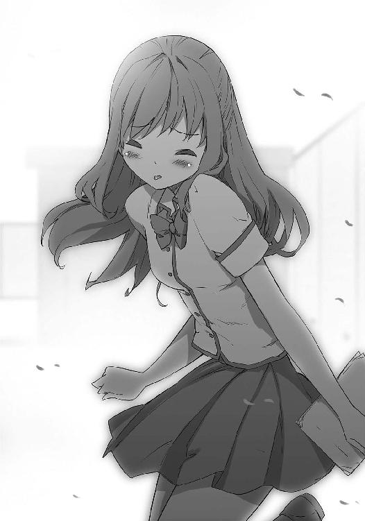

| OP-TICKET GAME | |
| 土橋 真二郎 | |
| (2014) | |
本書（電子版）に掲載されているコンテンツ（ソフトウェア／プログラム／データ／情報を含む）の著作権およびその他の権利は、すべて株式会社ＫＡＤＯＫＡＷＡおよび正当な権利を有する第三者に帰属しています。
法律の定めがある場合または権利者の明示的な承諾がある場合を除き、これらのコンテンツを複製・転載、改変・編集、翻案・翻訳、放送・出版、公衆送信（送信可能化を含む）・再配信、販売・頒布、貸与等に使用することはできません。
プロローグ
──願いが叶うチケットがあるという。
それは神様が作ったチケットとされ、使用者の願いを叶えるのだ。そんなチケットはある日突然空から降り、希望と共に男性に与えられる。男性の欲望や渇いた心を癒し潤す魔法のチケットだとされる。
しかし、そのチケットはその一枚だけでは不完全だという。願いを叶えるにはチケットを完成させねばならない。神が天界から人間界に落とすときに、風に舞ったチケットは散り散りに破けてしまったからだ。
そのチケットを手にすることができるのは高校生の男子に限られる。そして、願いを叶えるのは同級生の女の子だという。
つまり、チケットによりかなう願いはすでに決まっている。
チケットには女の子の名前が書かれており、その女の子のチケットを集め完成させれば願いは叶う。男子高校生の強い願いが──叶う。
その願いは、いうまでもなくおっぱいだ。
チケットを集めると、そのチケットに書かれた女子のおっぱいを揉める。
......まさに夢のチケットだ。
そんなチケットが現実に配られたらどうするか。平凡な高校生の、とあるクラスにチケットが降ってきたとしたら。
チケットにはクラスメイトの女子の名前が書かれている。明るく朗らかな彼女も、スポーツに汗を流す彼女も、窓際の席でいつも本を読んでいる彼女もだ。そのチケットには例外がない。すべての女子の名前が存在する。
チケットを完成させれば、クラスメイトの女子のおっぱいを誰でも揉むことができる。全員のチケットを完成させた場合、全員のおっぱいを揉むことすらも可能だ......。
もしもそんな伝説のチケットが君の手の中にあったらどうするか？
揉むか揉まれるか、そんな葛藤と欲望が入り交じった伝説のチケット。希望と絶望が表裏一体となったチケット。
そのチケットは都市伝説ではない。現実に存在するのだ。そして眠りから覚めるのを待っている。そうだ君が揉むのを待ち望んでいる。
その名は──おっぱいチケット。
......伝説は本当に存在する。
──灰色。
東京の街は灰色だ。ビルもアスファルトも空も灰色。スカイグレーでもなくオリーブグレーでもなく、ただのくすんだ灰色だ。しかし、あるときからカラフルになった。東京の街はキラキラと光を放ち、空は透明感のある青だった。
あれを手にしてからすべてが輝いて見える。世界はこんなに光で満ちていたのだ......。
夜が明け、朝日が夏の東京の街を光で満たす。大きなマンションの狭間にある廃墟のような二階建てのアパートにも、わずかに光が差す。そのアパートの錆びついた階段を上がると共同玄関があり、薄暗い廊下を進んだ突き当たり右の四畳半。
この部屋の住人、相葉憲伸は雀のさえずりと共に朝を迎える。
最初はちょっとした気まぐれだった。硬くなったパン屑を庇の上にまくと、数羽の雀が寄ってきた。丸っこい雀たちはとても可愛らしく毎朝来るようになった。そのたびに相葉はパン屑を放り投げ、立ち寄る雀も少しずつ多くなっていく。餌やりが日課となり雀の鳴き声とともに朝を迎えるという優雅な朝を過ごし、そして現在──。
窓を開けると電線に百羽の雀がとまっていた。
相葉は急いでパン屑を庇に放り投げる。タイミングが遅れると怒り狂った雀たちに部屋に乱入されめちゃめちゃに荒らされてしまうからだ。パン屑を放り投げた瞬間、雀たちはギャーギャーと鳴きながら一斉に飛んでくる。百羽の雀のダイブは壮観だった。
百羽ともなると庇だけでは足りず、窓の外に台をいくつかくくりつけており、そこにもパン屑を放る。一階の地面にまくのは駄目だ。雀を目当てに野良猫が寄ってきており凄惨な光景となったことがあった。
百羽の雀は入り乱れるようにパン屑を突っついている。庇に穴が空きそうなほどくちばしで激しく突っつく音が響く。
「雀たちの道路工事みたい」
隣で呆然としているのはクラスメイトの佐倉まどかだった。
「ぼんやり見てないで、その皿に水を入れて。でないとこいつら流し台に飛んでくるからさ」
相葉はパン屑をばらまきながら指示した。パン屑が少なくなると雀同士が喧嘩をして大混乱になってしまう。
「なんかどんどん集まってきてる。この街の雀が全部飛んできてるんじゃない？ そういえば最近の朝、近所で雀を見ないなあって思ってたの」
顔をしかめるまどかは制服姿だった。ウエーブの掛かった肩までの髪、赤いフレームの眼鏡をかけており、大量の雀を前に大きな瞳を瞬いている。
「餌、やらなきゃいいんじゃない？」
「そんなことしたら殺気だった雀に仕返しされるんだ。網戸をボロボロにされるわ、通学途中で襲いかかってくるわで大変なことになる」
「まるで恐喝ね」
無視してても相葉が起きるまでガラス窓を突っつくのだ。おかげで遅刻がなくなり、担任の苦悩も減った。しかし最近のクラスには別の問題がある。通学前にまどかがこの部屋に寄った理由も、その問題に関連する。
「雀ってチュンチュンじゃなくてギャーギャーって鳴くのね」
「ずっとうるさく鳴くから餌をやるしかないんだ」
「人間を怖がらないのね」
「春が雀の子育ての時期で、そのとき俺が餌をやっていた子雀が俺を恐れぬまま大きくなって、我が物顔で餌をねだるようになったんだ」
その不遜な態度が周囲の雀にも感染し、夏となった今ではこの有様だ。自分が蒔いた種とはいえ、朝の貴重な時間を雀に取られるのはきつい。
しばらく餌をやり続けると徐々に雀の数が減っていった。満足した雀が飛び去っていく。
「やっと落ち着いたわね」
「と、思うだろ。でもね、雀って巡回ルートが決まってて、そのルートに学校が入ってるんだよ。今度は昼に屋上でたかられるんだ」
「だから学校でパンの耳を集めてたのね」
クラスには相葉ボックスという箱があり、そこにクラスメイトがパンの耳を入れてくれるのだ。それで雀たちの食費をまかなっている。相葉は事情あってこの廃墟のようなアパートで一人暮らしをしているために、余計な出費が許されないギリギリの生活を送っているのだ。
この極貧生活を送ったことで多くの知識が増えた。簡単なアドバイスをするならば、カップ麺よりも袋ラーメンを買うこと。そして袋ラーメンに入っているスープの素を全部使うなということだ。スープの素はすばらしい香辛料だ。ラーメンに使っても良しパンの耳の味付けにも使え、チャーハンを作ることもできるし、ポケットに入れてちびちび舐めることだってできてしまう。袋ラーメンのスープの素を一回で使い切ってしまうのは愚か者のすることだ。
もうひとつは、何はともあれカレー粉を常備すること。どんなにまずい食べ物でもカレー味にすれば食べられる。よって、相葉はいつも小さなカレー粉の缶を持ち歩いていた。これは有名な登山家も断言している。
「......って、おい」
相葉はいつの間にか本棚をあさっているまどかを制した。まどかは仏像全集という本を取りだしてにやりと笑う。
「相変わらず、単純な場所に隠しているのね」
仏像全集はダミーで、そのカバーケースの中にちょっとエッチな本を隠していたのだ。
「一巻にはあえて本物を入れて、二巻に隠してたのに......」
まどかとは幼稚園に入園する前からの知り合いで、いわゆる幼なじみの関係だ。幼なじみだというと周囲の男子たちがうらやましがるが、そいつらは愚か者だ。付き合いが長すぎると自分の趣味や行動パターンが筒抜けになり、いかに上手くエロ本を隠しても、このようなことになってしまう。
「ふーん、相葉の趣味って、高校生になっても変わらずね」
まどかはパラパラと本をめくっている。
「変わらずって、この本だけでわかるわけないだろ」
「わかるわ。可愛い系の清純派で、くりくりした瞳で胸は大きめ。もっと具体的に言うなら、例えば相葉の隣の席の......」
「わかった、やめてくれ」
相葉は本を奪い取り、そっと本棚に戻した。まどかには過去の失恋や失敗も知られており弱みを握られているようなものだ。だからこれほど貧乏生活なのに、毎年まどかから誕生日プレゼントを請求されている。
「じゃあ行くわよ。雀に餌をあげるためにここに寄ったんじゃないんだから」
相葉は急いで登校の用意をした。顔だけ洗い鞄を持って、部屋から出ていったまどかを追いかける。アパートを出ると平和を取り戻した朝の風景があった。少しだけ湿ったような七月初旬の空気。通勤、通学するサラリーマンや学生たち。青空が広がり大きな雲が浮かんでいる。先ほどの戦争のような時間が嘘のようだ。だが、これから行く場所はちょっと気が重い。
「今日も暑くなりそうだな」
相葉は強い日差しに目を細める。
「はい、今日のバイト代」
まどかがカラフルな模様の包みを手渡した。開けると綺麗な四角に切りそろえられたサンドイッチが入っている。
「ママがね、ケンちゃんにって」
「ケンちゃんはやめろって言っただろ」
相葉はサンドイッチを手に取り頬張る。口に入れたのは玉子サンドだった。マヨネーズと胡椒のバランスが絶妙で頭がくらくらとするほどうまい。隣のはツナで、その横には和辛子のきいたハムサンドもある。
「おいしい？ ママは相葉に甘いからね。今でも、昔は可愛かったのに、って残念がってる」
「......うまい。サンドイッチの製作者と結婚したいくらいだ」
まどかの母親は美人でいて料理も上手なのだ。
「マスターと結婚するの？ ママはサンドイッチのお金を払っただけよ」
まどかはいたずらっぽく笑うとタンブラーを差しだした。
「なんだよローズのか。どうりで食べたことのある味だと思った」
タンブラーの蓋を開けるとコーヒーの香りが漂う。ローズとはまどかの叔父が経営する喫茶店のことだ。カフェイン中毒のまどかは登校前にローズに寄って、コーヒーを学校に持っていくのが日課らしい。マスターは相葉のことをとても気に入ってくれているが、元プロレスラーでいておかまなのだ。
「叔父さんが、夏休みになったら、またバイトに来なってさ。生活費は自分で稼がなきゃいけないんでしょ」
サンドイッチを一心にぱくつく相葉をみて、まどかはクスッと笑う。
相葉は父親と喧嘩をして家を飛びだしたのだ。そして現在は叔母の所有するあのアパートに住んでおり、家賃はないものの生活費はバイトでまかなっている。食べ物はたまに姉が持ってきてくれるだけで、高校生にしては苦しい生活だった。
まどかはイヤホンを装着すると相葉から少しだけ離れて歩く。最新式のデジタル音楽再生機だが、聞いている音楽はカーペンターズやスティービーワンダーなど、昔から趣味は変わっていない。周囲には夏服の学生たちの通学姿が見える。白いセーラー服やワイシャツが夏の日差しを反射しており眩しく感じられる。
そのままふたりは通学路から逸れて路地に入った。人間がやっと一人通れるくらいの路地を抜け、生け垣越しに顔を出すペスにパンの耳をやり、とあるマンションの敷地に入る。相葉はそのマンションの一階の部屋のチャイムを押して拳で扉を叩いた。
最近はこうしてこのマンションに寄るのが日課になっていた。登校拒否した彼女を誘うためだ。まどかはクラス委員長なので毎朝ここに寄っているのだが、関係ない相葉は迷惑この上なかった。まあ、バイト代はもらっているのだが。
「クラス委員長の佐倉です。おはようございます」
相葉も扉越しに呼びかける。
「麻由子ちゃん、学校に行こうよ。麻由子ちゃんが来てくれなくてみんな寂しがってるよ」
「今日はホームルームもあるし出てきてください」
反応はなかった。まどかは郵便受けに大量にささっていた新聞を整理しながらため息を吐く。
「今日も無理みたいだな。生きていればいいんだけどなあ」
相葉は動いている電気メーターを確認した。動いているからといって住人が生きているとは限らない。新聞の整理を終えたまどかは扉のノブに袋を掛けている。
「せめて返事だけでもしてください。あと、ご飯置いておきますから食べてくださいね」
扉の向こうから反応はまったくない。
「......それにしても、教師が登校拒否とはな」
「心配だわ」まどかは悲しげに首を振る。「先生はミッション系のお嬢様学校に通ってて男性に免疫がなかったから」
「だからって振られるたびにこうして落ち込むのもなあ。もういい大人なんだし」
友達のツテで知り合った男性に振られたようで、今回の引きこもりはすでに一週間になっている。表向き体調不良で休んでいるのだが、本当の理由はクラス全員に知れ渡っていた。
「お嬢様学校で男性と付き合うなんて罪悪だと、清純な女性として育てられた。だから、男性との付き合い方がわからないのかも」
「重いんだよきっと。私と付き合うからには本気で、遊びは駄目、結婚を前提、みたいなオーラがぶわっと出てさ、男が引いちゃうんだろうなあ」
「男女交際を禁止されて生きてきた割には、三十を過ぎると結婚はまだかと周囲が手のひらを返す。私の人生はなんだったの、って話になるわよね」
「今回も、振った男に詰め寄ったらしいよな」
「私の時間を返してって泣き叫んだみたい。麻由子先生にとっては、男性と付き合う時間さえも残り少ないのよ」
「三十過ぎて麻由子ちゃんも焦ってるんだろうな。それが空回りして負のスパイラルに陥ってさ、こんなことに......こんなことになっちゃうんだ」
「先生かわいそう。独身のまま老いさらばえていって、時間は戻らない。きっと孤独なまま死んでいくの。惨めで哀れな人」
まどかと相葉が涙をぬぐっていると、突如扉が内側から激しく蹴飛ばされ、ふたりはびくっと顔を見合わせた。
「よかった、生きてたな」
「とにかく今日も自習ね」
まどかは閉ざされた扉を見て首をすくめた。
相葉とまどかは担任の登校を諦め学校に向かっていた。校門をくぐり抜けると走る生徒たちの姿も見える。担任の説得に時間を掛けてしまい時間はギリギリだったが、相葉のクラスの担任の休みは決定しているので急ぐ必要はなかった。
今の相葉にとって担任の不登校など些細なことだった。それよりも男子たちには話し合うべき重要な問題があった。なのでホームルームの自習は幸いだ。そしてその対話は女子抜きでやる必要があり、慎重に繊細にやらねばならない。
廊下を歩く時点でチャイムが鳴った。急ぐ必要はないのだが相葉は早足になってしまう。うきうきしていた。最近は学校に来るのが楽しかった。それは他の男子も同じだろう。いつの間にかスキップを踏むかのように教室に向かっていた。
「相葉！」
そんな相葉の背中から声がかけられた。
「おう、ウッチー」
背後から軽い足取りで走ってきたのはクラスメイトの内田悠二だった。高校一年の男子にしては華奢で女性的な雰囲気だが、男子の間では直球変態野郎と呼ばれている。それほどに性的欲求には真っ直ぐな人間なのだ。
「相葉、どうだった？」
「麻由子ちゃん来ないって。自習だ、自習」
「じゃあ、話し合えるね。あれについて」
「馬鹿、そのことを口に出すんじゃないよ」
相葉はそっとまどかを振り返った。怪訝そうな表情をしているが聞かれていない。
「とにかく自習だ。──みんな自習だって！」
一年七組の教室の扉をがらりと開けて叫ぶ。自習。自分で学習する意味だが、自習で本当に勉強する生徒などいない。だらだらと無意味に時間を消費する名前ばかりの空白タイムが自習なのだ──。
「......ん？」
自習との報告に沸くかと思っていたが、教室はシーンと静まりかえっていた。生徒たちも何故か着席している。
「自習ではない」
声に振り向くと教卓の椅子に女子生徒が座っていた。それはあまりに綺麗で一瞬だけ人形かと思った。ロングの髪を垂らし、黒いストッキングを穿いた足を組んでいる。スレンダーな体と理知的な表情。一番印象的なのはガラスのような冷たい瞳だった。誰だ、この女は......。
「遅刻だな。ホームルームはもう始まっているぞ」
相葉はやっと気づいた。彼女はあの三年生だ。
「なんで、三年生が......」
「このクラスは生徒会の管理下に置かれることとなった」
彼女はにこりと微笑んだ。
「生徒会の管理下？」
相葉は唖然として皆に視線を向けたが、生徒たちは固まっている。逆に助けを請うような視線を返されてしまった。
彼女は三年の速水千種、生徒会の会長なのだ。端整な容姿と明晰な頭脳を持ち、生徒や教師たちから絶対的な信頼を勝ち得ている、と表向き評されている有名人だ。しかしそのポジティブな評価は千種自身が情報操作をして作り上げたものであることを相葉は知っている。
「まあまあ、そんな難しく考えるな。私は体調不良で休んでる担任教師の代わりを担おうというだけのことだ」
千種は少しだけ軽い声を出した。
「あの、それは副担任の役割だと思いますけど」
教室に入ったまどかが言った。まどかは明らかに千種を警戒している。
「教頭や七組の副担任には話を通してあるよ。私がどうしても七組の力になりたいと言ったら快諾してくれた。私はもう大学推薦も決まっていて重要な授業もないしな」
千種は教師からの信頼は厚いのだ。しかしクラスメイトたちの表情はさえない。それは彼女を取り巻く噂を知っているからだ。陰湿な罠を仕掛けて不良を追放したりセクハラ教師をどん底に突き落としたのは正義の名目もあるのでまだいい。下級生クラスを玩具にして遊んだりしたのは明らかに千種の趣向だ。
それでも生徒たちは学校の裏権力をほしいままにしている千種に何も意見できない。強大すぎる生徒会の歪さは、ＯＢからの寄付金を管理するようなシステムにある。どの部活も同好会も生徒会には頭が上がらなくなり、千種は部費分配をかさに権力を拡大することになった。
「先輩は、また私たちを玩具にする気じゃないんですか？」
まどかは千種の冷たい瞳を正面から受け止めている。
「玩具とはどういうことだ？ ぬるぬるバトルロイヤルのことか？ あれは他クラスで行ったイベントだったはずだが」
「そ、それは噂に聞いただけですけど」
「ぬるぬる液体を作るのにも苦労したのだぞ。片栗粉を混ぜた水をかき混ぜながら煮詰めるという作業は労力だった」
「その話ではなく、例えば春のレクリエーションとか......」
相葉たちが入学してきたときの歓迎イベントは表向きシンプルなレクリエーションだったが、随所に性的なゲームが仕組まれていたことを思いだす。スタンプラリー式のハイキングだったのだが、スタンプポイントごとにエッチなゲームが仕込まれていた。
「ああ、ワイシャツ早脱がしゲームのことか。でも、ワイシャツの下は水着を着せただろ」
「いえ、そういう問題じゃなくて......」
「じゃあ、氷を舐めてキャンディを取りだせゲームのことか？ あれをエッチなゲームだと考えるほうがエッチなんじゃないか？」
「いえ、やっぱりそういう問題じゃなくて......」
「それに、お前たち七組はほぼゲームに参加しなかったはずだが」
「それは、麻由子先生が、エッチなことは駄目だと」
「他のクラスは困難に打ち勝った。その上でゴールにたどり着いたのだぞ。立ちふさがる障害を糧として成長した」
「そんなこと言っているのではなく、ハイキングにエッチなゲームは必要なかったのではないかってことです。なんていうか意味がないというか」
「甘えるな！」
いきなり千種が教卓を叩いたので、七組の生徒たちはびくっとした。
「サン＝テグジュペリ曰く。人生には解決なんてない。ただ進んでいくエネルギーがあるばかりだ。そういうエネルギーを作りださねばならない。解決はそのあとでくる、と。お前たちも何も考えずに進むべきだったのだ。彼はエネルギーを持って、男湯に女の子一人で入っちゃおうごっこゲームをクリアしろと言っていたのだ」
「あ、あの、そのゲームもとっても嫌でしたけど、それより星の王子様の作者さんは関係ないと思いますが......」
「あれらのゲームは伝統なのだよ。この学校は元々女子校で男子が少なかった。その男子生徒を学校に馴染ませるためにちょっとエッチなゲームをやったらしい。私はその先輩方の伝統を受け継いでいる。おかげで打ち解けてすぐにカップルができただろ」
千種の言うとおりこの学校にはカップルが沢山作られている。しかし、七組に限ってはカップルは一組しかいなかった。それも隠れてこそこそと付き合っている状況だ。
「このクラスの担任が作った規則に、恋愛禁止というのがあるらしいな。お前たちも担任を気遣いぎくしゃくとした男女関係となっている。だったら自由と尊厳を取り戻すべきじゃないか？ 他のクラスのように普通に恋愛して楽しい学校生活を送る。私がお前たちのために協力するよ。だって、私の可愛い教え子だもの」
千種はにこりと笑った。悪魔の微笑み。相葉たちはそう呼んでいた。
「反論がないなら、私が担任代理となろう」
相葉は冷気を感じていた。窓の外は夏だが教室は冷たい空気に満たされている。クールビューティーと称される千種が発している冷気だった。
「......あの、千種先輩」
そんな凍てつく空気の中で、立ち上がった女子生徒がいた。
「私は麻由子先生を待ちたいです」
はっきりと声を出したのは、相葉の隣の席の女の子、高橋唯だった。風を感じた。教室に暖かな日差しが入り込んだように思えた。それは相葉が高橋唯という彼女から感じる光だった。
「麻由子先生は、すぐに元気になって帰ってくると思います、から」
唯は千種を向き微笑んでみせた。まるで吹雪の中で花弁を広げる一輪の花だ。冬と春が対峙している。
「確かに麻由子先生はホームルームで愚痴を言うし、言動にも気を遣わなきゃいけないし、三十っていう数字に過敏に反応したり、男性関係が上手くいかない時期は泣きわめいたり怒鳴ったり授業放棄したりしますけど......それでも優しい先生なんです」
本当に優しいのは唯だなあ、と相葉は目を細める。
「私が代理となるのは担任が戻るまでだ」
「千種さんのような綺麗で若い人が担任代理になったり性的なゲームなんかをすると、先生が帰ってきたときに傷つき、大泣きしちゃう可能性があります」
唯の言うとおりだ。やっぱり若いほうがいいのかとか、私が苦しんでいる間に男女でいちゃいちゃしていたのかなどと大荒れになる可能性が高い。
「先輩、ということで心遣いはうれしいんですが、この件はなかったことに。女子たちはちょっと同性の先輩にいろいろ言いづらいですし」
相葉は恐る恐る唯の援護射撃に回った。
「そうだな、では男子に決めてもらうか。男子たちが反対するなら私は引き下がろう」
意外にも千種は譲歩した。すると困惑する男子たちからもぽつぽつと意見が出る。
「生徒会も、いろいろ忙しそうですし」
「麻由子ちゃんにも悪いかな？」
「すぐに復帰するだろうしね」
見ると唯もほっとした表情だった。もしかしたら、ここは彼女へのアピールチャンスかもしれない。ビシッとはっきりと千種に意見してやるのだ。
「俺も女子の味方っすよ。だから──」
相葉がビシッと言おうとしたそのとき、千種はぼそっとつぶやく。
「......あれ、本物だぞ」
「え？」
相葉は石像のように固まった。あれとはなんだ？
「いろいろ話そうと思ったのにな」
千種の言葉に男子たちも顔を見合わせる。
「でも、私を拒絶するんなら仕方ないなあ」
男子たちがざわついた。やはりあのことだ、確実にあれのことを言っている。数日前に配られたあれのことを......。
前のめりになっていた相葉は、千種に向かって口を開く。
「......先輩、別の場所でお話ししませんかね」
ここは女子のいない場所でゆっくりと対話する必要があった。
「うん、それがいい」
「自習室なら開いてるし、そこで」
男子たちもうなずく。
「え、自習室に行くの？」
まどかがぽかんとしている。
「うん、自習室でちゃんと議論するから、さ」
相葉は千種を丁寧に教室の外へと誘導する。千種が出て行くのを見計らって、相葉はまどかに親指を立ててみせた。
「がつんって言ってやるからさ。生徒会のいいなりにならないから安心しろ。俺たちが生徒会の悪意から守ってやる」
「なんなの、一体？」
顔を見合わせる女子たちを残し、相葉たち男子は教室から出ていった。
＊
「いつの時代でも男は戦い女は与える。それはこの学校においても変わらない人類のルールなのだ」
ホワイトボード前の椅子に座り、千種が語っている。
「先輩、そんなことより、あのことについてですが......」
相葉は焦れながら尋ねた。すべての男子が千種を囲むように立っている。
「あれとは、あのことを言っているんですよね」
「そうだあれのことだ」
千種の言葉に誰かがゴクリと唾を飲み込んだ。
「あれは学校伝統のチケットであり、まがい物ではない」
「じゃあ、伝説は本当で......」
「だが、私は別にお前たちの先生でもなんでもないからな。代理でも担任となったら、いろいろ教えてやれるのになあ」
「でも、それとこれは......」
「生徒会の悪意とかなんとか言ってたよな。さすがに傷ついたなあ」
「先輩、あれは冗談ですよ。相葉ジョークですよー」
「私にがつんと言うんだろ？」
「よく考えたんですが、先輩は僕らのためを思って担任代理を買って出てくれたんですよね」
相葉は声を張った。周囲の男子たちもそれに続く。
「善意を無下にするわけにはいかないよね」
「麻由子ちゃんもゆっくりと復帰してほしいし」
「先輩と過ごせる時間も少ないしね」
誰ともなく拍手がわき起こった。
「受け入れよう先輩を。生徒会の善意を受け入れよう！」
相葉が叫ぶと、周囲も同意した。
「異議なし」
「生徒会万歳！」
「......なるほど、私は七組に受け入れられたということか」
千種は満足げにうなずいている。
「では先輩として時には姉として私がフォローしよう。私の可愛い教え子だものな」
「いや、そんなことより早速ですが、このチケットのことを......」
相葉はポケットからチケットの束を取りだした。数日前に机の中に入っていたチケット。十枚あるチケットには女子の名前が書かれている。すべて別の名前でありダブリはない。そしてそのチケットはシャッフルされた状態ですべての男子に配られている状態だ。
「それはこの学校の伝説のチケットだ。その名は──」
千種は一呼吸置いてから言った。
「──おっぱいチケット」
男子たちは顔を見合わせどよめく。やはりあのおっぱいチケットなのだ。コンプリートするとおっぱいを揉めるという伝説のチケットだ。
「待て、落ち着け」
喧噪の中で佐々木翔が立ち上がった。彼は七組の副クラス委員長だ。
「会長、お待ちください。お言葉ですが、おっぱいチケットが本当に存在するなんて信じられません。信憑性が......」
「信じる信じないはともかく、流通した以上おっぱいチケットは眠れるチケットではない。チケットの主人を待ちおっぱいを揉ませる準備をしている。一年ぶりに封印が解けたのだ」
「一年ぶり？ 一年前にもあったんですか？」
「現在の二年生の一クラスでおっぱいチケットが流通した。そのときも、私たちが生徒会としておっぱいチケットの監視役をやったよ」
千種は学校の生徒会としては長期政権なのだ。二年に進級してすぐに生徒会長に立候補すると、演説で生徒たちから絶大な支持を得た。その後、生徒会や委員会の改造を行い現在に至る。
「ほ、本当に揉めるんですね。おっぱいを揉めるんですね」
浮ついた声を出したのは内田だった。
「落ち着けウッチー。いきなり飛びつくな」
相葉は内田を叱責した。内田は変態でいて重度のお人好しなのだ。おっぱいチケットの件に関しては慎重に対応しなければならない。特に千種は信用ならない人間だ。
「相葉の言うとおりだ、ウッチー。他人に心を許すなよ。本当に揉めるか揉めないかは重要な問題だ。簡単に信用するな。餌に飛びつく犬か？ 俺たちは違うだろ。それで、コンプリーターは出たんですか？ 成功率を知りたいのですが」
佐々木は千種相手でも物怖じしない。頭の回転が速く弁が立つタイプであり女子からの人気もある。しかし当然ながらおっぱいを揉んだことはない。
「一年前のコンプリーターは三人、だな」
千種がレポート用紙を取りだし確認している。
相葉たちは顔を見合わせる。三人。微妙な人数だった。この学校の一クラスは約三十人。男子はその半分の十五人。三人となると成功率は二十パーセントとなる。
「コンプリーターは対象の女子と今も付き合ってる」
男子たちがどよめく。おっぱいを揉んだ上に付き合っているのだ。
「こんな感想があるな。おっぱいチケットをコンプリートしたおかげで灰色だった学校生活がカラフルになりました。おっぱいチケットと管理役の生徒会に感謝です。一年一組高木裕吾」
自習室がざわっとし、誰かが叫ぶ。
「高木先輩の彼女ってあの巨乳の水泳部の人だろ。あの人もコンプリーターだったのか」
「えっと他には......本当に揉んだんだなーって気持ちです。この気持ちを知らずに終わるみんなが不憫でなりません。おっぱいチケットがあってよかった、本当によかった」
おおーっと歓声が沸き上がる。本物だ、おっぱいチケットは本物なのだ。まるで魔法だ。願いを叶えてくれるチケットだ。
「まだあるぞ。おっぱいを揉んだクラスメイトの話を聞くたびに涙が出ます。これは格差社会です。その階級闘争に負けた俺たちは......生きていていいのでしょうか」
「え？」と相葉はきょとんとする。
「あまりに悔しいため、クラスで一番太った男子の胸を揉む毎日です。柔らかいです。でも、この涙は何でしょう。揉むたびに涙が止まりません。助けてください、助けて誰か......」
シーンと自習室が静まる中、千種がぺろっと舌を出した。
「あっと、こっちはコンプリートできなかった男子たちのインタビューだった」
「そいつらのインタビューは必要ないでしょ！」
相葉は思わず千種に声を荒らげてしまった。
「見てくださいよ、みんな怯えてます。さっきまであんなに和やかだったのに」
皆の足ががくがくと震えていた。勝者と敗者の現実を知ってしまったのだ。
「甘えるな馬鹿！」
バンと千種がホワイトボードを叩き、相葉はびくっとした。
「ただでおっぱいが揉めると思うな。物事にはリスクはつきものだ！」
「......でも、本当に揉めるのかな」
誰かがつぶやいた。相葉も同様に思う。なんというかおっぱいを揉む想像ができないのだ。三十路で独身の担任教師の視線があるため、クラスでは性的な話題を避けてきた理由もある。あまりにも七組の男子は経験値が少なかった。
「現実的にチケットを集めて、本当に揉ませてくれるのでしょうか」
佐々木が千種にすがるように問う。希望と疑心が複雑に絡み合っている。
「約束する。チケットの効果は確かだ。これはこの学校の女子伝統のチケットだからだ。もしも、コンプリートして揉めなかったら、私のを揉ませてやろう」
意外すぎる確約に、男子たちは硬直した。
「......あの、でも、報復があるんでしょ。爪をぐいーって剥がしたりするような陰湿なのが」
相葉はおそるおそる聞いた。
「これは約束だ。そのときになって無様なことはしない。はっきりと揉ませてやる。百年後だとか分厚いコルセットを着けるとかくだらないまねはしないし報復もない。直に揉ませてやる。この私のおっぱいでよかったらな」
千種は両手で自分の胸をつかんで微笑んだ。ブラウスの上からでもわかる重量感あるバスト。千種が手を動かすたびに形を変えている。ぽよんと音が聞こえるかのようだ。性格を別にすれば速水千種は完璧な女性だった。スレンダーであり胸も大きい希少なタイプ。もしもそんな彼女のおっぱいを揉めたなら......。
「......おい、大丈夫か？」
千種の声が遠くから聞こえた。はっと我に返ると、男子たちは皆、魂が抜けたように直立していた。
「あの、先輩、おっぱいを揉むって簡単に言うけどいろいろな問題がありますよね。例えばおっぱいの定義です。どこからどこまでがおっぱいだとか、揉むのは両手だとかほっぺを使っていいだとか、後ろからだとか前からだとか......」
「相葉。近い、ちょっと近いから」
相葉は千種に押しのけられる。無意識のうちに前のめりになっていた。あれほど怖い先輩だったのに、おっぱいを揉んでいいという言葉を聞いたとたん恐れが消えた。これがおっぱいの魔力というものなのか。
「焦るな馬鹿」と、佐々木が相葉を突き飛ばした。
「会長。僕は会長を尊敬していますが、ちょっと信憑性が足りないような気がします。レポートのインタビューなんかも捏造できますし──」
がらっと自習室の扉が開いた。そこには男子生徒が立っている。青いバッジを付けているので三年生だ。どこかで見たことのあるような気がした。
「副会長だ」と、佐々木が耳打ちした。
生徒会の副会長だ。そういえば七組は生徒会の管理下に置かれたのだ。
副会長は千種に軽く頭を下げ自習室に入ってくる。皆の視線を集めながら中央のパイプ椅子に座り、おもむろに口を開いた。
「ある日私は揉んだのです。シャツ越しにはっきりと手に伝わるあの感触、何物にも代え難い柔軟さ。手を添えて私は驚愕したのです。なんということだ、おっぱいとはすばらしいものだ、これがおっぱいというものか、女子のおっぱいなのか！」
静まる自習室の中で、生徒会副会長の三年男子生徒が両手を広げている。相葉の目にははっきりと見えた。手に収まる胸の形が。もしやこの人は......。
「......成功者」
「そうです、二年前に開催されたおっぱいチケットのコンプリーターです」
実際にいたのだ。おっぱいを揉んだ人間がこの学校に実在する......。
「......本当に揉めるんだ。本当だったんだ。伝説は本当だったんだ！」
「ウッチー待て、まだわからない。そもそも問題があります。あなたが──本当に揉んだのかってね」
佐々木に指を差された副会長は静かに椅子に座っている。
「佐々木、それは愚問だよ。副会長は本当に揉んだ。それは確かだ」
相葉は断言した。確信があった。彼は本当に揉んでいる。
「相葉、何故だ？ なんでわかる」
「さっきの副会長の言葉、揉んだときの感想だ。あの臨場感ある感想は揉んだ人間にしかできないものだ。いつの間にか俺の両手は空気を揉んでいたよ。まるでそこにおっぱいがあるかのように。あんなの妄想じゃ無理だね」
相葉の言葉に男子たちは納得した。相葉だけでなく男子たちは皆、空を揉むように手を動かしていた。それほどにあの言葉には迫力があった。頭を殴られたかのように響く言葉。彼は真実を言っている。
「だけどやっぱり問題がある。それはおっぱいチケットを介してなのか？ おっぱいを揉んだのはチケットが関係ない可能性だってある」
落ち着け、と相葉は皆に目配せをした。まずはチケットの真偽確認なのだ。例えばアメリカ合衆国のアポロ計画。宇宙計画は米ソ冷戦の象徴だった。そしてアメリカのアポロ11号が初到達を果たしたが、今になってその真偽が問われている。後にアポロは幾度も月に到達したが、果たして本当に初到達は11号だったのか。現在の評価はアポロが月に行ったことは確かだが、いつ到達したかはわからない、なのだ。同じく彼の揉んだおっぱいも......。
副会長の言葉を待つが口を開かない。場が静まる。まだ口を開かない。そのプレッシャーに負けたのは男子たちだった。
「どうなんです？ チケットで揉めるんですか、揉めるんですか？」
内田が呼びかけてしまった。副会長を見ると、彼は穏やかに笑っていた。
「──チケットで揉めます」
自習室がどよめいた。
「君たちと同じ状況でした。ある日机の中にチケットが入っていたのです。それは他の男子も同じでした」
それが伝説のおっぱいチケット。
「そして私はそれを同種、コンプリートすることに成功したのです」
コンプリートを果たし、揉んだ。
「待て。問題は女の子の反応だ。嫌々なのを揉んだ場合、その後の学校生活は終わりだ。女子たちから無視される最悪の学生生活になっちゃう」
相葉はチケットの効力に懐疑的だった。重要なのは信頼性だからだ。社会に流通する通貨は、そのものには価値はない。ただの金属片と紙切れなのだ。しかしそこに価値が生まれるのは確固たる信頼性が存在するからだ。
「がんばってチケットを集めてコンプリートして女子に渡してさあ『嘘だよバーカ、なに信じちゃってるの、プクク』なんて言われたら、俺は立ち直れない、もう終わりだ......」
最悪のどっきりだ。そのような罠にはまれば登校拒否となってしまうだろう。
そんな相葉に副会長は笑みを向けた。馬鹿にした様子はなく優しげな笑顔だった。
「チケットの効果は絶大です。彼女はコンプリートした私に対して、にこやかに揉ませてくれました。そして、その後の学校生活では私の恋人となりました......」
相葉の足が微かに震えていた。人間の格の違いを感じてしまった。
「あ、あの、それはブラジャーとかしたままですか？」
黙れウッチー黙ってくれ、と言おうとしたが声が出ない。
「ブラジャーは取っていただきました。体操着だけを着たその上から──」
「黙れ、もういい！」
相葉は叫んだ。気づくと汗をかいていた。対話をするはずだったが、いつの間にか副会長のペースになっていた。ハアハアと乱れた呼吸だけが自習室に響いている。
頭がくらくらとして考えがまとまらない。おっぱいという言葉が思考の邪魔をする。一気に情報を与えられ、その処理ができない状態なのだ。冷静にならねばいけないのに、反して全身が熱くなる......。
それでも信頼していいのではと思った。彼が揉んだのは真実だ。そしてチケットがまがい物で女子のひんしゅくを買ったなら、現在副会長の要職に就いてはいないだろう。
皆はチケットをぎゅっと握ったまま視線を複雑に絡ませる。このチケットを机の中で見つけてから、おっぱいチケットの噂も聞いた。しかし確信は持てなかった。それでも誰もチケットを破り捨てることなく持っていた。
そこには希望があったからだ。
──本当に揉めるのか？
希望であり最大の疑問だ。しかし想像ができない。おっぱいを揉むという行為は日常からかけ離れすぎている。例えるならテレビ画面の向こう側の作り物の映像であり、もやもやとした霧のようであり、ファンタジー世界にてドラゴンを倒すような空想だ。本当にそんな行為が存在するのかすらわからない。しかし目の前には揉んだ人間がいる。
虚実の壁が崩れた、と、そんな気分だった。
「この中におっぱいを揉んだ人間はいますか？」
副会長の声に沈黙する。誰もいない。七組は誰も揉んでない。ユダはいない。
「でしたら立ち上がりなさい。チケットを集めるのです」
「......先輩、いえ、おっぱいマスター」
横を見ると内田が目に涙を溜めていた。
「マスター、戦います、僕は戦います......」
「そうだ立ち上がるのだ。希望に向かって突き進むのだ」千種が声を上げた。
──希望。
確かにそうだ。これは希望が凝縮されたチケットだ。
「揉みます、おっぱいを揉みます......」
感極まる男子たちの中で相葉は目を閉じる。この時点でおっぱいは幻想でも虚像でもなくなった。おっぱいはすでに自分の手の中にある。
「おっぱいは揉むか揉まれるかだ」
それは違うだろ、と思ったが、相葉は千種に突っ込まず、ただチケットを強く握りしめた。
＊
男子生徒の野望と欲望を抱え込んだまま学校生活は再開された。表向き変化のない日常。おっぱいチケット収集は水面下で進行する......。
相葉たちが自習室から教室に戻ると女子たちが近寄ってきた。
「どうだった？ ちゃんと断った？」
相葉に気づいたまどかが声をかけてきた。
「あ、ああ、話し合った。でもさ、会長は意外に真面目な感じで担任代理を買ったらしいよ。なあ佐々木」
いきなり振られた佐々木はびくっと反応した。
「うん、生徒会長は大学で教育学部志望らしい。だから今のうちにシミュレーションしておきたいってさ」
さすがに佐々木は口だけ野郎だ。こんな時は役に立つ。
「ふーん、教育学部志望ねえ。そうは見えないけど」
「だから、みんなで話し合ったんだけどさ、会長も純真な気持ちみたいだから、協力してあげようってなったんだ」
「じゃあ、認めたの？」
女子たちが顔を見合わせている。
「麻由子先生が戻ってくるまでね。生徒会の善意を踏みにじるのもさあ、なあ相葉」
「そうそう。なんだかんだいって大切な先輩じゃないか。千種さんは独特なところがあるから、俺たちと変な感じで接しちゃうけど、本当のところは仲良くなりたいんだって。ちょっと落ち込んでたしかわいそうだった。受け入れると、生徒会のオリジナルステッカーもくれるって」
「それはいらないにしても、あまり嫌がるとさすがに失礼よね」
まどかは複雑な顔をしている。
「基本的にはいい先輩だし......」
「変なところもあるけど、優しいところもあるしね」
女子たちにも千種を拒絶した罪悪感があるようだ。
「ということでさ、麻由子ちゃんが戻ってくるまでだし交流しよう。三年生たちも半年ちょっとしたら卒業しちゃうしさ」
相葉の声に、うやむやな感じながらも女子たちも納得する。
自分の座席に戻っていく男子たちの動きは妙にぎくしゃくしている。誰も女子と視線を合わせようとしない。相葉もまどかの顔を見られなかった。視線を少し下げたためにまどかの胸に焦点が合ってしまう。まどかとは子供の頃からの付き合いだが、いつの間にか胸が......。
まどかが眼鏡に指を添え疑わしげな視線を向けたので、相葉はさっと退散した。自分の座席に戻ってふーっと大きく息を吐く。
周囲の風景がぼやーっとして見えふわふわしている気分だった。現実感のなさだ。先ほどまで日常だった空間は、今や非現実となっていた。チカチカと切れかけた蛍光灯も優しい光を放ち、窓からは爽やかな空気と香りを風が運んでくる。
男子たちも相葉と同じだった。皆は幸せそうな顔をしている。あのチケットは皆に幸せを運んでくれた。一年七組は争いのない平和な世界に変貌した......。
......ん？
教室を眺めていた相葉はふと思った。そういえばこのクラスは少しだけ女子が多い。男子が十五人、女子が十八人の合計三十三人。昔女子校だった名残で学校全体で女子が多いのだ。
ということは男子一人がそれぞれ揉んだとして三人が余る計算になる。その三人の余ったチケットはどうするのか。
......いや、複数回揉んではいけない、というルールはなかった。だとしたら、上手くやればその余った三人のチケットも手に入れ合計四人。
四人どころではない。クラス全員のチケットをコンプリートすることも理論的には可能だ。十八人のチケットをコンプリートしたら揉み放題だ。いっぺんに揉む必要もない。一日一揉みで十八日間。十八日間天国のような日々を──いや、それより。
相葉は顔を上げ窓を向いた。重要なことを考えてなかった。まず自分はどのおっぱいチケットを集め......。
相葉は窓を見つめて瞬きした。窓の外には夏の空が広がっている。白い積乱雲に濃い緑。窓に映る女子生徒と視線が合った。彼女はそれに気づいて小さく笑った。
「......あ、えっと、何か？」
相葉は隣の席の高橋唯に向き直った。いつの間にか彼女が席に戻ってきていた。もうすぐ二時間目の授業が始まるようだ。
「あ、ううん違うの」
唯は恥ずかしそうに首を振った。お互いに視線を少しだけずらしたまま沈黙してしまう。入学から席が隣だった彼女だがまともに会話したことはなかった。ぎこちない空気が流れる中、唯が顔を上げた。
「相葉君、ずっと難しい顔して考え込んでたから」
「......うん、なんていうか世界のことに憂いていたみたいな感じだった」
「でも途中すっごく幸せそうに笑ってました」
「............」
顔に出てしまったのだ。クラス全員のおっぱいを揉む妄想を無防備に垂れ流し、それをよりによって彼女に見られてしまった──。相葉は自分の太ももを拳で殴りつけた。
「わっわっ、どうしたの？」
「な、なんでもない、気にしないで」
「......相葉君は優しいね。千種先輩がかわいそうって、確かにそうかも」
唯は瞳を瞬かせ微笑んだ。光の粒が散ったような気がした。明らかに彼女自身が光を放っている。緩やかなウエーブの掛かったセミロングの髪は一本一本が空間の中で揺れ動くのがはっきりと見える。夏の湿気を含んだ空気も、彼女も周りだけは涼やかになるのだ。
「うん、でもあんまり同情すると、骨までしゃぶられるから気をつけないとね」
相葉は平静を保った振りをして再び窓に視線を向けた。自然に唯と会話をしてしまった。もしかしたら、これもおっぱいチケットの効果なのかもしれない。
もしかしたら、本当に魔法のチケットなのでは？
相葉は二時間目の授業が始まってもぼんやりしていた。相変わらずふわふわとした感覚が続いている。教科書を見る振りをして横目で隣を窺うと、真面目な表情でノートに書き込んでいる唯の姿があった。単語を反芻するかのようにわずかに動く唇、一分間に五回ほど瞬く瞳、肩に掛かった髪をさらりとかき上げる仕草。
そして胸のライン。思った。あの膨らみは何でできているのだろうか。あまりに想像力をかき立てる立体感。制服の上からでもあの形の芸術性がわかる。両手でちょうどつかめるほどの大きさ......。
......揉めるのか？
机の上にぽたりと汗が垂れ落ちた。
今までそんなことを考えたことも、彼女にそんな視線を向けたこともなかった。しかし......。
もしも彼女のおっぱいを揉めたなら。
どんな感触なのだろうか。彼女はどう反応するのか、思ったよりも大きいのか小さいのか、弾力性に富んでいるのか柔らかいのか。......柔らかいの？ 柔らかいのかい？
（馬鹿！）
相葉は再び自分の太ももを強烈に殴りつけた。
唯がびくっと反応し、教師も顔をしかめ注意してきたが相葉は毅然と無視する。
高橋唯は自分にとってそんな存在ではない。そこにいるだけでいいというか、綺麗で可愛い人形というか、水泳部で泳ぐ姿は人魚のようであり、微笑むたびに光がこぼれるようで、それを見ているだけで幸せになれて、周囲に漂う美しい香りのような、女神というかなんというか......おっぱいを揉みたい？
違う！ 違うんだ、そうじゃない。
だがチケットがあるということは可能性があるのだ。輝く未来が手の中にあるように、高橋唯のおっぱいも手の中にある。集めれば揉める。揉めるのだ──。
相葉は手の中のチケットを確認した。
高橋唯。
十枚の中に彼女の名前が書かれたチケットが存在した。
これは希望だ。キラキラと輝く希望の光なのだ。
＊
屋上にまいたパン屑に雀たちが群がっている。
相葉は、昼休みは屋上で昼食をとるようにしている。基本的に惨めな食生活なのでクラスメイトに見せたくないのだ。しかし、屋上で昼食をとるにあたって、まずこの雀たちの食事のほうが優先される。彼らがじっと視線を向ける中で飯など食えやしない。
屋上にはクラスの男子生徒たちが集まっている。佐々木の呼びかけにより対話をしようとなったのだ。場所は昼時の屋上が選ばれた。屋上で昼食を食べると雀に襲われるという噂があり、この時間は人がいない。
「雀も落ち着いてきた」
相葉はパン屑を払いながら男子たちに歩み寄る。
「で、こんな時に話ってなんだよ佐々木」
「うん。話すことなんてないよね」
男子たちは顔を見合わせている。
「なあ、お前らは気づいていないのか？」
佐々木の表情は硬い。おっぱいチケットを手にしているのにどういうことだ？
「なに怖い顔してるんだよ。おっぱいチケットが手に入ったんだよ。これはすばらしいよ。だって午前の授業中はずっと幸せだった」
対照的に内田の表情は恍惚感に溢れている。
「なあウッチー。俺も途中までは幸せだったよ。英単語なんて耳に入らず、ずっと妄想の世界に引きこもっていた」
「うん、僕もそうだよ。おっぱいのことばっか考えちゃって、辞書でＯＰＰＡＩって探しちゃったくらい。見つからなくて焦っちゃったよ」
「でも、そのおっぱいは偽物だ。現実じゃない。しょせん妄想だ」
佐々木は残念そうに首を振る。
「俺たちはバラバラのチケットを持っている状態だ。このままじゃ──揉めない」
チュンチュンと雀の鳴き声だけが屋上に響く。
ガーンという音が頭に響いた。相葉は頭を殴られた気がした。揉めない──だと？
「チケットはあくまでチケットの価値でしかない。チケットはこの時点ではただの契約なんだ。遊園地のチケットと同じだ。遊んでこそ価値があり、それを集めることにまったく意味がない」
遊園地のチケット。そうだ、まだこのおっぱいチケットはおっぱいの価値を持っていない。そんな単純なことを忘れていた。幸せすぎて考えが及ばなかった。妄想ばかりしてすでに揉んだ気にさえなっていた......。
「......だからこそ、皆で協力してコンプリートを目指す必要がある」
自分の力では揉めない。どんなに揉みたくても一人の力では不可能だった。
「佐々木の言うとおりだ」相葉は同意する。「でも、協力すれば俺らは幸せになれるさ。なあに単純計算だ。女子は十八人、俺たち男は十五人。最低一人は揉めて、もしかしたら二人だって可能だよ」
「そっか、複数コンプリートも可能なんだ」
内田が歓喜し、それが周囲の男子たちにも伝わった。
「みんなで揉もう。絶対に俺たちは裏切らない」
相葉は皆とうなずきあった。大丈夫だ。このクラスの人間関係は強固だ。裏切り者はでず、必ずハッピーエンドになるはずだ。
「俺たちは友達だ」
「裏切らない、友達は裏切らない、おっぱいは裏切らない！」
男子たちは寄り添うように集まる。強固な友情......。
「嘘だ！」
怒号に雀が飛び去っていく。叫びの主は佐々木だった。
「俺は知ってる。すでに皆を出し抜こうと動いている人間がいる」
きつい視線を周囲に投げる佐々木。男子の中ですっとうつむいた者がいた。佐々木は彼に近寄り肩に手を置く。
「なあウッチー、こそこそとチケットを集めようとしてたよな。買い取るから、って周りに言ってただろ」
内田の体が震えている。彼は妄想すると同時に動いていたのだ。抜け駆けだった。
「......ご、ごめんなさい」
突如、内田はがくっと膝をついた。
「胸が目に入って、つい、ほしくなっちゃって、慌てちゃって、先走っちゃって......」
相葉は膝をつく内田にゆっくり近づき、肩に手を置き微笑んだ。
「ウッチー、責めてるわけじゃない。揉みたいっていう感情は自然だ。でも、そういうのはみんなで話し合ってやんなきゃさ」
ここで内田を責めても意味がない。人間関係が崩れるだけだ。周囲の男子たちも怒った様子はない。誰もが思い当たるのだろう、自分でもそうしたはずだと。
「その子は誰なんだ？ ウッチーの気になる子なのか？」
「いや、特別な感情はないけど、大きい胸を見てたらつい。彼女のチケットも偶然に持ってたから気づいたら集めてた」
「誰だ？ 胸の大きい子っていったら、仲村さん？ それとも春野さん？ 言ってみろよ、恥ずかしいことじゃない。揉みたいは悪じゃない」
「......い、岩崎さん」
ざわっとした。確かに岩崎さんの胸は大きかった。しかし彼女は......。
「おい、お前、俺の彼女を」
唖然としているのは岩崎と付き合っている須郷という生徒だった。このクラスで唯一のカップルなのだ。そして、唯一彼女を持っている須郷は師匠と呼ばれている。
「俺だって、まだ手を繋いだこともないのに......」
唖然とする師匠の横で、周囲の男子も呆れている。
「さすがにそれはないだろ」
「なあ、いくら胸が大きいからって。おっぱいがあればいいのかよ」
「こいつクズだな。絶対的な悪だ」
「まあ、待てみんな」相葉は割って入った。「さすがに岩崎さんはやめないか？ たとえチケットが手に入ったとしてもなんか違う。しょせん他人のおっぱいだからだ。そんな感情で揉んでもいい気分にならないし、満たされない」
「言うとおりだな」
佐々木も同意し、周囲もうなずく。
「相葉の言うとおり、岩崎さんのチケットは破棄するか？ 俺たちは人間だ。自分たちでルール作りをできるはずだ。だから岩崎さんははずす」
「いや、俺の考えは違う。岩崎さんのおっぱいチケットは破棄しない」
相葉は首を振り、続ける。
「──だから師匠に揉ませてやろう」
相葉の言葉に周囲がシーンとした。
「これはギブアンドテイクだ。師匠は彼女のおっぱいを揉めて、俺たちはリアルを得る。まだ疑心暗鬼だろ？ 本当に揉めるのかって。揉めるのはわかっていても現実感がない」
クラスメイトのおっぱい。それはやはり特別なものだった。一番そばにあって遠い存在。ネットやグラビアのおっぱいとはまったく違う距離感だった。本当に揉めるの、揉めないの？ そんな疑問は完全に消えていない。
隣にあるおっぱいだからこそ、遙か彼方に存在する。
「だったら気持ちよく揉ませてやろう。で、師匠にはこれ以上は揉ませず、おっぱいチケットから離脱してもらう。それでどうだ？ 俺たちの友情確認にもなる」
静まる空気の中で最初に声を上げたのは内田だった。
「賛成！ 揉ませてあげようよ。だって、友達だもん」
しれっと賛成側に回った内田に、周囲も徐々に同意する。
「......いいのか？ 本当にいいのか。俺だけ揉んでいいのか？」
困惑する師匠の肩を、ぽんと佐々木が叩いた。
「当たり前だろ。俺たちはお前が彼女ができたって言ったときも祝福したじゃないか。今回も一緒に喜んでやるよ。なあみんな」
相葉はそのときのことを思いだす。師匠がまだ師匠でなかったとき、彼が「彼女ができちゃった」と笑顔で告白したとき──。
「懐かしいよね。あのとき、師匠の弁当を毎日盗み食いしてたの実は俺なんだー」
相葉は頭をかきながらへらへら笑った。
「そういえば、僕は教科書に死ねって落書きしちゃった」内田も笑う。
「落書きかよ。俺なんか、がんばって机をトイレに隠したのによお」と、佐々木。
「なんだよ、ネズミの死骸を入れようと思ったのに、机がないと思ったんだよな」
「俺も俺も、上履きに画鋲入れたの俺」
「弁当にタバスコぶっかけたの俺」
「おいー、なんか辛いと思ったんだよ。俺が食っちゃったじゃんか」
男子生徒たちに笑顔が戻る。
ぼんやりとたたずむ師匠を囲んで対策が練られることになった。まずは岩崎さんのチケットだった。岩崎さんのおっぱいチケットはすべて集められ師匠に渡される。
「そういえば、コンプリートって何枚なんだ？」
チケットを渡した佐々木が疑問を口にする。
「厳格に決まってないんじゃないか？ とにかく全部渡して様子を見よう」
相葉も岩崎さんのチケットは持っていたので師匠に渡した。
「もうすぐ昼休みも終わるから──放課後だ」
──そして放課後。
再び七組の男子生徒は屋上に集まっていた。
相葉は青い空を横目に焦れていた。今頃師匠が彼女の岩崎さんを呼びだしているはずだ。果たしてどうなるか......。
他人のおっぱいのことでこんなにも胸が苦しくなる。揉んでほしいような、揉んでほしくないような複雑な感情だ。皆も同じなのか先ほどから屋上をうろうろと歩き回っている。佐々木が足元に転がっていた空き缶を力任せに蹴り飛ばしたとき──扉が開いた。
屋上に入ってきたのは師匠だった。振り向いた相葉ははっとする。
......なんだこの空気は。風を感じた。それは明らかに師匠が発する風であり、屋上にいた男子たちは目を閉じる。いや風は吹いていない、錯覚だ。
師匠が足を踏みだすと、近くにいた男子は道を開けるように後ずさった。師匠はゆっくりと屋上を歩き鉄柵のフェンスへと近づく。フェンスにもたれていた相葉は慌てて場所を譲る。
師匠は鉄柵に寄りかかり小さく息を吐いた。
「......ました」
それは小さな声だった。風に吹き飛ばされ散り散りになったが、それでも相葉を打ちのめすには充分な破壊力だった。力が抜け相葉は膝をつく。腰にまったく力が入らない。師匠は──こいつは岩崎さんの、あの豊満で柔らかそうな重量感あるおっぱいを......。
「揉みました」
空を見上げると青空が広がっていた。その青を突っ切るように一筋の飛行機雲。飛行機雲が滲んで曲がって見える......。
「揉める、揉めるんだ。おっぱいチケットは本当にあったんだ！」
内田は溢れ出る涙をぬぐわない。
「揉めたんだな、本当に揉めたんだな！ 何枚あればいいの？ 何枚で揉めるの？」
男子たちが詰め寄るが師匠はただ静かにうなずく。
「......十枚。十枚でコンプリート」
おっぱいチケットは十枚なのだ。十枚集めれば、コンプリートすれば......。
「やったな、師匠！」
佐々木が師匠の肩をばしばし叩く。次第に手に力が入り拳を握って叩き続ける。
「師匠！ 師匠！」
群がった男子たちが師匠の手を取った。
「よかったな。揉めてよかったな」
男子たちは師匠の腕を後ろに回してロックすると腹を殴りつけた。涙を流しながら皆は師匠をたこ殴りにする。
「揉んだんだな、おめでとう、おめでとう」
ボコボコにされる師匠を横目に、相葉は立ち上がれずにいた。それでも相葉は空を見上げたまま──
「うおおおおおおおおおおおおおおおおお」
雄叫びを上げた。
＊
おっぱいチケット収集は男子たちのどろどろとした感情を受け止め、水面下で繰り広げられた。十枚集めればおっぱいを揉める。それは厳格な事実だったのだ。
また、おっぱいを揉んだ師匠の立場が悪くなったなどの副作用はない。それどころか、おっぱいチケットがきっかけとなり、師匠と岩崎さんの関係はさらに親密になったように思える。やはり本物だったのだ。
男子たちの表情から甘えが消えた。妄想をしている人間などいない。おっぱいチケットは妄想ではなく現実だと体感したからだ。次の日も通常どおりの学校生活が始まったが、男子たちにとっては別の生活同然だった。
授業中の相葉はじっと黒板を見つめ、意外なまでに授業に集中していた。おっぱいについて考え始めると妄想が止まらない。そして女子たちが視界に入るたびに全身が熱くなる。授業に集中するしかなかったのだ。他の男子たちも同様で、凍りついたように黒板を凝視していた。
黒板に書かれた数式を見ているとチケットのことを連想してしまう。争奪戦から離脱した師匠を抜くと男子は残り十四人。女子の残りは十七人。
どう考えても協調すれば全員が揉める計算だ。昨日の放課後、あれから相葉たちはアクションを起こしていない。興奮のあまりそんなことに考えが及ばなかった。つまり本格的な収集は今日からとなる。
しかしと思う。おっぱいチケット収集といっても具体的に何をすればいいのか。昨日の師匠は皆の了解のもと岩崎さんチケットをコンプリートしたが、他の女の子もそうできるのか。自分が誰のおっぱいを揉みたいと告白すれば......。
しかしこのクラスは特殊だ。今日も欠勤しているあの担任のために、恋愛の話などしたことがなかった。誰を揉みたいなどと気軽に言える雰囲気などなかった。
チケットをコンプリートするにはいくつか方法があると相葉は考えていた。まず金などでチケットを買い取る。しかし貧乏な相葉にはその作戦は使えない。または、昨日の師匠のやり方だ。公開してチケットを譲ってもらう。
そして最後にトレード。チケットとチケットを交換するのだ。昨日相葉は師匠に岩崎さんのチケットを渡し、その見返りとして師匠の持っていた別の女子のチケットをもらった。つまり実質的にトレードが行われたことになる。
自分にとって必要のないチケットでも相手には重要なチケットである可能性が高い。
そんなトレードは次の休み時間から静かに始まった。
まず行われたのは消極的なトレードだった。トイレに行くと七組の男子生徒とかち合う。そこで相葉と彼はお互いにチケットを見せずに一枚交換する。
相葉が出したのは不要なチケット。いや、不要なチケットではないのだが、あまり交流のない女子の名前が書かれたチケットだった。そんな女子のおっぱいを揉むのはやはり現実感がなく罪悪感だけが残る。なので早々にトレードに出す。
皆も同じやり方をしているようだった。廊下やトイレでこっそりと一枚ずつ交換する。それは静かに水面下で行われていく。
相葉の所有チケットにて変化が現れた。まだ複数所持する女子はいないが、それでも仲のよい女子の名前が集まってきた。トレードは上手くいっている。
教室内のトレードも徐々にスムーズになってきた。視線が合うと指を小さく立てる。一本だったら一枚のトレードという合図だ。その後、すれ違いざまに一枚を交換する。女子たちもそんな仕草には気づいていない。まるで麻薬取引をするマフィアさながらだった。
こうして少しずつチケットを流通させていけば、少しずつ集まっていくのは自明の理だ。金や情報が偏るように、チケットも集まるはずだ......。
手の中のおっぱいチケットは希望だった。そんな希望が膨らみ現実味を帯びてくる。男子たちは休み時間などを利用してトレードを続ける。日常生活の裏側で行われるチケット収集。それはゆっくりと、それでも確実に続けられていた。
......楽しい。学校生活はなんて楽しいのだろう。繰り返される平凡な日常が、突如光を放ち始めた。こんなにも光が満ちていたのだ。世界は希望で溢れている。
そして次の日も続くトレード。トレード、トレード、おっぱい、おっぱい、おっぱい......。
三時限目の休み時間、相葉に寄ってきたのは内田だった。
「相葉、何かおかしい」
内田の表情は深刻だった。
「おかしいって？」
「チケットをいくら交換しても空回りするようになってきた。ほしいチケットがまったく回ってこないんだ」
相葉は顔をしかめる。それは気づいていた。時間経過と共にトレードは活発になっていたが、反してチケット収集は硬直化している。
「ちょっと出よう、喉渇いたし」
相葉と内田は水飲み場に行く振りをして廊下に出る。
「ウッチーの手持ちは何枚だ？」
相葉は十枚だった。枚数は初期に配られたままだ。
「僕は十一枚。最初から十一枚で、あとは一対一のトレードをしてた」
初期に配られた枚数にも差があるようだった。本来ならそれらの話し合いも男子たちでやるべきだったが、なし崩しにトレードが始まってしまった。
「ウッチーは誰を集めてる？」
「僕が集めているのは『ビッグファイブ』だ」
「ビッグファイブ？」
「バストの大きな女子ベストファイブだよ。揉むんならやっぱり大きな女の子じゃん。岩崎さんが消えたから『ベストフォー』だけどね」
「やっぱりおっぱいの大きさか......」
揉むなら大きなほうがいい。そんな単純な問題なのだ。相葉もなんとなく胸の大きな女子のチケットは手放さなかった。どうせ揉むなら、とそんな思考が無意識ながら混じってしまった。
大きさは絶対的な武器だった。普段は単なる飾りにすぎない。しかしチケットによりおっぱいの封印は解かれたのだ。女子を装飾する体の一部ではなく、実際に物質として具現化した。
「ベストフォーのメンバーは？」
「相葉はそんなことも知らないのかい？ 仲村愛美、秋野マリ、春野典子、本田有華。岩崎さんを合わせた五人が、ベストファイブで認知されてる」
相葉も、その四人のチケットは一枚ずつ持っている。
「確かに、あの五人は服の上からでもなんとなく大きいのがわかるからな」
細かい順位づけなどできないが、あの五人は大きいという枠でくくられる。いや、決してそういう目で女子を見ているわけではない。クラスの女子は友人であり仲間であり、グラビアアイドルとは違う。莫大な人数の同い年がいる中、偶然にも一緒のクラスになったという大切なクラスメイトだ。
姉が言っていた。特に高校のクラスメイトは人生の中で重要なものだと。大人になってどんな職種に就こうが、高校のクラスメイトは対等なのだ。そして男子は女子にとっていつまでも男の子であり、男子にとって女子はいつまでも女の子。そんなピュアな関係......。
......でもやっぱり見ちゃう。無意識で胸を含めた全体像で女子を認識してしまう。これは人間の認識能力の問題なのだ。三ヶ月前に一緒のクラスになり名前を覚えていく段階で、顔や背丈、仕草や言葉遣い、そんな要素と名前を結びつけていく。そのひとつの特徴として胸の大きさがあるわけで決していやらしい意味ではない。
例えば秋野マリ。男子からマリたんと呼ばれる彼女は、小柄だが胸の大きな女の子であり、そのシルエットと見ただけで秋野マリだと遠くからでも判別できる。相葉とは小学校の頃からの付き合いだが、目に見えて胸が成長していった。ちょっと舌っ足らずでいつもにこにことしてとぼけた感じの胸の大きな女の子がマリたんなのだ......。
ふと相葉は我に返った。
「そういえば、あの四人のチケットは流通していない」
序盤に一枚手に入ったのみだった。それから何回もトレードを行ったが、相葉の手に回ってくることはなかった。
「交換しても交換してもチケットが手に入らないんだよ。これじゃあ、揉めないよ」
「落ち着けウッチー。声のトーンを落とせ」
相葉は周囲に注意を向ける。おっぱいチケットが配られたのは七組だけなのだ。
......大丈夫だ、廊下で駄弁っている生徒たちの興味は惹いていない。
「......ということは、みんな四人を狙っているってことだ」
単純なことなのだ。どうせ揉むなら大きいの、と、皆も思っていたのだ。
「正確な大きさでいうと、仲村さん、岩崎さん、秋野さん、本田さん、春野さんの順番なんだ」
「正確な大きさって、なんで知ってるんだよ」
「僕は保健委員だから、データを集めたんだよ。内緒だよ、相葉だから言うんだよ」
内田はしれっと言った。最低なやつだ。最低で変態でクズ人間だ。
「となると一番価値のあるチケットは仲村愛美、アイミンのか」
仲村愛美のチケットはトレードに出していない。他の連中も同じく握り続けている。
「ベストフォーから下は、ほとんど団子状態で、次が小田さん、高橋唯さん......」
相葉はどきりとした。高橋唯はクラスで七番目に大きいのだ。だが平均より上程度で、そこまで大きさは男子たちに認知されていないはずだ。
「バスト絶対値って言葉を知ってる？」
「いや」
「だろうね。おっぱいの大きさってやっぱり体の大きな子が有利なんだ。それで女子が同じ大きさの体だったら、と仮定して誰が一番大きいかって算出したのがバスト絶対値なんだ」
「お前の作った言葉かよ」
「結構複雑な計算が必要でね。微分積分や関数なんかも使ったりした」
そういえば最近の内田は授業に集中していたような気がする。いつでも内田の行動の基準はエロにあるのだ。
「その結果では順位ががらっと変わる。上から秋野マリ、仲村愛美、高橋唯......」
まずいと思った。高橋唯が目立ったポジションに出てしまう。確かに彼女はスレンダーな体の割には胸が大きい。
「ウッチー、絶対値のことは他の男子に言うなよ。それよりトレードだ」
相葉は流し場で水を飲んで一息ついた。トレードの硬直化には理由があるのだ。
「浮かれてて気づかなかったけど、トレードで手に入るチケットは同じような感じだった。例えば俺は茅ヶ崎さんはトレード要員にしてるんだ」
茅ヶ崎ジュリア。ハーフの彼女はこのクラスでも美人系の女子だ。ただ少々派手で性にもあっけらかんとした女の子であり、おっぱいを揉むかと問われると違った。
「うん、茅ヶ崎さんはチケット関係なく、土下座すれば揉ませてくれる可能性あるしね」
他にも物静かな文学少女の西山さんは揉むには罪悪感があり、ボーイッシュな赤城さんも揉みたいというより、部活でがんばっている姿を応援したい感じだ。
「このクラスってさ、他のクラスの男子がうらやむほど可愛い子ばっかりなんだ。その理由は担任の麻由子ちゃんがしっかりしているから。そんな理由で編成時に偏ったんだって」
「しっかりしてるって、男性不信なだけだったけどな」
「でも、いくら可愛い子でも揉むとなると違うんだなって思っちゃうよ」
内田の言うとおりだった。どの女子を揉んでいいと言われると、揉みにくい女子が出てくるのは当然なのだ。そしてそのチケットを皆が手放し、いつの間にかそんなチケットだけでトレードが行われるようになる。だとしたら、いくらトレードを行ってもコンプリーターは出ない。これは重大な問題だった。
「......話し合うしかないな」
議論だ。議論の必要があった。
＊
話し合いは昼休みに持たれた。
相葉はパン屑を雀にやり、場が落ち着いてから男子たちに振り返る。
「みんな集まったな」
男子たちは十四人、師匠を除き全員いる。師匠は今頃中庭で岩崎さんと昼食をとっていることだろう。勝者はこんな場所には来ない。
「話し合いたい。だから呼んだ」
「......話し合いってなんだよ。別に用はないじゃんか」
男子たちが首を傾げているが、その中で佐々木が口を開く。
「いや、俺もみんなを呼ぼうと思っていた。当然、おっぱいチケットの件だ。はっきり言うと、このままじゃ誰もコンプリートできない」
佐々木が断言し、皆は愕然とした表情となった。まだ気づいてなかったのだ。
「な、なんで？ どうして......」
おっぱいチケットの功罪だ。あまりに男子たちに夢と希望を与えすぎた。そして思考能力を奪ったのだ。おっぱいのせいで馬鹿になってしまった。
「ちょこちょこトレードしてたら、永遠にコンプリートできないってことだ」
相葉は残ったパン屑をすべて放り投げ言った。
「俺たちは揉みたい欲求のままトレードして、同じチケットだけがぐるぐると回っている状態だ。だから、どうにかして打開しなくちゃいけない」
場が沈黙する。希望から絶望に突き落とされ、誰もが顔面蒼白だ。
「とりあえずさあ、手持ちのチケットを公開しない？ それで、交換するんだ」
意見したのは内田だ。それはいいアイデアのように思えた。
「みんなで見せ合おうか？ 俺の状態は......」
相葉はチケットを見せようとして動きを止めた。なんていうか恥ずかしかった。どの子のおっぱいを揉みたいのか皆に見せてしまうような気がした。
「......なあ、先に誰か見せろよ」
相葉はそう言ったが、誰も見せることなくうじうじとしている。
「なあ、佐々木はどうだ」
相葉が佐々木に視線を向けると、彼は首を振った。
「俺は、ゆっくりと集めたいし。見せたいやつだけで見せればいいんじゃないか？」
そんな佐々木の表情が気になった。
「それより、まずは誰が誰を揉みたい、を決める必要があるんだろうな」
誰かの声に相葉はどきりとした。誰が誰を揉むか。それは重要でいてあまりにデリケートな問題であり、ずっと視線を逸らしていた事柄だ。
沈黙が続く。この対話は七組男子たちが初めて交わすものだ。今まで誰に興味がある、などという会話をしたことなどなかった。
「やっぱり大きいほうだよな」
「うん、どうせ揉むんなら......」
男子たちはぎこちなく視線を交わす。
「師匠みたいにみんなで協力して揉もうよ。そうしたら今日の放課後にだって揉めるよ」
内田の言葉に押されてついに口を開く男子が現れた。
「......アイミンかな」
一番胸の大きな女子、仲村愛美のことだ。
「俺はじゃあ、春野さん」
春野典子。やはり胸の大きな女子から......。
相葉はどきりとする。これは早い者勝ちではないか？ 先に言った人間が有利なシステムだ。だったら自分も──。
ふと佐々木が目に入った。佐々木は慌てる周囲に冷静な視線を向けている。相葉のように焦っている様子はない。
「じゃあ、俺はマリたん」
「俺は本田有華さんでいい？」
あっさり胸の大きなベストフォーの名前が出てしまった。言うタイミングを逸した内田が慌てている様子があった。
──こんなのおかしい。
この最先端の時代に、よーいドンで揉むおっぱいを決めるなんておかしい。
「アイミンのチケットを俺に渡してくれよ」
先ほどの男子が声を上げている。
「じゃあ、マリたんのチケットとトレードな」
目標を公開した男子がチケットの交換を始めた。まずいと思った。だとしたら自分も......。
......誰だ？ 俺は誰を揉みたいのだ？
相葉は硬直した。誰のおっぱいを揉みたいのか。相葉はその疑問に固まった。そのとき、相葉に声をかける男子がいた。
「なあ、相葉はまどかちゃんなのか？ 仲がいいし」
「馬鹿かよ。そんな関係じゃないっての」
相葉は反射的に首を振った。まどかのおっぱいなど揉もうと思ったことなどない。
「あ、じゃあ俺はまどかちゃん」
まどかの名前まで出てしまい、相葉はハンマーで殴られたような感覚に陥ったような。別にまどかを揉みたいとは思わない。しかし、なんだこの感覚は......。
さらに二人ほど女子の名前が挙がり、トレードが活発化する。ピンポイントのトレードなので、彼らは着実におっぱいに近づいていく。
相葉は強烈な息苦しさを感じてしまった。胸が苦しくて見ていられなかった。その感覚の意味がわからないまま、賑わう屋上から逃げるように出ていく。
よろけるように廊下を進み教室に入ると、相葉はぐったりと座席に座り込んだ。
そして考え込む。浮かれていたのだ。チケットを十枚持っていたから、十人の女の子を揉める気がした。しかしそれは違った。やはりチケットはチケットでしかない。
おっぱいを揉む行為にチケット一枚分という割合はない。たとえ五枚集めたとしても二分の一揉んだということはあり得ない。
「０か１なんだ......」
おっぱいは常に０か１なのだ......。
「......量子のこと？」
声にはっと顔を上げる。いつの間にか隣の席に高橋唯が座っていた。まだ昼休みが終わっていないにもかかわらず彼女はノートを広げ、次の時間の予習をしていた。
「量子？」
「０か１、って聞こえたから。量子論のこと言ってるのかなって」
「......量子はよくわからないけど、それくらい難しいことで悩んでた」
「ふーん」
唯はノートに視線を戻した。入学して七組に編成され、唯と隣の席になったときも彼女は難しい本を読んでいたことを思いだす。相対性理論とかそんな感じだ。女の子がそんなの読むの珍しいね。と、気軽に声をかけたつもりだったが、唯は予想に反して彼女は怒った。
──女の子だからっていう理屈はおかしいです。
それが唯と初めて交わした会話だった。
「量子って何？」
相葉は机に視線を向けたまま聞いた。あれ以来、相葉は素直にわからないことを唯に尋ねることにしていた。男女関係なく教えを請うことにしたのだ。
「量子っていうのはね......」
ものを教えてくれるときの彼女の表情は優しい。
「量子はあやふやな存在なの。測定が困難で、あるかないでしか判断できないの。つまり０か１ってことだね。デジタル的っていうのかな。アナログ時計の針が一秒進むときは中間があるでしょ、でもデジタルだと０から１になって中間がない。そんなはっきりとした存在なの」
「あるかないか、か」
同じだ。揉めるか揉めないか。おっぱいチケットは量子的なのかもしれない。
「量子は観測して初めて証明されるんだ。正確には０か１っていうのも違うかも。有名な量子の矛盾の話があってね、シュレディンガーの猫って知ってる？」
相葉は首を振る。
「シュレディンガー博士の実験なんだけど、猫を箱に入れて量子が発生したら毒ガスが出るシステムを作ったの。それで、現在箱の中の猫は生きているか死んでいるか」
「......どっちかわからないけど、確率的には二分の一じゃないか？」
「うんそうなの。でもね、量子の観測は常にあるかないかで、二分の一はないの。猫が生きていて、かつ死んでいる状態がないように、デジタル的な量子に二分の一というあやふやな数値を入れてしまうという矛盾が、シュレディンガーの猫という理論なんだ」
「なるほど、そういうことか」
おっぱいチケットは矛盾だ。揉むか揉まないか、０か１の行為にチケットというあやふやな数値を持ち込んだ矛盾。だから自分はこれほどに悩んでいる。女の子のおっぱいとは量子的な存在なのだ。
「すごいね。簡単な説明で理解できるなんて、相葉君は頭がいいね」
唯はにこりと笑った。その笑みを見てずきんと胸が痛んだ。
──自分だけ特殊な能力を使えると思うな。
昔に観た映画の登場人物のセリフだった。ストーリーで超能力を得た主人公は正義のヒーローとして活躍する。しかし敵も超能力を持っており、そのセリフを口にする。
それは当然だった。自分が使えるということは、他人が使えるということだ。核兵器があっという間に世界に拡散したように、力の流出は避けられない。
高橋唯のおっぱいを揉めるということは、言い換えると揉まれる可能性もあるということだ。
おっぱいチケットはクラスの全員が持っている。そして誰もが揉める可能性があるということだ。カードは平等にクラスメイトに分配されたのだ。
──おっぱいチケットを使えるのは自分だけではない。
＊
次の日の朝、相葉はまどかと一緒に登校していた。
目の前でまどかが呼び鈴を鳴らしているが、今日も担任は不登校を貫くようだ。
「先生、また明日も来ますから」
まどかがドア越しに呼びかけ、肩をすくめた。
「しばらくそっとしておこう。そのほうがいい」
おっぱいチケットで混乱しているクラスに顔を出さないほうがいいと思った。
ふたりはマンションから離れ学校に向かう。並んで歩いていると、まどかが懐かしそうに口を開いた。
「こうして毎日相葉と一緒に登校するのって、小学校以来よね」
小学校時代は近所に住んでいたために一緒に学校に通っていた。しかし、だんだんと女子と一緒に遊ぶのが恥ずかしくなり距離が開いた。昔は相葉のことをケンちゃんと呼んでいたが、相葉が周囲を意識して名字で呼ぶようにさせたのも同時期だ。
泣き虫だったまどかは、いつも相葉にくっつき頼っていたことを思いだす。その後、成長と共にまどかの引っ込み思案も治っていき、高校生の今ではクラス委員長もやっている。一方、相葉のピークは小学校時代だったと、周囲は口をそろえるのだった。
「もう夏だね。たまにはみんなで遊びに行きたいね、マリとかも一緒に」
マリたんこと秋野マリも小学校の同級生で仲がよかった。昔は男女関係なく無邪気に遊べたものだった。しかし、成長するに従い男女関係が複雑になっていく。
相葉がまどかに初めて女性を意識したのは、小学六年生の時に部屋でゲームをやっていたときかもしれない。まどかと相葉がゲームのコントローラーを奪い合い、揉み合うようにバランスを崩してしまったとき。憶えているのは顔を赤らめるまどかの表情と、無防備に開く足の間から見えた下着だった。
それは未だに目に焼きついていた。時が経っても色あせず、いや、時間の経過と共に眩しく輝くような青と白のストライプ......。
「ん、どうしたの？」
まどかが小首を傾げて覗き込む。そんな仕草も表情も女性だった。もう子供じゃないのだ。周囲の男子から異性として意識されるようになってしまった。たとえ同じ柄のパンツを穿いていたとしても、昔と今ではまったく違うだろう。少しだけ膨らんだ胸も違いは質量だけではなく、本質ががらりと変化している。
思った。もしもまどかのおっぱいをクラスメイトに揉まれたとして、自分は許せるだろうか。笑って祝福してやれるだろうか。そんなことを考えると息苦しくなる。まどかのおっぱいを揉みたい訳ではない。だが、揉まれることなど想像もできなかった。小さな頃からずっとすぐそばにあったおっぱいなのだ。それを他人に、無造作に──。
......揉ませるわけにはいかない。
おっぱいチケットは武器なのだ。平等に配られた兵器、世界に拡散した核兵器だった。それはもっと早く気づくべきだった。
「まどか、先に行ってくれ」
小さな公園に入ったところで、相葉は立ち止まる。
「うん、わかった。じゃあお先に」
まどかはイヤホンを耳に入れてから公園を抜けていく。それを見送ってから、相葉は滑り台を向いた。
「ウッチー、どうした？」
まどかが消えたことを確認して、内田が公園の遊具の陰から出てきた。
「待ってたよ相葉。もちろんチケットのことだよ」
内田は相葉に冷たい缶コーヒーを投げてベンチに座った。
「......協力しよう。僕らで共同戦線を張るしかないよ。このままじゃまずいから」
内田は昨日の放課後まで動いていたはずだ。一方相葉は皆から大きく後れを取っている。もうすでにコンプリーターが出ていてもおかしくない状況だ。
「コンプリーターは？」
「まだ出てないよ。でも時間の問題だ。女の子の名前が数人挙げられてトレードが行われてる。このままじゃまずい」
相葉は内田に近づきそっと肩に手を置いた。
「ウッチーは誰狙いなんだ？ おっぱいが大きければいいんだろ」
「違う。最初はそうだったけど、揉まれたくないと思った。彼女の胸を揉まれたくない。マリたんの胸を......」
内田は秋野マリを揉みたいのだ。
「そしてアイミンも本田さんも春野さんも......」
「やっぱり大きさ基準じゃんか。......でも、俺も揉まれたくないって思った。まどかもそうだし高橋さんも嫌だ」
こんな話はもっと前にするべきだった。クラスで誰か気になる女の子はいるのか？ みたいな気軽な恋バナをするべきだったのだ。そして、本当の気持ちはおっぱいチケットの出現によって明らかになった。
「協力しよう。俺とウッチーで協力して、揉ませない」
「いや、違うよ相葉」
内田が立ち上がり首を振る。
「揉まれる前に揉むんだ。それしかない。守るには揉むしかないんだ」
攻撃こそ最大の防御。ミサイルを撃たれる前に撃てと言っている。
揉むのか。まどかや唯のおっぱいを。この手で......。
「そうだ、それしかない」
甘えを捨てるのだ。揉めば揉まれない。おっぱいを守れるのだ。
「よしやろう。おっぱいチケットは俺たちでコンプリートする」
相葉と内田はがっちりと握手をした。
──戦え。おっぱいをかけて戦え。
そんな声が聞こえた。
＊
相葉にとってのおっぱいチケット争奪戦の開幕だった。
これは協調ゲームではない。紛れもなく戦いなのだ。争い手に入れる。分割できないおっぱいは奪い合うしかない。
相葉と内田は誰も来ない旧校舎の片隅に立っていた。
「......ほら、ウッチー」
相葉は内田にチケットを渡した。
「これって、いいのかい？」
「ああ、共同戦線を張るための契約みたいなものだ」
相葉は持っていた秋野マリのチケットを渡したのだ。マリは内田の目標だ。本当ならマリも守りたかったが仕方ない。
「ありがとう」
内田も相葉にチケットを渡した。書かれた名前は──高橋唯。これで唯が二枚集まった。揉める確率が一気に二倍だ。おっぱいに二倍近づいたことになる。
──否。
おっぱいは量子的なのだ。二枚あるから五分の一揉んだというあやふやなことはあり得ない。コンプリートしない限り幻像だ。
......それでもうれしい。相葉はそっとそのチケットをしまった。
今は昼休みだった。相葉たちは飯を食べる暇もなく動き回っていた。まず相葉が行ったのは情報収集だった。相葉は周囲の男子と比較して出遅れている。集める女子の名前も公開していないので、当然ながら周囲の協力も得られていない。内田も先に秋野マリやアイミンの名前を言われてしまい言いだせなかったようだ。
ただし、まだコンプリーターは出現していない。
すべての生徒が協調したわけではないのだ。目標を公開した生徒たちは一歩抜けだしたものの、師匠のようにゴールまでたどり着いてはいない。考えてみれば当然だ。相葉はチケットを十枚持っている。現在ダブリを合わせて七種だが、その七人のコンプリートは不可能だ。
「俺とウッチーの持ちチケットを合わせれば、ほとんどの女子のコンプリートを防げる」
出遅れは問題ない。集めにくくなったがそれでも守れるのだ。
同時に思った。完全に守るなら、馬鹿みたいにチケットを持っていないで破いてしまえばいいのでは？ そうすればおっぱいを揉まれることは完全に防げる。禁忌ではないはずだ。だが、もしかしたら破棄されたチケット補充のルールがあるだろうか。だとしてもやってみる価値はある。破けばいい......。
相葉は高橋唯のチケットを手に取る。破けば守れる、破け......。
......できない。
相葉の両手が震えていた。チケットは希望だった。揉めるという希望を破棄することはできない。まるで自分の肉を切れと言われているような気がする。たぶん、おっぱいチケットを破くような人間は女神に見放される。おっぱいを揉む行為自体を拒否するというタブー。今後の人生においてもおっぱいから見放されるのだ。
生涯おっぱいを揉めないなんて嫌だ、嫌だ、嫌だ......。
そのとき廊下に気配を感じた。人気のない旧校舎の廊下を歩いてくる。
「ウッチー、隠れて」
相葉は内田に指示し、階段下から廊下へと出た。そこには七組男子がひとり立っている。約束の時間どおりだ。
相葉は物陰から出ると、彼を確認して指を五本立てる。相手も五本でうなずく。お互い慎重に近づくと五枚ずつ交換した。相葉は五枚あることを確認してその場からすぐに立ち去る。
相葉は内田が待っているスペースへと戻りチケットを確認する。唯やマリのチケットはないものの悪くはなかった。五枚交換となると、取っておきたいチケットも放出せざるを得ないのだ。しかし、相葉は内田と組んでいるため、放出していいチケットを五枚なら捻出できる。
「そろそろ、個別のターゲットに絞り始めている。だからこそチャンスだ」
トレードの混乱を利用するのだ。そしてチケットを集める。
相葉と内田はさらにトレードを続ける。一回で大きな枚数を交換する大型トレード、そしてもう少し積極的にも動いた。
「......俺が出せるメンバーはこれだ」
相葉はトイレで五人の名前を見せる。隣にいる男子もトレード可能なチケットを公開している。お互いに納得したら交換。交換できなくてもいい。それはそれで情報が手に入る。誰が誰を持っているか、そんな情報は重要だった。戦いで最重要なのは情報だ。情報を制した者が最後は勝利する。
しばらくして相葉は賭に出た。マリを除くビッグフォーの女子のチケットを放出することにしたのだ。
「でも、せっかく持ってるのに。揉める可能性だってあるのに......」
内田は残念がっている。
「いや、揉まれることはないはずだ。たぶん仲村、春野、本田さんは皆で持ち合ってる。ウッチーのように希望を捨て切れていないんだ。だからこそ、今これをトレードの駒に使う」
大きなバストは餌だ。これで別のおっぱいを得る。
相葉は静かに慎重にトレード相手を探し、休み時間に人気のない場所でコンタクトを取る。
「......仲村愛美さんのチケットを渡してやる」
交換相手は仲村愛美をターゲットにすると公開している男子だ。彼はコンプリートはおろか、持っている枚数は五、六枚のはずだ。情報収集によりそれを確認していた。
「本当に、いいのか？」
「ああ、協力するよ。その代わり、単独対複数トレードだ。俺はアイミンのチケット一枚、そっちは三枚出してくれ」
「三枚......」
男子は困惑したように考え込んでいる。
「じゃあトレードはなしだ。ずっとアイミンは抱え込む。こっちもこのチケットを手に入れるのに苦労した。それに......他にほしがっているやつもいる」
相葉は虚偽を交えて交渉する。その脅しに、彼は仕方なくトレードに応じる。安易にターゲットを公開した罰だ。
「......いいのかい、鈴木にアイミンを放出しちゃって？」
内田が立ち去る彼の後ろ姿を見つめている。
「今集めるべきは枚数。そして誰も目を付けていない女の子を集めておく」
相葉はさらに重要チケットをトレードの駒にする。マリ、まどか、唯以外はすべてトレードに使った。そんな動きに連鎖してトレードが活性化していく。
徐々に仲村、春野、本田のチケットも動き始めた。複数を放出した男子はトレードの駒がなくなったからだ。チケットがなければ金銭などになるが、誰も金銭では応じない。おっぱいは金では買えない。それは厳格なルールだった。
そして再びトレード、トレード、トレード。
トレードは翌日も続き、さらに次の日も......。
女子のおっぱいはチケットとして分割され、男子たちの手の上を飛び回る。それらはまるで男子たちを翻弄するかのようだった。手の中で具現化しては消え、積み木のように積まれては崩れ去る。そんなことが繰り返された。
そしてコンプリーターが出ないまま時間だけが過ぎる。
「......なんかトレードに出回るチケットが変化してきたね」
相葉と内田は非常階段で対話していた。二人で持っているチケットの枚数は現在三十八枚。強引に複数トレードを行ってきた結果だ。
「逆に出回らなくなったチケットもある。きっと気づいたんだ。チケットをトレードしているうちに、自分は誰が揉みたいかって」
誰のおっぱいを揉みたいか。おっぱいという餌をちらつかされて皆は焦っていた。焦りのあまりとりあえず大きなおっぱいに飛びついてしまったのだ。
「例えば鈴木は仲村愛美のチケットを集めるって真っ先に公表しただろ。でも、集まっても六、七枚だ。そのへんから逆転が起こる」
弱者の戦略だ。七枚持っているプレイヤーよりも一枚持っているプレイヤーのほうが有利なのだ。七枚持っているプレイヤーは今さら引き返せずに身動きが取れなくなる。一方一枚持っているプレイヤーは彼に対して強気な条件交渉を行え、別のターゲットを目指すことが可能だ。
「だからターゲット公表は愚策だった」
師匠のケースとは違うのだ。これは戦いだからだ。
ただし唯やまどかのチケットは手に入らない。秋野マリも同じく。これだけ動いても、ふたり合わせて、唯が二枚、まどか三枚、マリが三枚だった。彼女たちは誰も手放さないのだ。おっぱいの大きな三強がトレードの駒と使われる中、手元に置かれている。
「人気があるってことだよな」
だから、おっぱいのそれほど大きくないまどかでさえも出回らないのだ。価値観の逆転だった。知的で優しい唯、他人思いでしっかり者のまどか、可愛らしくとぼけてついでにおっぱいの大きいマリたん。
──おっぱいの大きさは関係ない。
いや、やっぱり揉むなら大きい方がいいけど、ひとつの要素に過ぎないのだ。揉みたい女の子はおっぱいが小さくてもいい。そんな簡単なことに七組の生徒たちは気づかなかった。おっぱいという幻想に踊らされていた......。
「じゃあ、コンプリートは無理じゃないか？ がんばれば八枚ぐらい行くかもしれないけど、そこまでだよ」
「いや、それは時間が解決する。もう少しチケットが動き偏るのを待つ」
トレードは続けられる。
相葉と内田はコンビで行動していることを利用し、誰を集めているか巧妙に隠しながらトレードを進める。単独対複数トレードを行い少しでも枚数を増やす。
再び、相葉は仲村愛美を集めていた鈴木と接触する。
「......どうだ？ アイミンは集まったか？」
相葉の問いに鈴木は首を振る。
「逆に減らしちゃったよ。アイミンはもう四枚しかない」
トレードの駒を作るために仲村愛美を手放すという悪循環が起こってしまったのだ。彼はもう揉めない。完全な行き詰まり状態だ。
相葉はそんな鈴木の肩に手を置いた。
「茅ヶ崎さんをやってみないか？ 今、俺は茅ヶ崎さんを七枚持ってる。あと三枚だ。三枚で茅ヶ崎さんが揉める」
「でも......」
「もうアイミンは揉めない。でも茅ヶ崎さんは揉める。揉めないより揉めるほうがいいだろ？」
悪魔の囁きだった。相葉はこの時点で悪魔になった。
「おっぱいが大きいからアイミンを選んだだけだろ。だったら、少し小さくなっても揉んだほうがいいだろ。茅ヶ崎さんは美人でスタイルもいいし」
鈴木は茅ヶ崎さんに方針転換するしかなかった。これによって相葉は仲村愛美のチケットを四枚手に入れた。それを見て内田が歓喜の声を上げる。
「アイミンをコンプリートできるかも。一番大っきなアイミンを揉める！」
「はしゃぐな愚か者！ アイミンが目的じゃないだろ」
仲村愛美はあくまでもチケットだ。揉む気はない。
相葉の戦略はこうだった。七組の女子たちは奇跡的に全員が可愛いといえる。しかし、それでも集めやすいチケットとそうでないチケットの差は出てくる。
現に茅ヶ崎さんは七枚を集めたが、唯は未だに二枚にとどまっている。ではどうするか。少しずつ調整してやるのだ。戦いに脱落した男子から集めやすいチケットを握らせ、誰が誰を揉むかはっきりとさせていく。
トレードのイニシアチブを握り、どの男子がどの女子を揉むか決めてしまうのだ。それが相葉のおっぱいチケットトレード戦略だった。
序盤から急いでチケットを集める必要はなかったのだ。いや、逆にスタートダッシュをした人間ほど失速している。誰のチケットを集めるかの情報を無防備に垂れ流し、コンプリートを困難にした。コンプリートを防ぐには一枚持っていればいい。
「同じ名前が書かれたチケットでも価値が違うってことなんだ」
「どういうこと、相葉？」
「例えば、ウッチーがマリたんのチケットを九枚集めたとする。で、俺が最後の一枚を持っているとする。立場は対等だってことだ」
つまり、九枚のチケットと最後の一枚の価値は──等価。
序盤に集めるカードの価値は相対的に低くなるのだ。正しいトレード戦略としては序盤は広く浅くチケットを集める、だったのだ。出遅れてしまった相葉は、偶然にも正しい戦略をとったことになった。
「でも、鈴木は茅ヶ崎さんを......揉むんだ」
内田は少しだけ悔しそうな顔をした。複雑すぎる感情は相葉にもわかる。明るく爽やかな茅ヶ崎。いつもにこにこ笑いながらおはようの挨拶をしてくれる可愛いクラスメイト......。
「いや、鈴木は揉めない」
相葉は茅ヶ崎の名前が書かれたチケットを見せた。茅ヶ崎は七枚でなく八枚持っていたのだ。
「相葉、どうして渡さなかったの？」
「俺もわからない。でも......」
......愚か者はおっぱいを揉んではならない。
勝者だけなのだ。おっぱいは勝者のご褒美なのだ。
多くの枚数を手に入れるトレードを終え、相葉は質を高めていくトレードに変更した。そうすれば誰を狙っているかもぼやかせ、その途中経過で目的のチケットも手に入るはず。
さらに相葉と内田はトレードと交渉を続ける。
しかし異変に気づく。トレードをしてもしても唯は集まらない。そしてコンプリーターが出ないまま硬直化する。
トレードは錆びついたように動きを鈍くしていき──ついにその機能を停止した。
＊
「あれ、相葉君まだ残ってたの？」
オレンジ色に染まる空っぽの教室だった。声をかけてきたのは部活を終えたらしい唯だった。水泳部の彼女の髪はしっとりと濡れていた。
「うん、ちょっと考え事があってね」
相葉は窓枠に手を添えながら答えた。
「......最近、忙しそうだね」
唯は机の上で帰り支度をしている。
「でも、もうすぐ終わるから」
君のおっぱいを揉むために動いているとは言えなかった。罪悪感から視線を合わせられない。それでもいつの間にか彼女と自然に会話ができるようになっていた。おっぱいチケットの副作用だった。
「はい、あげる」
外に視線を向けていた相葉は、唯に強引に何かを握らされた。彼女に視線を向けて反射的に目を閉じる。夕日を浴びた唯は眩しかった。朱色の光が唯の体に当たり弾け散っているかのような感覚だった。
「じゃあね」
唯はにこりと笑うと教室から出て行った。しばらく立ち尽くし、手に握ったものを見る。それは黄色いパッケージの携行食クッキーだった。疲れていた相葉を気遣ってくれたのだ。
......これでいいのかな。
相葉は思った。このまま彼女のチケットを握りつぶす。希望を握ったまま日常を続けるのだ。
それで彼女の笑顔は守れ、無垢なままでいられる。しかし......。
相葉は時計を確認して教室を出る。廊下を歩き自習室へ。放課後に集まるようにと、生徒会長の千種から呼び出しがあったのだ。
自習室の扉を開けると、ほとんどの男子生徒たちが集まっていた。沈黙だった。ねっとりと重々しいタールのような沈黙が続いている。
続いて背後の扉が開いた。ゆっくりと自習室に入ってきたのは千種だった。男子たちはそれを見て道を空けて整列する。千種はホワイトボード前の椅子に座りにこりと笑った。
「そのふたり、おいで」
千種は男子を指さし手招きした。そのふたりが近づくと、立ち上がった千種が突如彼らの胸ぐらをつかんだ。
「聞け、こいつらは禁忌を犯した。チケットをふたりでコンプリートし半分ずつ揉むという契約を交わしたのだ」
相葉は顔をしかめた。あまりにチケットが集まらないため、そんなことを考える男子たちも出てきたのだ。
「おっぱいのシェアは不可と言ったはずだ。おっぱいを揉む行為はそれで一回だ。回ずつ揉んじゃおうぜー、なんて理屈は通らない。よって、こいつらのチケットは回収され一時的に私が預かる！」
チケットを奪われたふたりはがっくりと膝をつく。
「揉むならもっとスマートに揉むんだな」
「......先輩、でもおかしいです。何かおかしいです」
口を開いたのは内田だった。
「何がおかしい？」
「いつまで経ってもコンプリーターが出ないことです。これだけやっても、誰も揉めないなんて......おかしいよ」
「それはお前たちの責任だよ。実際にコンプリーターは出ているのだから」
「でも、現に......」
千種は内田を制して口を開く。
「ゲーテ曰く。思案などやめにして世間にまっしぐらに飛びだせと。思案は悪魔だ。周りには青々とした草原があるというのに、悪魔に取り憑かれ枯れた草原をぐるぐると引き回されるようなものだ。お前たちもぐだぐだと思案することをやめて動くのだ。学校にはこんなにもおっぱいがあるというのに何故動かない？」
場が沈黙する。男子たちは複雑に視線を絡ませる。
「......誰かが邪魔をしている」
発言したのは佐々木だった。
「枚数的に考えるとコンプリーターが出ていないとおかしい。最終局面になるほどトレードが動き、妥協をしながらも誰もが揉める。そうなるはずだった。しかし、トレードは動くどころか停止状態になっている」
周囲がざわつき、次第に男子たちから声が出始める。
「誰かが止めてるんじゃないか？」
「チケットをかき集めているやつがいる気がする」
疑惑が噴出し、それらのバラバラの情報が少しずつ組み合わされ形になっていく。
「......相葉のトレードは強引だったよなあ」
男子たちの視線を集めたのは相葉だった。
「馬鹿な、俺は希望どおりのトレードをやったじゃん。トレードに出遅れたから取り戻そうと必死だった」
「でも、一枚と交換で複数を渡した。チケットを大量に持っているんじゃないか？」
「......確かに多くは持ってるけど」
相葉はじっと耐えた。
「ちょっとやり過ぎじゃないか？ お前はおっぱいチケットを独占しようとした。それはクラスメイトのモラルを欠いているよな。ちょっとおかしい」
歩み寄ってきたのは佐々木だった。
──こいつだ。
相葉は気づいた。こいつが高橋唯のチケットを止めている。
まどかやマリのチケットは手に入らないまでも、誰が持っているかほとんど判明していた。しかし、唯の大半のありかはわかっていない。
いままで積極的にトレードに関わらなかった佐々木は自らの情報を隠していたのだ。そして噛みつく瞬間を狙っていた。
「流通を止めるつもりも、揉ませないつもりもない。俺はトレードのルールに従って行動していたよ」
「だったらチケットを見せてみろ。全部公開して疑いを晴らせ。そしてみんなで分け合おうぜ。そして皆で幸せになる。それしか方法はない」
佐々木は議論をずらしていった。モラルに訴えチケットを奪う気なのだ。そんな佐々木の意見に周囲も同調する。チケットが集まらないストレスは爆発寸前だった。
「そうだ、チケットを平等に分けるんだ」
「相葉、ずるいぞ」
「みんなで幸せになるのが友情だろ」
皆は口々に相葉を責める。内田も顔面蒼白だ。このままではまずい......。
佐々木がにやりと笑っているのが見えた。こいつはいつから唯のことを、唯のおっぱいを揉もうとしていた？
「おとなしく出せよ、相葉」と、佐々木が詰め寄る。
怒りが湧き上がった。不条理だ。ここまでのがんばりを否定された気分だった。純真におっぱいに向かって走っていただけなのに、何故ここまで批判されるのか。そして目の前の佐々木は、相葉から奪い取る気なのだ。必死に努力した自分からおっぱいをかすめ取る。
──汚い、こんなやつに彼女を渡せない。
相葉の頭に、佐々木が唯のおっぱいに手を添える映像が浮かんだ。駄目だ、そんなこと絶対に駄目だ。唯のおっぱいを触れさせてなるものか......。
「おい、チケットを見せ──」
「黙れ！」
手を差しだした佐々木を、相葉は怒鳴りつけた。
「お前らは汚い！」
相葉はそばにあった椅子を思い切り蹴り飛ばした。
「平等だと？ じゃあお前たちは最初から平等に分けたのか？ 違うだろ？ それぞれ揉みたいおっぱいチケットを手に入れようと奔走した。その時点で出し抜こうとした。でも、他人が有利になったら平等を訴える。お前たちの言ってる平等は、常に上の人間に対してだ。財産を捨てろ、金を渡せと脅している。それが平等か？」
相葉の怒号に男子たちは言葉を失った。クラスメイトに怒鳴ったことなどなかった。
「だったら最初からすべてのチケットを公開して、十枚セットにしてからジャンケンでもすればよかった。そうしたらみんなが揉めた。でもそれはしなかっただろ。俺たちは戦いを選んだんだ。揉みたい人間を揉むためだ。でも、負けそうになったから文句を言っている」
こんなことを言っても意味がないことを知っていた。しかし止まらない。ストレスを溜め込んでいるのは相葉も同じだ。完全な行き詰まり状態、袋小路......。
「揉むのを邪魔するのは違うだろ。俺たちはクラスメイトだ。戦いつつも協力はできた」
それでも佐々木は反論する。
「......本当か？ 本当にそうか？」
相葉は男子ひとりひとりに視線を向けた。
「例えば俺が女子のおっぱいを揉んで祝福してくれるか？ 一緒に喜べるか？」
相葉の問いかけに、困惑していた男子が、おそるおそる顔を上げる。
「それはもちろん......」
「嘘だ！」相葉は叫んだ。「お前は嘘をついている。だったら俺がトレードに参加する前にコンプリーターが出ていたさ。なあ、もう正直に言おうぜ」
相葉はふうっと息を吐いた。
「俺は嫌だ。考えてみたら当たり前のことだ。隣の席の女の子のおっぱいを揉まれて喜べるか？ 揉んだ男と一緒に喜んでやれるか？ 俺はそんなに心の広い人間じゃない。俺より先におっぱいを揉む経験をするなって考えるような醜い人間だ。俺は醜い......」
協調など嘘だった。実際は足の引っ張り合いだった。だからおっぱいチケットのコンプリーターは数少ないのだ。争奪戦は最終的には揉ませない戦いにシフトする。
「......相葉の言うとおりだ。誰かが揉むのを見たくない」
「俺ももう嫌だよ。誰かがおっぱいを揉む夢を見て、汗だくで目覚める毎日なんだ」
「誰かが揉むって考えただけで、なんていうか心臓をバターナイフで削ぎ取られるような気がするんだ。苦しいよ......」
おっぱいチケット争奪戦の終焉だった。
希望は絶望へと変化し、おっぱいチケットは塵と消える......。
拍手が聞こえた。誰かが手を叩いている。こんな時に誰が──。
「すばらしい。なかなかぐっときたぞ相葉。私はこの本心が聞きたかった。仲良くおっぱいを揉もうなど綺麗事だ。嫉妬と絶望の入り交じった嗚咽の中にこそ真実がある」
手を叩きながら笑っているのは千種だった。
「これは戦いだ。おっぱいチケットは戦わずして手に入らない」
千種はすっと立ち上がり、肩に掛かった髪をさらりと払った。
「おっぱいチケットはトレードではコンプリートできない。ちまちま交換したところで永遠にぐるぐる回っているだけだ。だから──私が場所を与えてやろう」
「場所？」
相葉は馬鹿みたいにつぶやいた。
「相葉」
千種はそんな相葉に視線を向けにこりと笑った。
「──パンツが見たいか？」
「パンツが見たいか？」
「パンツっていうと、あのスカートの下に隠れているやつですか？」
「そうだ、スカートの下に隠れているやつだ」
「びっくりするほど小さい布地のやつですか？」
「びっくりするほど小さい布地のやつだ」
「水玉だったりストライプだったりレースつきだったり、いろんな種類があるやつですね」
「ああ、水玉だったりストライプだったりレースつきだったり、いろんな種類があるやつだ」
「それを見るために、人生を捧げてもいいくらいの価値があるやつですよね」
「いや、そこまでじゃないだろ」
「要するにパンツですね」
「要するにパンツだ」
相葉は無意識のうちに千種の前にひざまずいていた。
「チケットを奪い合う対決の場を提供してやる、ということだ」
千種は相葉を押しのけ立ち上がった。
「エクストリームスカートめくりだ」
──エクストリームスカートめくり。
その言葉はあまりに心地よく甘い響きだが、まったく意味がわからない。
「ミルトン曰く。私たちに与えられた光は、目の前のものをただじっと見るためだけにあるのではない。つまりスカートによって隠されている暗い部分を見るために与えられているのだ」
千種はそう言って男子たちに向き直る。
「......パンツっていっても、ねえ」
「うん、別に、見たくないし。どうでもいいよね」
「そ、そうだよ、ガキじゃあるまいし」
男子たちはぎこちなく視線を合わせて乾いた笑みを浮かべた。
「愚かな！ 貴様らはくそったれか！」
千種がバンとホワイトボードを叩いた。
「パンツがどうでもいいだと？ それは言い換えれば文化的生活の放棄だ。パンツがどうでもいいなら服装はどうなる？ ファッションは単なる流行ではなく、人間が衣装を通して社会と最初に交わる場なのだ。学問としても発達し、ベンヤミンのパサージュ論などでも語られている。それらをすべて否定するというのか？」
誰も突っ立ったまま動かない。静まる場を見て千種は首をすくめた。
「わかった。パンツが見たくないんだな。おっぱいも揉まなくていいんだな」
「............」
男子たちは固まったままだ。
「いいだろう。これで終わりだ。おっぱいチケットも終了だ」
千種はそう言うと立ち去っていく。すべてが終わる、終わってしまう......。
「......待って。待ってください」
膝をついていた相葉は、千種を呼び止めてしまった。
「どうした、もうおっぱいを揉みたくないんだろ」
「......みたいです」
相葉は千種の足をつかんだ。
「ん？ 聞こえないぞ」
「......揉みたい、揉みたいです」
相葉は千種の足に抱きつきながら嗚咽した。
「揉みたい、おっぱいを揉みたいです......」
千種は立ち尽くす男子たちにも視線を向ける。
「......俺たちも揉みたいです。パンツも見たいです」
男子たちも堰を切ったように嗚咽を漏らす。
千種はため息を吐くと再び椅子に座った。
「クズどもが。こうしてプレッシャーをかけねば本音が言えない。くだらないプライドで着飾り本心をごまかしている。つまりお前たちの日常生活は偽物だった。薄めに薄めて味気も刺激もない生活だ」
自習室がすすり泣きの声で満たされる。相葉も千種の足にすがりつくようにして涙をこぼした。おっぱいを揉みたいしパンツも見たい......。
「お前らは決断したことがなかった。だからぐらぐらと意志が揺れる。まあ学校の事なかれ主義にも責任があるな。お前らは決断したことがなかったのだ。決断したつもりでも、周囲に決められた安全なルートを歩いてきただけだ。障害を乗り越えたつもりでも、その障害すらも作られたものだった」
「先輩、僕は戦います。だから続けてください」
内田が涙をぬぐいながら訴えた。
「うん、そうだ。パンツで戦いおっぱいを手に入れるのだ。パンツは見るもの、おっぱいは触れるもの。重要なのは想像力だ」
「パンツは見るもの、おっぱいは触れるもの！」
自習室に男子たちの心の叫びが響く。
「お前たちには必死さが足りない。よって私がおっぱいチケットの期限を区切ることにする。おっぱいチケットの流通は夏休みまでだ。つまりあと二週間ほどでコンプリートさせねば、生徒会がおっぱいチケットを回収し処分する。コンプリーターはおっぱいを揉んで夢の夏休みに突入する。一方敗者はモノクロの夏休みを送るのだ」
──夏休みまで。
やるしかない。おっぱいチケットを完成させ充実した夏休みを手に入れるのだ。それはおっぱいチケットの勝者へのご褒美なのだ。戦うしかない、立ち上がるのだ......。
おっぱいチケットの期限は迫っている。
＊
「えー、今から君たちには、スカートをめくりあってもらいます」
千種は黒板に『エクストリームスカートめくり』と競技名をはっきりと書いた。それを見た相葉は愕然とする。狂ってると思った。こういうエロ系イベントはもっとこっそり騙すようにしてやるのが通常なのに、この女は次の授業は現国です、みたいなノリで言ってしまった。馬鹿なのか、この馬鹿め。
「ぐわっ」
千種に投げつけられたチョークが相葉の頭に直撃した。
放課後の教室だった。生徒たちはホームルームと称され教室に集められていた。
「スカートめくりって、スカートをめくるってことでしょうか？」
ガタンと立ち上がったのはまどかだ。冷静に聞くとシュールな質問だ。
「それもひとつの要素となる。男女がペアを組みスカートをめくり合うというバトルロイヤル。それがエクストリームスカートめくりなのだ」
女子たちから悲鳴がわき起こる。当然の反応だった。隣の唯が唖然としているのを見た相葉は、「えー」と小さな声で女子に同調しておいた。
「ちなみに、今からパンツを履き替えたりアンスコを穿くなどの行為は不可だ。パンツは今穿いているパンツでやらねばならない。それはスカートめくりにおいて当然の作法だ」
「そんなの困ります。スカートをめくられてパンツを見せろなんて馬鹿げてます。男子だってそう思うでしょ」
まどかに言われ、男子たちはロボットのようにうなずいた。
「男子たちは今戦っている。お前たち女子にはわからない理由でだ。己のプライドと矜持をかけている。そして私はその戦いの場を与えた。それだけなのだ」
「でも、私たち女子が巻き込まれる理由は──」
「口を慎め！」
千種が一喝し、女子たちがびくっとする。
「男は船で女は港だ。男は嵐でボロボロになって港に戻る。そしてまた嵐の海に旅立たねばならない。だからこそ、女は純真でいてすべてを受け入れねばならない」
千種は硬軟交えて説得をしている。入学したばかりのエロレクリエーションもそうだった。いつの間にか千種の口車に乗りやらされていたのだ。
「それに見せろとは言っていない。ゲーム中でがんばればめくられない。重要なのはパンツを見られるかもしれない、という状況に置くことだ。それはパンツのためなのだ」
千種は優しげな表情を作り女子たちに語りかける。
「誰にも見せないパンツは腐敗するのだ。ダヴィンチ曰く、鉄も使わねば錆び、水も用いらざれば腐敗し、寒冷にあたって凍結する、と。女子のパンツもこれと同じで異性の視線に晒されなければ退化し腐る」
たかがパンツなのに、ダヴィンチまで持ちだすのだ。二十一世紀の日本の高校で、スカートめくりのために名前を出されるとは、ダヴィンチも思ってもみなかっただろう。
「ゲームにリスクはつきものなのだ。だが、金や命をかけるのはモラルに反する。となると、パンツしかあるまい、やはりパンツだろう？」
「でも......」
「佐倉まどか、ちょっと出てこい。とりあえずゲームの説明をしよう。あとは、そうだな──相葉」
名指しされ、相葉とまどかは黒板の前に立った。
「スカートめくりといっても、手で直接めくるのは面白みがないし、接触によって怪我をする場合もある。よって、エクストリームスカートめくりには間接的にめくるというルールがある」
相葉は千種にうちわを渡された。
「うちわは男子に配給される通常武器だ。ほら、やってみろ」
相葉はうちわを握ったまま、ぽかんとした。
「佐倉のスカートをそれで扇いでみろ。大丈夫だ、簡単にはめくれない」
強引に促され相葉はうちわを扇いだ。まどかも困った顔をしたが、スカートはひらひらと揺れるだけだ。
「ただ馬鹿みたいに扇いでどうする。スカートをめくるために工夫して扇ぐんだ」
相葉は仕方なく力を入れて扇ぐ。まどかのプリーツスカートがふわりと持ち上がる。扇ぎながら思う。制服のスカートは風を受けやすい形状になっている気がする。
「あ......」
ふわっと舞うスカートをまどかが手で押さえる。まどかの太ももが見えた。すらっとした白い足、風を受けて膨らむスカート。風でスカートをめくるというのはきつい。角度が問題だろうか。闇雲に扇ぐのではなく、できるだけ同じリズムで......。
「ハア、ハア......」
相葉の呼吸が乱れる。意外に重労働だ。これは難しいゲームかもしれない。
「ちょ、ちょっとお」
まどかが慌てている。そうだ、スカートに風を入れるように扇げばいいのだ。三次元的に考えるのだ。袋に空気を入れるような感覚だ。大きく扇ぐのではなく小刻みに。
スカートに風が入り、逃げ場を失った空気がスカートを持ち上げる。まどかの太もものさらに深部が見える。子供の時と違いいつの間にか曲線を帯びた太もも、内股になり震える膝、揺れるスカートの裾はまるでダンスを踊っているかのようにリズミカルだ。
あと少し。数センチだ。太ももと延長上にパンツがある。その分水嶺の向こう側がパンツだ。隠された布地に価値がある。相葉は必死でうちわを扇ぐ。息が苦しくなったが手は止めない。ハアハア、もうすぐ見える......ハアハアパタパタハアハアパタパタハアハアハアハアハア......。
スカートが浮き上がる。隠されていた秘境が......見えろ、見せやがれ──。
............。
びっくりするほど教室がシーンとしていた。
「......なーんてね」
「もう、馬鹿！」
真っ赤な顔をしたまどかが、スカートを押さえながら相葉の頭をひっぱたいた。
「まあ、こんな微妙な感じになる」
千種は平然とうちわを回収した。自分でやれといったくせに、この女はフォローもしてくれない。相葉は女子たちの冷たい視線を浴びながら、とぼとぼと自分の席に戻った。
「基本的にうちわでスカートをめくるというのは無理があるのだ」
じゃあやらせんなよ、という言葉をぐっと呑み込み相葉は席に着く。ちらりと横を見ると、唯の表情も今まで見たことのないほど冷えていた。
「な、なんか、ひどい目にあっちゃった」
「うん、そうだね」
唯は視線を合わせてもくれない。
「やりたくてやったんじゃないんだよ」
「うん」
「別に見たくないしさ」
「うん」
「円高がやっと改善されてきたね」
「うん」
「............」
この短時間で大切なものを失ってしまった。入学からここまでカタツムリのようなスピードで彼女との距離を縮めたというのに......許さない。──俺はあの女を許しはしない。がつんと言ってやる、スカートめくりを終えおっぱいチケットをコンプリートした後に言ってやる。
「よって、女子たちには生徒会が用意したスカートを穿いてもらう」
千種は相葉の気持ちをよそに、淡々と進行している。
「通常の指定スカートと形状は同じだが、とても軽くしてあるものだ。同時にダメージに弱いので亀状態、つまりスカートを強く押さえてかがみ込むなどの行為を多用すると破ける」
「先輩、そんなの......」
「佐倉、これはルール説明だ。私はゲームはフェアにやりたい。ルールを後付けするなどの行為はゲームの定義に反しているからな」
何故この女はこれほどまでに自信満々なのだろうか。ほんの少しだけ見習いたい。
「エクストリームスカートめくり競技用スカートは膝上二十センチ。しゃがみ込むとずり下がって逆に見えやすくなるから気をつけろ。男女ペアで戦い、当然ながらパンツが見えたペアは敗退となる」
あの女のすごいところは、こんな馬鹿なテーマでも強引に進めてしまうところだ。反論した側が間違っているかのような錯覚さえ起こしてしまう。
「競技場所は旧校舎。バトルフィールドとして少しだけ改造してある」
あのぬるぬるバトルロイヤルなどの馬鹿なイベントが行われた場所だ。ぬるぬるの液体が完全に処理できておらず、今でも一階がべたべただという噂だった。
「競技は今からだ。部活動などには生徒会から通達しておいたから安心しろ」
現在の生徒会はＯＢやＯＧにフリーペーパーのようなものを配布しており意外に評判がいい。そのため寄付金の集まりもいいらしい。この人間は結構な頻度で馬鹿なことを考えるが有能ではある。故に生徒会の力は強大なのだ。
「この放課後からスタートし、タイムリミットがあるがそれは非公開だ。ゲーム終了は勝利ペアが決まるか時間切れかとなる。──まあ説明はそんなものでいいだろう」
悲壮な表情の女子たちの横で、男子は困惑している。いや、男子たちの困惑ぶりは演技だ。表情の裏に熱い炎を燃やしている。このゲームにチケットがかかっているのだ。
「最後にペア決めだが──隣同士でいいだろう」
相葉と唯の目が合った。唯とペアとなってしまった。
「......会長、やっぱり嫌です」
ガタンと唯が立ち上がった。──嫌、だと？
「あ、相葉君とペアが嫌じゃなくて、まあ嫌なんだけど、全体的にってこと」
愕然とした相葉の表情を見た唯が補足した。
「とにかく、パンツを見せるっていう競技がおかしいような気がして」
「え、何故だ？ スカートめくりなのにパンツを見せるのがおかしいのか？」
「いえ、それはいいんですが、スカートをめくってパンツを見せること自体がおかしいような」
「でも、スカートがめくれたら物理法則としてパンツが見えるぞ」
千種は本気できょとんとしている。まったく会話がかみ合っていなかった。
「......つまりですね、言いにくいんですが、やりたくないってことです」
「わかった。じゃあ高橋唯は参加を免除してやる」
千種があっさりと言ったので、周囲は目を丸くした。同時に男子たちの表情も複雑に曇ったのが見えた。その気持ちは相葉には手に取るようにわかった。はっきり言うと、高橋唯のパンツを......見たかった。
「男子十五人、女子十八人で三人余るからな。で、岩崎、小田、西山は席の関係でペアを組めない状態になっている。基本的にこの三人が免除だが、どうしても参加したくないならこの三人の誰かにタッチしろ。そうしたら免除だ」
その言葉に唯は固まった。自分が助かるためには誰かを犠牲にしろということだ。
......汚い。なんて陰湿な人間だ。他人の嫌がることを心得ている。
現在免除されている三人の女子は安堵と恐怖の入り交じった表情をしている。唯はそんな彼女たちを見て仕方なく座った。
「よし、他に反対意見がないなら、議論は終わりとしよう」
千種はにこりと笑った。
「エクストリームスカートめくりの開幕だ」
＊
エクストリームスカートめくり。
制限時間非公開。
男女ペア十五組が旧校舎にランダム配置された状態でスタート。
スカートをめくり、相手の色を言い当てるチャレンジに成功すれば、敗者からチケットを奪える。奪えるチケットは、相手が所持している総数の半分をランダムか、好きな女子一名のチケットをすべて。
勝敗におけるチケットのやりとりは現場で行わず、後に生徒会が時系列を考慮し計算し、後日配布する。千種預かりのチケットがあるが、それはゲーム終了時に生き残っていた男子に配布される。競技中にルール違反を犯し回収されたチケットも同様とする。
すべてのジャッジは生徒会が厳正に行い、プレイヤーはそのジャッジに従う。
それが男子たちに説明された裏の説明だった。
相葉は旧校舎の一室にひとり立っていた。段ボールが積まれた何もない部屋でうちわを持って待機している。男女の様々な感情が渦巻きながら競技は始まった。
男子はペアの女子を守りつつ他の女子のスカートをめくる。そして勝ち抜けばチケットはコンプリートできる確率が高い。上手くいけば複数の女子のコンプリートでさえも可能だった。
がらりと扉が開いて高橋唯が入ってきた。
「............」
唯は相葉に視線すら合わせず壁際に立った。ついスカートに視線をやってしまう。──短い。そして生地は薄く、微かに足のシルエットが見える。うちわで扇げば簡単にまくれてしまうほどだ。こうしてみるとスカートとはなんと不安定な衣装なのだと思う。こんなひらひらで女子はパンツを守っているのだ。というか、角度的に見えないだけで常に下部を開放している状態なのだ。女子はパンツを晒したまま平然と日常を送っている......。
「......これ渡されました。合図があってから開けろとのことです」
唯はスカートを押さえながら小さな箱を置いた。それにしても、このアナウンサーのような他人行儀で機械的な説明口調はなんなのだ？
「ねえ、そんなに警戒しなくても」
近づこうとした相葉に対し、唯はびくっと過剰に反応した。
「お、俺、味方だよ？」
『みんな聞こえるか？ 現在君たちは、ペアごとに旧校舎の空き部屋で待機してもらっている』
スピーカーから千種の声が聞こえた。旧校舎の放送室はまだ使えるらしい。
『さて、今から競技のための準備を行う』
「高橋さん、準備だって。準備をしよう」
千種の放送は渡りに船だった。一緒に準備をしてこの雰囲気を打開するしかない。悪意あるイベントでも、一緒にがんばれば雰囲気はなんとなく良くなるに違いない。
『それでは配られた箱を開けたまえ』
相葉は指示どおりに箱を開けた。
「なんだ、これ......」
『それをペアではめてもらう。ペアはお互いの手を拘束したまま行動するのだ』
それは手錠だった。手錠の内側がファー仕様で手首を傷つけないようにとしているのが、逆にＳＭグッズっぽい雰囲気を醸しだしている。
『また、手錠を外すアイテムなどもあるから利用するがいい。それでは三十秒で準備しろ。できなかったチームは失格となり、女子のパンツは全員に晒される』
驚いている暇はなかった。失格になるとチケットはすべて回収されると通達があった。相葉は自分の左手首に手錠を装着し、もうひとつのリングを──。
「とりあえず、着けよう──」
唯は壁際まで後ずさっていた。雰囲気を打開するどころか最悪になってしまった。
「装着しないと、失格だよ」
相葉は唯ににじり寄る。
「ど、どうしたの？ 相葉君、その目、怖いよ」
「高橋さんのためだから。パンツのためだから」
「待って、近づかないで、ね、落ち着いて」
「落ち着いてるから大丈夫。こっちに来て」
相葉はジリジリと唯との距離を詰める。
『あと十五秒』
そのとき、いきなり唯が逃げだした。失格になればチケットはおろか、唯のパンツまで晒される。やるしかなかった。相葉は逃げる唯を追いかける。
「待ってよ！ 高橋さんのためだから。待ちなって、高橋さん！」
混乱した唯は部屋から逃げようと走る。相葉はそんな唯にラグビーのごとくタックルをした。
「きゃー」
相葉は唯を抱きかかえたまま床を転がった。
「おとなしくして。おとなしくすればこれ以上ひどいことはしないから。これは高橋さんのためなんだよ。俺は高橋さんのためを思ってやってるんだから」
相葉は唯に馬乗りになり、彼女の右手首に手錠をガチャリと装着した。
「ひ、ひどい。ひどいよ相葉君」
『全ペアが手錠をかけたことを確認した。それでは──』
甲高いベルの音が鳴り響いた。
競技スタートの合図だった。ぼんやりしている暇はない。動かねばやられてしまう。
「高橋さん、行こう──あ、ごめん、手錠か」
手錠が邪魔だった。手錠の鎖の長さは三十センチほどと長めだが、それでも動きにくいことには変わりない。ひどい行為だ。誰がこんなことを......。
「動こう。高橋さん泣いてる暇はないよ。確かにひどい競技だけど、もうやるしかないんだ」
相葉は強引に唯を立ち上がらせた。ここは旧校舎の二階の端のほうだ。旧校舎に十五ペアが配置されているとなると、結構な遭遇率となる。そして皆は敵同士なのだ。
「この部屋は逃げ場がないから移動しよう」
これからつぶし合いが始まるはずだ。そのときのために有利なポジションにいたい。チケットを奪うことが最重要の目的なのだ。そのためにはパンツをいっぱい見る必要がある。そうだ、見るしかない、と、相葉はうちわを強く握りしめた。
「相葉君、待って。なんか......怖い」
「大丈夫、大丈夫。だってゲームだから。スカートめくりっていったって、みんな常識ある行動取るよ。なんだかんだで楽しいイベントになるから。たかがゲームだから、ね」
相葉は必死にまくし立てる。
「それに、守ってあげるから。高橋さんを守るって約束する」
すでにパンツを賭けた戦いは始まっているのだ。そして、相葉はもっとその先にある重要なものをかけて戦っている。そのためには唯のパンツを守らねばならない。
相葉は強引に唯を納得させ、まずは廊下に出た。
「遅かったか」
すでに廊下には三組ほどの人影があった。ぐずぐずしている間に出遅れてしまった。
「相葉だ！」
相葉に気づいた男子たちが声を上げ、困惑する女子を引きずるようにして、相葉めがけて突進してくる。
「たかがゲームなのに、すごい積極的にくるよ？」
「高橋さん、俺の後ろに下がって！」
男子のうちわと相葉のうちわがぶつかった。うちわを扇がせてはいけない。パンツにとって大敵の風を巻き起こすことを防ぐのだ。
相葉と男子は、カチンカチンと剣のごとくうちわを振り回し戦う。さらに他の男子たちもこちらに向かってきた。風が巻き起こり、唯のスカートを揺らした。
「あ、いやっ」
唯がスカートを押さえて後ずさる。まずい。このままでは囲まれてしまう。
「逃げよう。......どけ！ どけ！」
相葉は唯を引っぱり廊下を走る。激しくうちわを振り回すと女子たちが逃げ、それに引っ張られるようにして男子も体勢を崩す。まだ手錠でのペア行動に慣れていない。
「逃がすか！」
男子がスイングしたうちわが相葉の頬をパチンと叩いた。
「相葉君？」
「だ、大丈夫。上に逃げよう」
相葉は頬を押さえながら唯と走った。
「先に階段上って。気をつけて、本当に気をつけて」
相葉はうちわでスカートの後ろを隠しながら階段を駆け上がる。パンチラの七割は階段で発生するといわれているほどの危険スポットだ。
上階に到達したが、やはり廊下には生徒たちの姿があった。
「相葉だ、相葉がいた！」
相葉を見つけた男子が叫び、ふたりは再び逃げる。明らかに相葉を狙っていた。どういうことだ、なんで標的にされている？
「なんで、私たちばっかり」
「いいから走って。走りながらもスカートに気をつけて」
相葉は唯の手を握って走る。
なんで集団で襲われているのだ？ このままでは唯のパンツが......。
「相葉は？」
「こっちにはいない」
男子たちの声が聞こえた。
そんな声を相葉と唯は階段下の小部屋の中で聞いていた。簡単な用具を入れるようなスペースに隠れていたのだ。全力で逃げ続け唯の息が切れてきたため、一か八かここに逃げ込んだのだった。
「大丈夫？」
相葉は聞くと、暗がりの中で唯が小さくうなずいた。
「ここにいればしばらくは大丈夫だから」
いつまでも隠れてはいられないだろうが時間稼ぎはできる。
「うん、あの、相葉君......」
呼吸を落ち着けた唯が、もごもごと口ごもっている。
「ん、どうした？」
相葉はしばらくしてからはっと気づいた。逃げているときに自然に手を繋いでしまっていたのだ。そしてその手は未だに絡まったままだ。
相葉はゆっくりできるだけ自然に唯の手から力を抜く。指先が少しだけ触れ合いふたりの手が離れた。そのままふたりは狭い空間で密着しながら息を潜める。時折廊下を走るような音が聞こえるだけで、他は沈黙だった。隣の唯の息づかいだけが微かに聞こえる。
「な、なんで相葉君にだけ追いかけてくるんだろうね」
沈黙を破るように唯が口を開いた。
「わからない。でも、あいつらは明らかに......」
男子たちははっきりと相葉をターゲットにしていた。
「もしかしたら、私に理由があるのかな」
あいつらは高橋唯のパンツを純粋に見たいのかもしれない。競技であることをいいことに、自らの欲求を果たそうとしているのだ。
ほとんどの男子生徒からそんな視線を向けられるほど唯は女の子、なのだ。出しゃばりすぎずかといって物静かでもない。理知的でおしとやかだが、表情がくるくる変わり大きな仕草もチャーミングだ。美人というより可愛い系。同じクラスにいたらいいな、という女子なのだ。
しかし、だからといってあれほどに集中攻撃をされるだろうか？
「......いや、高橋さんのせいじゃないよ。俺の責任なんだ」
そうだ、よく考えればその理由は明確だ。男子たちは相葉の持っているチケットが目的なのだ。佐々木との討論にて相葉がチケットをかき集めていたことは知られている。まずは相葉を倒して目的のチケットを手に入れようとの魂胆なのだ。それは初めから警戒しておくべきだった。
「なんで相葉君のせいなの？」
「えっと......」
言えなかった。おっぱいチケットのことは知られるわけにはいかない。
「やっぱり私のせいで迷惑掛けてるんだよ。思い返せば、そんな感じだったもん」
膝を抱えた唯は小さくため息を吐いた。
「小学校の時もね、男の子たちにスカートをめくられたりしてからかわれてた」
「小学生は馬鹿だからね」
平静を装いつつも頭が熱くなった。そいつらは小学生時代の唯のパンツを見たというのか。スカートをめくった同級生の目をつぶしてやりたい衝動に駆られる。
「毎日めくられるから、私はキュロットを穿くようにしてたんだ」
たぶん唯は小学校時代から可愛かったのだ。気になる女の子をいじめるという小学生ならではの交流だ。
「中学校になるとね、スカートはめくられなくなったけど、物がなくなるようになったんだ。シャーペンとかハンカチとか。あとから男の子たちが......って知ったの」
男子の気持ちは痛いほどわかる。相葉も気になる女の子の持ち物がほしかった。会話する勇気がなかったので、身につけているものだけでもと。
「でも、高校生になってさ、うれしかったんだ」
唯は一瞬だけ相葉を見た。
「相葉君、話しかけてくれたから。私の読んでる本に興味を持ってくれたの憶えてる。そのとき、素っ気ない態度取っちゃったけど」
唯は憶えてくれていたのだ。勇気を出して声をかけてよかった。
「......でも、やっぱり高校生になっても私はこうなのかな」
「違うよ、そんなの違う！」
「相葉君、しっ」
相葉は慌てて口をつぐんだ。......大丈夫だ、気づかれた様子はない。安堵してから、唯の顔が目の前にあることに気づく。ふたりはぎこちなく少しだけ距離を取った。
「俺は......俺たちは高橋さんと仲良くしたいと思ってるよ。それは本当だよ。だから、そんなふうに考えないでほしい」
誤解で唯の笑顔を消したくなかった。教室でいつも笑っている彼女であってほしい。
「でも、現にさっきは追いかけられて」
「それはスカートめくりだから。俺たちは競技を真面目にやってるんだ。だって、どんな競技だとしても真面目にやらなきゃ楽しくないじゃん」
こんな場所で何を言っているんだと思ったが、考えては駄目だ。
「明らかに私を狙ってた気がするよ」
「違うよ、高橋さんは関係ない。俺が......あいつらと喧嘩してるんだ」
チケットがかかっている故に、相葉を狙うのは当然の戦略なのだ。
「それで集団で相葉君を？」
「いざこざがあって、まずはみんなで俺を狙おうってなってる。だから高橋さんには迷惑をかけてるのは俺なんだ。俺とペアになったばかりに高橋さんのスカートが危険に晒されてる」
唯は押し黙っている。これだけ言っとけば大丈夫だろう。
「......ずるいね」
ふと唯がつぶやいた。
「え？」
「相葉君を狙い撃ちするって行為。千種先輩の競技自体がおかしいけど、あの人はフェアな気がするんだ。わがままで自己中心的でなに言ってるかわからない人だけど、なんとなくあの人は許せるの。嫌いじゃないんだ」
「確かに死んだらちょっと寂しいかも」
「でも、男子たちはフェアじゃない。どんな馬鹿な競技でも、やるならちゃんとやらなきゃいけないと思う」
「だからさ、このままずっと隠れてよう。出ていったら狙われるし、そうしたら高橋さんのスカートだって危なくなる。俺ができるのは、静かにして高橋さんを守ることだけかも」
そのほうがいいと思った。狙い撃たれて唯のパンツを守りきるのは困難だ。だったら時間切れまで隠れていたほうがいい。そうしたら唯のパンツを晒さずに済むし、彼女の無垢な笑顔を守れる。おっぱいチケットという利己的なもので唯を危険に晒せなかった。
「駄目だよ、そんなことじゃ」
唯が狭い空間の中で立ち上がった。
「ど、どうしたの高橋さん」
「私が協力してあげる。私は相葉君の味方でいてあげるから」
「高橋さん、あまり大きな声を出したらまずいよ」
「いいの、決めたんだ。こうなったら私も競技に参加する」
「参加するって？」
唯は用具室の扉を開け放った。
「エクストリームスカートめくりをやるってこと」
＊
妙にやる気を出してしまった唯と共に相葉は戦線に復帰した。というより、これが始まりだ。今から本格的にスカートめくりをする。
「相葉君、スカートめくっちゃっていいよ。遠慮なくどんどんめくって」
「いいの？」
「うん、だって競技だもん。どんな競技でもやるんだったら真面目にやらなきゃ」
真っ直ぐな唯の性格そのものだった。不条理なルールでも受け入れる純粋さ。そんな唯に感動して相葉はうちわを扇ぐ。
「違う、私のスカートじゃないよ」
相葉の冗談に唯はくすりともせず冷たい視線を向けた。唯の人間的な深みはこの二面性にある。温厚な性格の裏に冷えたものを隠している。
「真面目にやっていただけますか」
「はい」
相葉を発見した男子が廊下を走ってくる。もう見つかってしまった。
「大丈夫だから。私たちに有利なのは、まだあっちがやる気になってないってこと」
「いや、向かって来てるよ」
「女の子が、ってこと」
確かに女子は男子に引きずられるように走っている。あの女子は......仲村愛美、アイミンだ。確かに彼女はスカートめくりにやる気を出すはずがない。
「もらった！」
男子がうちわを扇ごうと大きくためを作った。一発で決める気だ。そのまま地を這うようなフォームでうちわをスイングする。
そのとき唯は意外な行動を取った。逃げるどころか距離を詰めたのだ。うちわを握る手がスカートを直撃──いや、がっちりと唯は膝で受け止めた。
「今だよ！」
男子がバランスを崩したため愛美もよろめいていた。相葉は必死で扇ぐ......扇ぐ......扇ぐ！
「やだ、やめて！」
愛美がスカートを必死で押さえる。相葉はその彼女の表情を見て興奮を覚えた。あの完全な女子といわれるアイミンが焦っている。
「見せろ、見せろって」
「やめてよお」
アイミンがパンツを見られないようにがんばっている。すごいシーンだ、スカートめくりはなんとすごい競技なのだ。彼女が身をよじるたびに、クラスで一番とされる大きな胸がぽよんと揺れている。
相葉は扇ぐ。男子のうちわがロックされているため、手錠で繋がれた愛美の右腕が封じられている。今がチャンスだ。パタパタパタパタ......と、そのとき相葉の視界の端で何かが光った。
「危ない！」
相葉は唯を抱くようにして相手の攻撃を避ける。夢中になっているうちに、唯の背後から別の男子が忍び寄っていたのだ。思わず唯を抱き、一瞬だけはっとしたがすぐに我に返る。
「鏡だ！」
長い持ち手の手鏡を唯のスカートの下に忍ばせようとしたのだ。なんでこいつは鏡を持っている？ 私物は持ち込み厳禁のはずだった。
唯が鏡を蹴飛ばした。鏡にはパンツは──映ってない。鏡はコロコロと廊下を転がっていくが、同時に唯のスカートがふわっと舞った。
──ああ。
ふわりとスカートが舞う。男子は時が止まったように視線を集中させた。膝も太ももを露わにして唯の禁断の場所が......。
「あっ......と」
唯がどうにかスカートの裾を押さえた。
「くそっ」
「もお、なんでくそっなの？」
舌打ちをした相葉は唯に睨まれてしまった。
「そ、それよりスカートだ」
攻撃するしかない。めくられる前にめくるのだ。そんな相葉の形相を見て女子たちが逃げだした。相葉包囲網は完全に崩れ去った。
それぞれ別方向にペアが逃げだしたが、相葉たちは仲村愛美ペアを追う。
「待て、逃がすか、待て待て......フフ」
男子と女子の意思がひとつになっていないために逃げる速度も遅い。彼女が上り階段に逃げたとき男子が転んだ。そんな隙を逃さず相葉は渾身の力を込めてうちわをスイングした。
相葉は「ふわっ」という擬音を耳にした。柔らかくくすぐったい効果音と共にスカートがゆっくりと持ち上がる。スローモーションのようにまくれるスカートが目に映った。
真っ白な足、膝の裏側、曲線を帯びた太もも。そして......。
「あんっ」
仲村愛美が絶望的でいて官能的な声を漏らした。
相葉は思った。人間には二面性があり、規律正しい制服が表だとしたらパンツは裏だ。少女たちの自己表現、それがパンツなのだ。優等生でいて性格も顔も綺麗な仲村愛美。彼女は......アイミンはこんなパンツを穿いていたのだ。彼女はずっと隠していた部分を相葉に晒した。
スカートがめくれ相葉は目を細めた。眩しい。しかしそれでも目を閉じない。彼女のパンツの色は──ピンクだ。清楚でいて少しだけ自己主張、そんな少女らしいピンク。
「やだっ」
愛美がペアの男子と揉み合うようにして階段を転げた。男子がすぐに立ち上がり迎撃態勢を取るが、相葉はゆっくりと首を振った。
「チャレンジ。仲村愛美の色は──ピンク」
『相葉憲伸のチャレンジ成功。仲村愛美ペアは敗退』
男子の体や旧校舎の至る所にカメラが配置され、千種がリアルタイムで見えるようになっているのだ。また、判定員として生徒会のメンバーが各階に配置されている。
こちらを向いた愛美の頬が赤く染まった。軽く唇を噛むようにしてうつむいてしまう。そんな彼女を見て相葉の胸が苦しくなった。よくわからない感覚だった。パンツが原因なのか？ パンツを見ただけで、なんていうか......好きになりそうだ。
制服のスカートは学生の象徴だ。それをめくって高校生という表現から、ただの女の子にしたのだ。相葉の前で女の子を晒した。相葉の全身が熱くなった。これは絶対的価値のイデアだ。パンツは色つきのただの布だが、そこには絶対的な美しさと価値がある。つまりスカートの中は宇宙だ......。
「男の子って、なんでこうなんですかね」
横を向くと唯の温度が急降下していた。
「いや、俺だってやりたくてやってるんじゃないんだよ。ほんとだよ」
相葉は平静を保って首を振った。
「ほんとほんと、パンツなんか見たくなかったんだ」
「見たく、なかったの？」
へたり込んだ愛美が悲しげな顔をしている。
「いや、見たかった。違う、なんていうか俺はパンツを見たかったんじゃなくって、競技に殉じてスカートをめくりたかっただけなのかもしれない。スカートをめくるっていう行為に真理を見いだしたっていうかね......」
といいつつも、相葉の頭は仲村愛美のピンクで支配されていた。
相葉は思った。──スカートめくりってすごい。
とにもかくにも、この相葉の行動により戦いは過熱することになった。序盤は相葉狙いだったが、男子たちの精神のたがが外れた。仲村愛美がパンツを見せた。そんな情報は男子たちの中で絶望と怒りと化した。
──俺も見たい。
誰もがそう思った。そしてそれがゲームの号砲となった。
校庭では部活動のかけ声と蝉の声が響いている。空を覆う積乱雲には灰色が混じり天気の変化の予兆を感じさせた。湿った風が下校中の女子生徒のスカートをはためかせる......。
そんな中、旧校舎にて戦いは続行されていた。戦いは激化する一方だった。そして徐々に敗北者も出ていった。さらに興奮状態が続いたためにルール違反を犯すプレイヤーも出現した。
『みんな聞け！』
旧校舎に千種の声が響く。
『中川原拓也は禁忌を犯した。見てもいないパンツの柄を想像で言いチャレンジを行った。最初に言ったはずだ、これはスカートめくりだと。スカートをめくってパンツを確認しろと。よって、こいつの持っているあれはすべて没収で供託に置かれる』
混戦となり皆が疲弊していた。スカートめくりのバトルロイヤルはまだ中盤だった。残りのペアも十組はいるはずだ。
「高橋さん大丈夫？」
相葉は横を歩く唯を気遣った。ずっと戦闘を繰り返し逃げたり追ったりの繰り返しだった。パンツは見られていないが、相葉たちも仲村愛美以降は見ていない。
「うん。私は大丈夫。でもスカートが」
スカートにダメージがきていた。相当に破れやすい素材を使っているようで裾が小さく裂けている。しばらく隠れていたかったが、長時間一カ所にいると、千種が場所を放送で公開してしまうのだ。陰湿なセッティングだった。
それでも平等だ。皆も同じように苦しんでいるはずだ。このようなバトルロイヤルは平等に疲弊していき、戦いは鎮静へと誘引されていくはずだ。
「あそこ、なんだろう」
廊下を歩いていた唯が扉を指さした。そこには『売店・非交戦地帯』との張り紙が貼られている。相葉は首を傾げながらその扉を開けた。
「おう、たどり着いたか」
部屋の中にいたのは千種だった。教卓の上にはいくつものモニターが置かれ、その前に足を組んで座っている。また、教室内には様々な道具が並べられ、女子生徒の姿もあった。
「岩崎さん、小田さん、西山さん」
唯が首を傾げている。競技への参加を免れた三人が困ったように立っている。
「売店のお手伝いをしているのよ」
岩崎が言った。スチールテーブルの上にはうちわやスカートなどが置いてある。
「競技用特殊アイテム販売所だ。スカートにダメージを受けていることだろう。替わりのスカートや武器を買っていかないか？」
千種は紙コップのコーヒーを飲んでいる。相葉は値札を見て愕然とした。
「先輩、ちょっと高すぎですよ。あまりに暴利っす」
「みんなそれでも買っていったぞ」
相葉は大きめのうちわを見て首を振る。配られたうちわよりもしっかりしているスカートめくり用うちわだ。確かにこれを持っている男子は数人いた。ここで手に入れていたのだ。
「汚い」
うちわは一本千円だ。あまりに強欲だ。それでもこのスポーツタイプうちわは扇ぎやすい。これでスカートを扇げたら、さぞかし......しかし買えない。
「その女子たちも売り物だぞ。疲れた女子と交換できる」
「そんな人身売買みたいなまねまで」
さすがに唯がため息を吐いた。
「これはなんです？」
「ハンディ掃除機を改造した扇風機だ。強力だぞ」
スイッチを入れると激しい風が巻き起こる。こんな風を起こされたらスカートはひとたまりもない。危険な武器だが──高い。一万円、だと？
「買ってくれた男子もいるぞ」
相葉は唖然とする。こんな高額なアイテム購入者がいるのか。こんなスカートめくりのために。パンツを見るために。くそっ、金があれば......。
唯がスカートを手にしているのが見えた。確かにスカートはボロボロだが、プレイヤーが男子なので唯は購入できないのだ。
「高橋さん、それ買ってやれないよ。だって、俺一人暮らしで昼飯も買えないほど貧乏だし。ルールが悪いよ。こんなのフェアじゃない。金持ってるもん勝ちになっちゃうし」
「愚か者！」
千種が相葉を一喝した。
「貧乏は正義じゃない。金というのは明らかにその人間の能力の一部だ。金を悪だとするのは貧乏人のひがみでしかない。身体能力に差があるように所持金にもそれぞれに差があるのは当然だろう？ 否定するなら金持ちになってから言え」
相葉はぐっと言葉を飲み込む。なんとなく千種に丸め込まれてしまう。というか勢いでうやむやにしてしまうという、いつもの強引な論法だった。
「......ていうか、なんか変なアイテムばっかりだな」
アイテムは、持ち手をラジオのアンテナのように伸ばせるタイプの鏡、明らかに盗撮用の隠しカメラ、ロープ、トラップ工事権利書......。
「これって、ミネラルウォーター、かな」
「触っちゃ駄目」
相葉は液体の入ったボトルを唯から奪い取った。
「これってあれでしょ？ ぬるぬるバトルロイヤルの残りですよね」
「せっかく大量生産したしな。ちなみに一階廊下は、その名残でベッタベタになってるから近づかないほうがいいぞ」
馬鹿か、こいつは何を考えているのだ、という罵倒を相葉は呑み込んだ。
「売り上げの一部を学校の緑化資金として寄付しようと思ってね」
「でた。売り上げの一部ってやつ」
寄付金というワードを隠れ蓑にして金をかき集めるあくどいビジネスだ。
「金がないなら、早く戦線に復帰するのだな。お茶ぐらいならただでわけてやる」
「......お茶、か」
相葉はテーブルの上に置かれたケトルを見た。
皆はすでにこの売店で武器などを手に入れていることだろう。これで競技はさらにヒートアップすることになる。おっぱいチケットを賭けたエクストリームスカートめくりの激化。
＊
特殊アイテムの拡散により戦いは激しさを増す一方だった。
相変わらず相葉は男子からの標的となり襲われる。
「逃がすか！」
そう叫んだ男子、小暮がポケットから取りだしたのはカラフルなボールだった。彼がそのボールを思い切り投げた。そういえば小暮は野球部だった──。
「あんっ！」
カラフルなボールは廊下にバウンドして唯のスカートをかすめた。スーパーボールだ。小暮はさらにジャンプしスーパーボールを叩きつけるように投げる。
「させるか──うっ」
唯の前に立ちはだかった相葉の顎にスーパーボールが直撃した。
「相葉君！」
悶絶する相葉を唯が抱き起こす。そんな間に、相葉たちは二組のペアに囲まれた。
戦うしかない。唯のパンツを見られる前に相手のパンツを見るのだ。相手は飛び道具を持っているので接近戦しかない。インファイトのうちわの扇ぎあいが始まった。必死でうちわを扇ぐ姿は間抜けだったが、もうそんなことは言ってられない。
相葉は小暮とペアを組んでいる春野典子のスカートを狙う。
基本的にスカートを押さえられると、どんなに扇ごうがめくれない。しかしプレッシャーを掛けることが重要だった。つねに扇ぎ、精神的圧力を与えるのだ。よって、相葉はうちわで扇ぐ、扇ぐ、扇ぐ。
小暮はうちわを扇ぐことを止め、背負っていたザックから道具を取りだそうとしている。買った別のアイテムを使う気だ。唯はもうひとりの男子からの攻撃をどうにか躱している。いい動きだった。集中していればスカートは簡単にめくられない。
小暮が取りだしたアイテムは液体の入ったボトルだった。あれを使う気だ。小暮がキャップを外したとき、春野典子はついにプレッシャーに負けた。
「春野さんのパンツ見えそうだよ。もう少しで見えちゃうよ、ほら、ほら、ほら！」
相葉の言葉責めに真っ赤になりしゃがみ込んでしまったのだ。スカートを押さえての亀状態。戦意喪失したその動きにつられ小暮がバランスを崩す。液体は唯に少しだけかかっただけで廊下にこぼれてしまった。
──馬鹿め。この液体は安く売っていたのでとりあえず買ったのだろう。だが劣化しておりこの状態では使い物にはならない。
「もう、やめて......」
相葉の執拗な攻撃に春野がスカートを強く押さえる。
「チャレンジ！」相葉は叫んだ。
「春野典子のパンツは──水玉模様。南の海の水泡のような、弾けて消えてしまいそうな、はかなく可愛らしい水玉」
スカートを押さえすぎてずり下がっている。もともとこのスカートはフリーサイズなので春野典子には大きめなのだ。
チャレンジ成功に伴い小暮ががっくりと膝をつく。
「春野さん、ごめん。いやありがとう」
小暮のシャツを脱がして春野の腰に巻いてやる。春野は、ちらりとこちらに視線を向け、すぐにうつむいてしまった。内気な春野は顔を真っ赤にしている。
「......見られちゃった」
「だ、大丈夫、そんなに見てないし、可愛い水玉だったし」
「ボーッとしてる暇ないよ」
必死で攻撃をかわす唯が廊下を指さす。さらに別の二組のペアが出現し、相葉に向かって走ってくる。この段階では女子もやる気になっていた。
さすがに三組も相手にできず、相葉と唯は逃走する。
「待て！」
しかし走りかけたペアがずてっと転ぶ。小暮が先ほどこぼした液体に足を取られたのだ。
相葉と唯は手を繋いで廊下を走った。
「......このへんだと思ったんだけどな」
相葉と唯は四階の廊下を歩いていた。
「何かを探しているの？」
「待ち合わせしてたんだ」
内田とこのへんで落ち合うはずだった。ふたりで組んで共闘しようと、競技が始まる前に伝えていた。しかし内田の姿はない。
今まで集めていたチケットは内田と分け合っていた。しかしそれが裏目に出た格好だった。女の子の種類で分けたために、例えば相葉は唯のチケットを全部持っている状況だ。もしもパンツを見られて唯を指定された場合、唯のすべてのチケットを奪われてしまう。
競技前にチケットを分割しておきたかったのだが、説明からすぐに競技に入ってしまったためにその時間はなかった。よって落ち合ってチケットをバランスよく分けて保険をかけておきたい。唯やマリのチケットを持ち合っていれば、コンプリートされるリスクは軽減される。
相葉は赤い西日が差し込む廊下を歩く。ふたりの足音だけが廊下に響いている。
「......止まって」
「どうしたの？」
相葉は黙って唯を制す。スカートめくりにずっと集中していたため、神経が研ぎ澄まされている。これがよく言われるスカートめくりハイ、というやつなのかもしれない。
「......よく気づいたな。さすがだ」
少しだけ開いた扉の陰から出てきたのは佐々木だった。やはり隠れていたのだ。手にはあの小型扇風機を持っている。隠れて奇襲するつもりだったのだ。そして佐々木のペアは──。
「唯ちゃんもまだ無事だったのね」
手錠に繋がれているのはまどかだった。
「相葉、負けを認めろ。うちわじゃこれに勝つのは無理だ」
佐々木が距離を置いて扇風機を構えている。購入者は佐々木だったのだ。
「その対策はしてある。それじゃあスカートはめくれない」
「ブラフだろ」
相葉と佐々木は距離を置いて睨み合う。扇風機の対策などはなかった。しかしここで弱気な態度を取れば相手は一気に襲ってくるだろう。
「相葉、もうこんなことやめよう。馬鹿みたいだわ」
まどかが諭すように言った。
「まどか、じゃあ高橋さんのパンツを見せろってことか？」
「それしかないのならそうして。でも約束する。佐々木君にちょっとしか見せないようにするから大丈夫。上の方の部分とか比較的安全な場所を。ね、唯ちゃん」
唯はまどかの申し出に困ったような顔をした。
「断る。その言葉をそっちに返すよ。まどかのパンツを見せろ。そして終わらせる」
「なに言ってるのよ、嫌よ」
「昔なんてパンツ丸出しで遊んでただろ」
「昔の話でしょ。幼なじみだからってパンツを見せていいなんて馬鹿げてるわ」
「俺はまどかのパンツに色気を感じないから大丈夫だ」
「色気を感じなくて悪かったわね」
相葉の言葉にまどかは目をつり上げた。
「なあ相葉、佐倉さんの言うとおりだ。素直に見せろ」
「嫌だね、このパンツは俺のだ」
「相葉君の、じゃないよ」
唯がスカートを押さえて睨みつける。
「......交渉決裂か」
佐々木が扇風機を構えてにじり寄る。
「待て」
「見せる気になったか？」
「いや、ここで俺を倒していいのか？ となると今度はお前が標的になるぞ。いくら強力な武器があっても多人数で来られたら守れない。特にまどかは運動音痴だからな」
佐々木の足が止まった。やはりその危険性は感じているのだ。だからこそ強力な武器を買う必要があった。まどかは昔から運動は苦手なのだ。
「俺も強力な武器は用意している。でも戦うのはまだだ」
「だからってただで逃がすと思うか？」
「......これをやるよ」
相葉はポケットからチケットの束を取りだした。それを見て佐々木が口をつぐむ。おっぱいチケットは女子が知らないものだ。よってこのやりとりは佐々木も慎重にならざるを得ない。
「俺が持っているのはこれで全部だ。これの半分をやる」
相葉はチケットを半分に分け左右の手に持った。
佐々木はしばらく考えてからうなずく。
「いいだろう。──左だ」
相葉は左手に持っていたチケットをそっと床に置く。
「ゆっくり、ゆっくり下がろう」
相葉は唯に耳打ちし、彼女の手を取りゆっくりと廊下を下がる。
「それ、なに？」
「俺たちにとって重要な物さ」
廊下に置いたチケットには唯も数枚混じっているが、手元にも残してある。つまり佐々木は相葉を倒さねば唯のコンプリートは不可能となる。逆に相葉が佐々木を倒せば、預けた唯と佐々木の持っている唯を手に入れられる。
相葉は逃げられる距離まで離れると、まどかを指さした。
「まどか、俺の敵になるんだな。だったらそのスカート俺がめくる」
まどかは顔を赤らめ、「馬鹿」と唇を動かした。
「逃げよう」
相葉は階段へ向かう。走りながら思った。何故あの待ち合わせの場所に佐々木がいたのかと。もしかしたら──裏切りか？
内田が裏切ったのだ。相葉を売り佐々木と手を組んだ。いや、そんなことがあるのか。相葉と内田は強い友情で結ばれており、お互いを裏切らないはずだ。それでも──。
おっぱいという要素が絡めば友情は崩れるのか。おっぱいやパンツは異物なのだ。悪魔的な誘惑であり、それは人間関係をあっけなく断ち切るほどの甘い蜜......。
廊下を曲がり階段へと入った相葉は、どきりと足を止めた。階段に座っている女子の姿があった。元気なくうつむく彼女は......。
秋野マリだった。彼女はひとり座っている。少しだけ足が開いておりパンツが見えそうだ。こんな状況で無防備な格好だ。もう少し足を開いてくれれば見える。太ももの間の布地が判明する。もう少し、足を、開いて......。
「相葉君！」
マリは相葉に気づいて立ち上がってしまい、そのまま相葉の胸に飛び込んだ。
「怖かったよう」
マリは相葉の胸の中ですすり泣く。なんて柔らかい体なのだろう、と相葉は硬直した。彼女は自分の体の成長具合を自覚していないのだ。
「コホン」との咳払いに相葉は我に返った。唯がまたあの冷たい表情になっている。
「仲、いいんだね」
「あ、いや、マリたんは小学校から同じだから。別に変な意味はないよ」
それは本当で、小学校時代は相葉とまどかとマリで遊んでいた。
「相葉君、相葉君......」
こうして困ったときに相葉を頼るのも昔と変わらない。
「マリちゃん、どうしたの？ ペアの男の子は？」
泣いているマリの頭を唯が撫でる。そうだ、マリのペアは内田だった。
「......ウッチーは失格になっちゃった。それでマリはひとりなの」
失格者ルールがある。
ルール違反をした男子は失格となり競技から追放される。しかしペアの女子はそのまま放たれるのだ。そしてその女子のパンツを見ることができれば、失格者の男子が持っていたチケットはすべて手に入る。
つまりマリは内田のチケットを抱えたまま逃げている状態なのだ。そして本人はそのことに気づいていない。ただパンツを見られまいと逃げていた。
「男の子たちの表情が怖くて......」
相葉は旧校舎の一室でマリを落ち着けていた。手錠がないために逃げやすかったが、追われるうちに怖くなってしまい、階段でうずくまっていたらしい。
「こうなったら、もう相葉君に見せちゃおうかな。どうせ見せるんだったら相葉君だもん......」
マリはすっと相葉を向きスカートに手をかけた。裾を手に持ち少しずつまくり上げていく。スカートを持つ手と足が震えている。相葉はそんなマリの前で硬直する。彼女はどんなパンツを穿いているのだ？ 中学時代はほぼ交流がなかったために、彼女の嗜好がよくわからない。ただ、清楚系であってほしかった。丸みを帯びている体には立体感を主張できるデザインがいいのではないか？ 無地よりもカラフルなラインなどが入ったような......。
スカートがゆっくりと上がり、マリのパンツが......見え......ストンとスカートが落ちた。
「だめだよ、そんな簡単に見せたら」
スカートを押さえたのは唯だった。
「う、うん、そうだよ。見せたら駄目だよ」
危なく舌打ちをするところだった。
「俺が守ってやるから大丈夫。絶対にマリたんのパンツを守るから」
マリは必ず守らねばならない。でなければ内田の持っていたチケットがすべて奪われてしまう。相葉が見るのもあまりよくない。チケットをひとりで持つと、負けたときのリスクが高すぎるのだ。
「ありがとう。相葉君っていつでもマリを助けてくれるんだね」
マリは瞼をぬぐってにこりと笑った。そんな表情を見て相葉の胸がずきんと痛んだ。こんな純真な子のパンツを見ようとしていた自分を呪った。彼女は守ってやらねばならない存在なのだ。パンツを他の男子に見せてはならない。同じく唯もだ。
──戦え。
相葉は再び決意した。大切なものを守るには戦わねばならない。綺麗事を言うだけでは奪われるだけなのだ。両手を上げて降伏した人間は奪われるだけだ。やるしかない。弱者にならないために戦う。パンツを守るために戦うのだ。
「マリたん、協力してくれ。こうなったら戦いを終わらせるしかない。残っている女の子のスカートをめくって終わらせる」
＊
エクストリームスカートめくりは終盤を迎えた。
自由に動けるマリを利用して相葉は戦線に復帰した。
「待て、マリたん」
廊下から声が聞こえた。男子がマリを追っているのだ。武器を持っていないマリは格好の獲物なのだ。興奮状態にある男子はすでにスカートめくりマシーンと化していた。
マリが廊下を曲がりこちらに避難した瞬間、相葉はロープを引く。追いかけてきたペアが足を取られて敷いていたマットに転んだ。
「チャレンジ。茅ヶ崎ジュリア──紫」
マットに倒れた茅ヶ崎のスカートが完全にめくれ、紫のパンツが丸見えになっている。
相葉はすぐに男子から特殊アイテムを回収する。このロープも倒したペアから奪ったものだ。こうして各個撃破を繰り返し武器を奪うという行動を繰り返していた。
今倒した男子が持っていたのは水鉄砲だった。これでは駄目だ。佐々木の持つ最強の武器に対抗できない。最終対決の前に何かいい武器を探しておきたい。
相葉は水鉄砲を奪うとすぐにその場を離れる。戦いは過熱していた。もう生徒たちから甘えは消えていた。誰もが競技を真面目にやっている。
相葉はうちわを扇ぐ、扇ぐ、扇ぐ──。
かつて人生においてこれほどまでにうちわを扇いだことがあっただろうか。右腕がじんじん痺れていたが扇ぎ続けるしかなかった。ここで止まるわけにはいかない。
あとは誰が残っている？ もうペアは残り少ないはずだ。
相葉と唯が階段を下りようとしたとき、何故かずるりと足が滑った。
「しまった！」
階段が改造され滑り台のようになっていたのだ。
売店で売っていたトラップだ。階段に板を敷いて急造の滑り台を設置したのだ。段差の絵まで描いてあるという念の入れようだ。相葉と唯は揉み合うように転がり、踊り場を抜けてそのまま下の階まで滑っていく。
相葉は唯のスカートを守ろうとしたが、彼女は大きく足を開いて落ちてしまっている。
──まずい。下に誰かいる。これを狙っていたのだ。誰かがトラップにはまるのを、階段下で息を潜めていた。
相葉は滑りながら水鉄砲を引き抜き──撃つ。
男子生徒の悲鳴が響いた。
「目が、目があああああ」
相葉と唯は、そのまま階下のペアを巻き込み転がった。
「いたた......あっ」
唯がはっと飛び退く。相葉の頭の上に乗っかっていたのだ。
「み、見てないよね」
「う、うん。たぶん」
相葉はうなずき唯から視線を逸らした。見ると相葉と唯に巻き込まれ倒れていた女子のパンツが見えていた。
「目が......」
男子は未だに目を押さえている。水鉄砲の水の中にカレー粉を入れていたのだ。カレー粉をこっそりと持っていてよかった、と相葉は心底思った。やはりカレー粉は役に立つ。
相葉はチャレンジを成功させ、唯を立ち上がらせる。
そのとき相葉は風を感じた。この風は──。
「危ない！」
相葉の反応は少しだけ遅れた。強烈な風に唯のスカートが煽られる。前は手で押さえたものの、後ろは完全にスカートがめくれ上がった。
強烈な光を感じた。眩しいばかりに光に相葉はのけぞる──。
「いやあ！」
悲鳴に我に返った相葉は、唯に体当たりするように廊下を転がった。そのまま相手と対峙する。やはり佐々木だった。佐々木もトラップにはまったペアを狙っていたのだ。
──終わった。スカートが完全にめくれた。
しかし、佐々木からチャレンジの声は聞こえない。
「セーフ」
と、両手を広げていたのは千種だった。
「スカートがめくられてパンツが見えるという事実を論理的に考えてみよう。元々パンツとは露出しているものだ。スカートは円筒形であり下部に対してオープンだ。ということは、誰かに見られた時点でめくられたと初めて証明されるのだ。つまり、どれだけスカートがめくられようとも見られなければセーフ」
「はあ？ つまり見られてなかったんですね」
相葉は唯の前に立ちはだかる。完全にスカートがめくられても角度的に佐々木の目には唯のパンツは見えなかった。というか千種はいつの間に出現したのだ。
「私はジャッジメントだ。ペアの残りが少ないために直接私がジャッジする」
佐々木は唯のパンツを確認しようと扇風機を止めてしまっている。攻撃するなら今しかない。しかし、まどかは扇風機を持つ佐々木の後ろに隠れている。
「相葉君、逃げよう──え？」
唯の上履きがばりっという音を立てた。まるで接着剤をぶちまけたように廊下がべたべただった。相葉の靴底も廊下に貼りついている。
「ぬるぬるバトルロイヤルの会場だ」
この旧校舎一階北側で馬鹿なイベントが行われていたのだ。そのぬるぬるが乾いて粘着質の物質に変化していたのだ。
「この一階で逃げることはできない」
佐々木が扇風機を向けた。相葉たちの足を封じるためにこの場所で待ち伏せしていたのだ。
「勝敗は戦う前から決まっている。勝利のために準備した俺の勝ちだ」
「いいや、まだわからない。こうなったらどっちが先にめくれるかだ」
相葉はうちわをぎゅっと握る。
「機動力を削がれた状態で、うちわが扇風機に勝てるわけないだろう。武器を捨てろ、お前はもう追いつめられている」
相葉の横で唯が体を震わせている。扇風機の強烈な風を受けたら、唯のボロボロのスカートは散り散りになるだろう。
「......それは違うぜ佐々木、俺がお前をこの場所に追い込んだんだ」
佐々木が扇風機のスイッチに手をかけたとき、悲鳴を上げながら誰かが階段を滑り降りてきた。──間に合った。
「マリたん、それをこっちに」
マリがバケツを抱えながら滑り降りてくる。佐々木を倒すアイテムはこれしかなかった。
「いやああん」
しかしマリはパンツを隠そうとバケツから手を離してしまい、バケツの中の液体がぶちまけられてしまった。
「なんだこれ──わ！」
慌てた佐々木が転倒した。
「きゃっ、滑る！ なんなのこれ！」
一緒に転ぶまどかも悲鳴を上げている。
「まさか相葉、購買で大量に買ったのか？ そんなに金を持ってたのか？」
「フフフ、これはただのお湯だ。廊下にはべたべたになったぬるぬる混合液がある。お湯でのばして元のぬるぬるにもどしてやったぜ！」
消火用のバケツの水と、売店のケトルのお湯を混ぜたのだ。別行動をしていたマリにぬるま湯を用意するように頼んでおいたのだった。
「つまり、俺は佐々木がこの場所を対決の場所に選ぶと予想していた。俺も勝利のために戦略を練り準備していたのだ」
「で、でも、私たちも滑ってるんだけど」
相葉と唯も廊下で転んでいた。立ち上がろうとしたが滑って無理だ。強引に立とうとしたが、再び滑って唯に覆い被さるように倒れてしまう。
「ちょ、ちょっと相葉君」
「ごめん、自由が利かなくて」
「......これでも食らえ」
倒れ込みながら佐々木が扇風機を向けた。と、そのとき「やだあー」と悲鳴を上げながらマリが転び、扇風機を巻き込み滑っていってしまう。
「うちわだ、うちわでやるしかない」
相葉は必死で体勢を立て直す。この泥仕合は望むところだ。お互い最初の武器でめくり合うのだ。相葉はもがき立ち上がろうと、そばにあったものに手をかける。
「やん、駄目」
色っぽい声を出したのは千種だった。千種もぬるぬる爆弾に巻き込まれて転んでいた。
「先輩動かないで。立ち上がりたいだけですから」
相葉は必死で千種の足をつかんだ。彼女のパンストもぬるぬるで、つかみたいがつかめない。ぬるぬるぬるぬる、もうめちゃくちゃだった。そのとき、相葉は──見た。
「チャレンジ！」
相葉は叫んだ。佐々木がどきりと硬直する。
「──ピンク。小さなリボンのワンポイントが入った意外にチャーミングなピンクだ！」
「んもう、それは私のでしょ」
千種が相葉の体を蹴り飛ばす。相葉はツツーと廊下を滑り唯も引っ張られる。
「ぬるぬる、すっごいぬるぬるになっちゃってる」
唯は半泣き状態だ。滑った相葉の顔は何かぽにょんとしたものに触れた。それはうつぶせに倒れていたマリのお尻だった。
「あん、相葉君、駄目え......」
「マリたん動かないで。むやみに動くと、攪拌されてもっとぬるぬるになっちゃう」
両手の自由が利かない相葉は、顔を動かしマリのお尻に顔を載せる。
......うう、柔らかく弾力がある。ぬるぬるで相葉の頭はマリのお尻から太ももに滑る。必死で抗うがもどかしいほどに滑り、そして柔らかい。
「あ、あ、くすぐったいよお」
ぬるぬると相まって絶妙な感触だ。ぬるぬるとマリの相性は抜群によかった。すべてを忘れて、このまま柔らかさに委ねてしまいたい......。
「馬鹿！」
相葉が叫び、皆はびくっとした。マリの感触を味わっている暇はない。パンツだ。まどかのパンツを見るのだ。目先の快楽に溺れてはならない。
「高橋さん、動かないで。強引に動くと脱げる。慌てちゃ駄目だ、冷静に動いて」
相葉は滑らないように慎重に少しずつまどかに近づく。しかし、佐々木も同じだった。うちわを口にくわえ唯に接近する。
最後の対決は同時に始まった。
パタパタパタパタパタパタパタパタ！
ぬるぬるをまき散らしながらの強引な扇ぎ合い。
「やだ、相葉やめなさい」
ぬるぬるまみれのまどかは、うつぶせ状態になりながらスカートを押さえる。濡れた太ももが異様にセクシャルだった。これは本当にまどかの体か？ 幼なじみの体がぬるぬるになっただけで別のように見えてしまう。
「見えろ、見えろ」
相葉はうちわで廊下を叩くように扇ぐ。太ももに貼りついたスカートがぱたぱたとめくれる。しかしパンツは見えない。まだ見えない。──見えない。
「やめて、駄目なの！」
唯の悲鳴も廊下に響く。まずい、佐々木に先を越されてはならない。いや、それよりも唯のパンツを佐々木に見せたくなかった。おっぱいも揉ませたくないし、パンツを見せるのも嫌だ。だったら、まどかのスカートをめくるしかない。
「うおおおおお」
相葉は渾身の力を込めてうちわを扇いだ。濡れて重くなったスカートをめくるには、強引に扇ぐしかない。濡れてダメージを受けたスカートは今にもちぎれそうだ。このまま扇いでスカートごと破壊するのだ。やられる前にやれ。それは世界のルールだ。奪われるよりも奪うのだ。例え大事なものを捨てても......。
「......相葉」
か弱い声はまどかのものだった。まどかは濡れたスカートを押さえながら涙ぐんでいた。
「お願い、やめて」
まどかが懇願した。思わず相葉はうちわを扇ぐ手を止めてしまう。背後を見ると佐々木が必死でうちわを扇いでいる。ダメージの蓄積した唯のスカートが裂けている。このままでは唯のパンツは見られる。最後の防壁は崩壊し、唯のパンツが流出してしまう......。
「まどか、すまない」
相葉は再びうちわを扇いだ。やるしかなかった。唯のパンツを守るにはまどかのパンツを見るしかない。他に方法はないのだ。
「......せたのに」
まどかが悲しげに首を振る。
「相葉が見たかったら、見せたのに......」
「まどか......」
相葉の手が止まってしまった。
いいのか？ このまま見ていいのか？ 強引にまどかのスカートをはぎ取るようなまねをしていいのか。
──扇げ。そんな声が聞こえた。一時の感情に流されては駄目だ。これはパンツだけの問題ではない。パンツの先にはおっぱいがあり、それも守らねばならないのだ。だったら扇ぐのだ。考えることを止めてただうちわを扇げ。
相葉の目にふたりの女子が映る。必死にスカートを押さえている彼女たち。それを見て自分は何をしたいのだと思った。パンツを見たいのか、おっぱいを揉みたいのか。そもそも自分はなんのために戦っているのだ......。
「もう、スカートが......」
唯がうめく。彼女のスカートは限界だった。か弱い布が裂け、その下にある布地を露出させようとしていた。時間がなかった。扇げ、うちわを握って戦え、最後まで戦うのだ。
顔を上げると、唇を震わすまどかの顔が見えた。まどかのスカートも限界だった。濡れた生地を強引に押さえているため大きく裂けている。あと少し扇げば......。
「相葉......」
まどかが諦めたように首を振った。ひらりと裂けたスカートが足から剥がれている。スカートという布はとても薄いが、分厚い壁でもある。どんなに薄くか弱くとも、あるのとないのではまったく違う。生地の薄さなど関係ないのだ。
そう考えるとスカートも量子的だ。スカートをめくった向こうには０と１のようにまったく違う光景がある。もしかしたらスカートをめくれば世界も変化する可能性もあるのでは？ スカートという日常の象徴の裏側には、パンドラの箱のように非日常が隠されている。まどかのスカートをめくることによって、ふたりの関係もがらりと変わってしまう。唯もスカートをめくられたことにより変化する......。
「......もう、だめぇ」
そのうめきは唯なのかまどかのものかわからなかった。
あと少しで、スカートが。扇げ、めくれ、パンツを見ろ......。しかし扇げなかった。意思と反して相葉の手が止まっていた。手が動かない......ぽろりとうちわが落ちる。
「え、相葉君？」
それを見た唯、そしてまどかが唖然とする。
「チャレンジ」
相葉が言うと、まどかは顔を赤らめうつむいた。
「──白。白だ」
その言葉にまどかが目を見開く。
「白、汚れなき純白。冬に降り積もる雪のような白でいて、夏の青空の雲のような白」
──白だ。ほんの少しの汚れもない白。
スカートの中は光で満ちていた。光を放っているのだ。スカートはその眩しすぎる光を覆うために存在していたのだろう。相葉はそう理解しチャレンジ宣言を終えた。
「高橋唯は──白」
「え、え、え？ ......さっき、見てたの？」
唯が真っ赤な顔をしてスカートを押さえる。
「負けだ。俺の......負けだ」
こうするしかなかった。まどかのスカートをめくることはできなかった。そして唯のパンツも誰にも見せたくない。たとえおっぱいチケットを失ったとしても、見せたくなかった。
「相葉のチャレンジ成功。よって相葉、敗北」
千種は微笑んでいるように見えた。
「......できない、俺にはできなかった」
相葉はうつむき嗚咽を漏らした。パンツの色を見る旅。それは冒険だった。エベレストを登頂するよりも、太平洋をヨットで横断するよりも、月に行くよりも......。
しかし相葉の旅は半ばで終わった。
相葉の敗退から数分後、制限時間となりエクストリームスカートめくりは終了した。
週が明けて、学校生活が再び始まった。
今の相葉は学校に来ることが苦痛だった。それでも登校せざるを得ない。
相葉は放課後の屋上でぼんやりと空を眺める。空に浮かぶ雲を眺めているとなんだか自分がちっぽけに思えた。取るに足らない小さな存在なのだ。
小さくため息を吐いたとき、隣の鉄柵に誰かがもたれかかった。
「相葉、元気ないじゃないか」
速水千種だった。彼女は肩に掛かった髪をさらりと払い、小さく笑った。
現在すべてのおっぱいチケットは一時的に千種が管理している。エクストリームスカートめくりにおいてのチケット移動を終えてからそれぞれの男子に返却するらしい。そんな訳で七組男子たちの生活は、一時的ながら平和な時間が流れていた。ただし男子たちは抜け殻のようになっていた。重要な問題を棚上げされたまま日常生活を送っている。
「なんかいろいろなこと考えちゃうんで、こうしてぼんやりしてるんです。でも駄目ですね。やっぱり考えちゃいます」
相葉も胸にぽっかりと穴の開いた気分だった。おっぱいチケットを賭けての戦いは、すでに遠い昔のように思える。
「エクストリームスカートめくりは、惜しかったな」
「いえ、負けたら意味がないです。でも、未だに思い返しちゃいます」
あの競技中に見た唯のパンツは幻想だったのではと思う。相葉が実際に目にしたのはただの光だった。チャレンジで宣言した白は相葉の願望だったのかもしれない。それでも相葉は唯の白を疑っていない。
「もしかしたらパンツって鏡のようなものかもしれませんね。見た人間そのものを映す鏡なんです。汚れた心の人間が見ればくすんだパンツ。純真な心で見れば汚れなきパンツ......」
「いや、パンツはパンツだろ」
「パンツって矛盾なのかも。汚れない純真なパンツを見たいと思います。でも、パンツを見たいと思った時点で純真さを失うんです」
矛盾だ。世界は矛盾で満ちている。
「きっと宇宙が誕生する前はすべてがひとつの世界だったんです。でも、宇宙誕生と同時に心と物質が分離しました。同時に矛盾が生まれたんですね」
「へー」
「つまりですね、二つのいいところを両立するのは難しいって気づいたんです。教えてくれたのは、先輩です」
「え、私？」
「俺はですね、先輩の穿いてるストッキングの感触が大好きなんです。足にすがりついた時に驚愕しました。こんな絶妙な摩擦がこの世の中に存在するのかって」
「...............」
「でも、ぬるぬるも好きです。スカートめくりでの最終局面、ぬるぬるになりながらあの感触を楽しんでいた自分もいたんです」
限りなく摩擦がゼロに近づき、上下左右の感覚を失い宇宙を漂うかのようなあの感触......。
「俺はあのさなか思ったんです。だったら、パンストをぬるぬるにしたら最高の感触が生まれるのではって。そうです、だから偶然を装ってぬるぬるにまみれた先輩の足を触ったんです」
「一応聞こう、どうだった？」
相葉は拳でがつんと鉄柵を殴りつけた。
「駄目でした。お互いの良さを打ち消し合っていました。ぬるぬるとパンストの感触の両立は不可能なんだなあって、思いました」
「お前は時折、私の度肝を抜く」
千種はしばし沈黙し、眩しげに空を見上げた。
「......おっぱいチケットの返却は今日行われた。机に戻しておいたぞ」
「結果が、出た？」
「ああ、コンプリーターも出現した」
相葉は愕然とした。コンプリーターが出た。チケットが完成してしまった......。
「もうすでに使ったようだぞ」
相葉は千種の言葉を聞く前に走りだしていた。
＊
放課後の教室には男子たちが残っていた。
教室に走り込んだ相葉は、あの男子を見つけると胸ぐらをつかんだ。
「貴様、貴様ああ......」
相葉は佐々木の首を絞めた。このまま殺してやると思った。
「死ね。お前を殺して俺も死ぬ！」
こいつが揉んだのだ。おっぱいを、唯のおっぱいを......。
さらに殴りつけようとした相葉は周囲の男子に引きはがされる。
「やらせろ、殴らせてくれ！」
「違う、コンプリーターは佐々木じゃない」
男子の声に相葉は目を見開く。
「相葉、俺じゃない。俺は──そろえていない」
佐々木は切れた唇をぬぐいながら首を振った。
「......嘘だ。お前以外にいないだろ。俺からチケットを奪っただろうが」
エクストリームスカートめくりの勝者は佐々木のはずだ。相葉は自爆ともいえるチャレンジを行い、そのチャレンジを聞いていた佐々木にチケット奪取の権利が発生したはずだ。
「確かにチケットは奪ったが、コンプリートはできなかった。コンプリーターは他にいる」
他にいる？ 相葉は呆然と立ち尽くした。誰だ？ 誰がコンプリーターなのだ？ この教室の中にいない男子なのか。だとしたら、まさか......。
がらりと教室の扉が開いた。相葉はそれを見て唖然と立ち尽くす。そこには超然的な空気をまとう人間がいた。そのオーラの違いにより誰かわからないほどだった。
「ウッチー......」
しかし、それは紛れもなく内田だった。
「まさか、ウッチーがコンプリーターなのか」
相葉のうめきに誰も反応しない。内田なのだ。内田がコンプリーターなのだ。
「なんでだ？」
内田はエクストリームスカートめくりで失格となったはずだ。失格......いや、失格との放送は聞いていない。まさか失格を装ったのか。では、なんで手錠が取れていた？
──手錠を外すアイテムも存在する。
相葉はそんな千種の言葉を思いだした。内田とマリのペアは偶然にもそのアイテムを発見したのだ。そして失格偽装を発案した。そうすれば内田はノーマークで動ける。
「な、なあ、ウッチー、嘘だろ？」
相葉はぎこちない笑みを作った。嘘だ、内田がそんな裏切りをするはずがない。相葉までを騙してチケットを集めるなど......。
内田はコンプリーター特有の笑みを浮かべて教室を歩く。誰もがそんな内田に道を空ける。
──揉んだ。あの表情は完全に揉んでいる。
「ウッチーは、アイミンとマリたんのダブルコンプリートらしい」
拳をぎゅっと握った佐々木がうめいた。
......ダブルコンプリート、だと？
相葉の頭から血がすっと引いた。足元の栓から血を一気に抜かれたかのように感じた。目眩と吐き気と強烈な頭痛。意識を失いそうになったがどうにか耐える。
マリを揉んだ。それは強烈な痛みだった。あの大きな......おっぱいを......。
そして七組のパーフェクトガールといわれる仲村愛美ことアイミン。マリどころかアイミンのおっぱいすら......まてよ。相葉は薄れる意識の中で気づいた。
愛美のチケットは相葉が持っていたはずだ。それでいて何故コンプリートができるのか。考えられることはひとつ。競技中に相葉から奪ったのだ。
──見ていたのだ。
最後の相葉と佐々木との一騎打ち。その戦いを内田は息を潜めて覗いており、相葉の敗北宣言のチャレンジも聞いていた。唯のパンツが白であることを知り、佐々木と同じく結果的に唯のスカートをめくったこととなった。よって相葉のチケットの一部が内田に回った。
「嘘だろ、そんなことあるはずない。違うよな、そうだろ」
相葉は親友を疑ってしまったことを恥じた。それは何かの間違いだ。あの場に内田がいたのなら加勢に来てくれるはずだ。隠れていたなどとそんな卑怯なまねをするはずは......。
「ウッチー......」
内田は相葉の呼びかけに応えず、自分の机に掛けてあった鞄を手に取った。相葉はそんな内田の前に立ちはだかる。ひと言、違うと言ってくれ......。
「アイミンと帰る約束をしてるからさ」
内田はそれだけ言うと、相葉を避けて立ち去ろうとする。
「嘘だろ、揉んだなんて嘘だろ。言ったじゃないか、揉むんなら一緒に揉もうって」
一緒に揉んで幸せになるはずだった。抜け駆けはしないはずだった。ふたりで揉もうと誓ったはずなのに......嘘だ。本当は揉んでないと言ってくれ、これは冗談だと......。
「柔らかかったよ」
内田は相葉の肩をぽんと叩いてから立ち去っていく。
......柔らかかった。その言葉の意味を理解できなかった。相葉の頭はその言葉を拒絶していた。だがその尖った言葉は強引に侵入し相葉の心をズタズタに傷つけた。
「......てめえ」
全身の血が沸騰するのがわかった。熱い血液が駆け巡り、ぶちんと何かが切れる音を聞いた。同時に相葉は内田に飛びかかっていた。
「肩ぽんしやがって、殺す、殺してやる！」
しかし相葉は内田に襲いかかる寸前に止められた。クラスの男子たちに乱暴に押さえつけられ、相葉は床にもんどりうつ。
「なんで止める！ 殴らせろ、俺に殴らせてくれ！」
相葉はもがきながら怒号を上げる。
「殴ってどうする、殴って発散してどうするんだよ」
そう言い相葉を組み伏せているのは佐々木だった。
「ぶっ殺してやる。許さねえ、絶対に許さねえ」
気づくと目から涙がこぼれていた。熱い涙が止まらない。顔を上げると、自分を見下ろす内田の姿が見えた。彼は小さく笑うとその場から立ち去っていった。紛れもなく嘲笑だった。
あの視線は間違っても友達に向けるものではなかった。もう別の存在なのだ。違うステージに立っておりこちらを見下ろしている。
「......殴っても意味がない」
佐々木が言った。彼もまた泣いていた。佐々木の言うとおりだった。殴ったところでどうなる？ 相手に優越感を与え、こちらが惨めになるだけだ。
「俺たちは──」
──負け犬だ。相葉は嗚咽した。世界には二種類の人間がいる。それは勝者と敗者だ。何故こんな簡単なことに今まで気づかなかったのだ？ 世界はこれほどに厳しいものだとなんで学校は教えてくれなかった？ 皆で仲良く手を繋いでゴール、なんてことはあり得ない。そんな現実を何故に義務教育で学ばせないのだ。
相葉は拳で床を殴る、殴る、殴る......。痛い、この痛みは現実だ。この痛みを忘れてはならない。これは宣戦布告だ。この悔しさと痛みを胸に戦うしかない。その戦いでしか自分自身を守れない。矜持を守る戦いだ。
──戦え。
相葉は叫ぼうとした。しかし声が出ない。どうしても声が出ない。
......ああ、声が出ない。
＊
学校生活は再開された。
表向き変化のない七組だったが、クラスを構成する要素はまったく違っていた。おっぱいチケットを戻されたものの、男子たちはチケットの話をすることはなくなっていた。
おっぱいチケットは諸刃の剣だった。使用者を傷つける絶望の剣だ。おっぱいチケットを使いこなせる人間はまれであり、ほとんどの使用者を不幸に陥れる。そして、七組の男子たちが選んだ選択は沈黙だった。おっぱいチケットという希望を握ったまま沈黙する。
内田がコンプリターとなった時点で心がボキリと折れたのだ。恋人のおっぱいを揉んだ師匠のケースとは違う。同じ場所にいた友人が高みに上り詰めたのを見て、自分たちの立ち位置を知ってしまった。
相葉の人間関係もがらりと変わった。内田とは距離を置き、隣の席の唯とは会話はまったくなくなった。唯と相葉の関係は完全に崩壊したのだ。あのスカートめくりを振り返ってみれば当然だ。おっぱいチケットは相葉に厄災だけを運んだ。
クラスの女子にもなんだか避けられているように感じた。特に競技においてパンツを見てしまった女子たちが顕著だった。水玉パンツの春野は教室でも視線を逸らされ、茅ヶ崎のおはようの挨拶も声が小さくなった。廊下で会えば、タタッと逃げるように走っていく女子もいた。
相葉は授業中も抜け殻のように過ごす。黒板を見ていると秋野マリの姿が目に入る。机の上にぽよんと乗っかっている彼女の胸は他人に揉まれてしまったのだ。そう考えるたびに叫びだしたかったが、すでにそんな感情はなくなり諦めの境地に達している。
ノートを取るまどかの姿がある。幸運だったのはまどかは誰にも揉まれないということだった。まどかのチケットは相葉の手の中にある。このまま握りつぶしてやると思っていた。そして隣の唯。唯......。
そのとき唯が一瞬だけこちらを向けた。しかし唯のその視線は不自然に泳ぎ、相葉と目を合わせることなく黒板へと向けられる。ぎこちなく不自然な空気、ずっとこんな感じだった。
相葉は机に突っ伏す。彼女のことを考えると胸が締めつけられる気がする。
唯のチケットは持っていない。そのほとんどが佐々木の手の中にあるはずだが全部ではない。まだ揉まれることはないはずだ。
──しかしいつかはコンプリートする。
チケットを完成させた佐々木は無慈悲に唯のおっぱいを揉むのだ。そんなことを考えたくないが、その悪夢はあり得ない未来ではない。唯は制服を脱ぎ、ブラジャーのホックを外し、相葉以外の男の手によって揉まれる......。
相葉はそれをただ見ていることしかできないのだ。もう他の女子のチケットを集める気力は湧かない。そのまま麻由子先生が復帰し、千種のイベントは発生しないだろう。それ以上のコンプリーターを出すことなく夏休みとなりおっぱいチケットは終了する。待っているのは灰色の夏休みだ。相葉はずっと部屋に引きこもって過ごすことになる。狭い部屋の隅で膝を抱えて座り、時間だけを無意味に経過させるのだ。
そんな相葉にまどかも愛想を尽かすだろう。おっぱいチケットの傷は致命傷となり相葉は二度と立ち上がれない。相葉は女子と会話すらもできなくなり、女子たちの可愛らしい笑い声も、自分に向けられた嘲笑のように感じてしまう。
そしてモノクロの高校生活はあっという間に過ぎ去る。感情の起伏もないただの三年間。もぞもぞと無意味に動き回る虫のように過ごし、相葉は最後にこう言う。
......思えばまったく女の子との交流がなかった三年間だった。これもすべておっぱいチケットのせいだ。戦いに負けた哀れな人間の末路。ああ、つまらない高校生活だったなあ。
机に伏していた相葉はがばっと顔を上げた。
「......はっ！」
気づくと全身が汗でびっしょりだった。
「俺の友達はお前たちだけだ」
相葉は昼休みの屋上で雀にパン屑をまいていた。何があっても変わらずに接してくれるのは雀だけだ。相葉はパンをついばむ雀を見て決意した。もう他人に興味を持つのはよそうと。学校生活において雀だけに心を許してやる。
いきなり雀が飛び去っていった。相葉はパン屑を握ったまま呆然とした。雀まで......。
そんな相葉の背後で誰かの声が聞こえた。
「......ほら、声をかけてあげなよ」
「でも......」
雀は人の気配に逃げていったのだろう。こんな時に屋上に誰が、と、相葉は不満げに振り向き「あっ」と、間抜けな声を出した。
屋上に入ってきたのは、まどかと唯だった。唯はうつむいたままもじもじとしている。相葉は反射的に唯から目を逸らした。そんなふたりの様子を見たまどかが首をすくめる。
「ねえ、相葉。私たち屋上でご飯を食べるけど、一緒にどう？」
「屋上で？」
相葉は疑問を感じた。この学校の屋上で昼ご飯を食べる生徒などいない。また、まどかは食べることへの欲求が低く、教室で本を読みながらブロッククッキーやゼリー飲料などの携行食を取っていることが多い。
「たまには屋上でって思ったの」
そう言うまどかの後ろにはマリの姿もあった。顔を合わせたくなかったメンバーだった。
あっちもそうなのだろう。屋上で飯を食べようとしたら偶然にも相葉がおり、唯が嫌がっている姿がありありと見える。
「じゃあ、俺は戻るよ。三人で食べな」
戻ろうとする相葉を、まどかが強引に引き留める。
「せっかくだから、一緒に食べようよ、ね。ご飯分けてあげるから」
相葉のお腹が音を立てた。こんな時でも腹だけは減ってしまう。相葉はまどかに誘われるまま、仕方なく敷かれたシートの上に座った。
「お天気がいいから、気持ちいいねえ」
マリは相葉の気持ちも知らず、のんきに膝の上に弁当箱を置いている。
「うん、たまには外で食べるのもいいわね」
まどかは相変わらず簡素な携行食だ。
「相葉君も食べてね」
マリの弁当はなんというか地味な色合いだった。ポテトサラダにコロッケ、ハッシュポテトにデザートのスイートポテト。
「私、ポテト系が好きなんだあ」
マリの胸の素はポテトなのだろうか。いや、それよりと思う。マリはのんきに相葉たちと昼ご飯を食べていていいのか。内田に......揉まれたのだ。おっぱいチケットの魔力により内田に好意を抱いているはずだ。いや、それとも元から内田に好意をもっていたのか？ だから相葉すらもだまして内田の失格偽装を手伝った。しかし、そんなこと聞けない。
相葉はちらりと唯の弁当箱を見てどきりとする。大きい。昼休みは屋上で過ごしていたために知らなかったが、唯はここまで大食いなのか。そんな相葉の視線に気づいたのか、唯は顔を赤らめた。
「......多めに、作ってきた、から」
開かれた弁当箱を見て相葉は再びどきりとした。カラフルな弁当だった。整然と並んだおにぎりに、黄色い玉子焼き、真っ赤なトマト、そして鶏の唐揚げ。相葉が理想とする弁当ではないか。
「せっかくだからみんなでシェアしようか」
いいことを言った、まどかよいいことを言ったぞ。
「おにぎり、いる？」
「うん、いるいる」
相葉は唯からおにぎりをもらった。中身はなんだろうか、たらこかシャケか......。
「おにぎり食べたい。相葉、交換しましょ」
まどかが相葉のおにぎりを奪い、強引にブロッククッキーを握らせた。
「おにぎりおいしそー」
「ブロッククッキーぱっさぱさ」
口の中がぱっさぱさだ。いや、まずくはない。でもおにぎりを食べるための唾液がすべて吸い取られてしまった。
「高橋さん、唐揚げがほしい」
相葉は唐揚げを手に入れた。久々の揚げ物だ。
「唐揚げほしいなあ。相葉君、コロッケと交換しない？」
マリがコロッケを差しだした。コロッケも食べたかったからオーケーだ。
「コロッケ食べたい。相葉交換して」
相葉はまどかから受け取ったブロッククッキーを口に入れる。
「......おい！」
さすがに相葉は突っ込んだ。まだブロッククッキーしか食べてない。
「あ、あの、いっぱい作ってあるから」
唯が相葉に弁当箱ごと渡した。
「唯が自分で作ってきたのよ。お礼だって」
まどかがクスッと笑い、相葉にお茶を差しだした。
お礼、どういうことだ？ と相葉は考え込みながらぱっさぱさに渇いた口内を潤す。
とにかく弁当だ。久しぶりのまともな昼ご飯だ。ちらりと横を見ると、唯が様子を窺っているのが見えた。まどかもマリも、唯と交換した食べ物に口をつけることなくこちらを見ていた。
どういうことだ？ この雰囲気はなんなのだ。まさか唯の弁当は見た目はいいが味のほうは駄目なのか。相葉は弁当箱を手に持ったまま固まった。いや、それでも食べるしかなかった。これは相葉に与えられた罰なのだ。スカートめくりの贖罪を果たさねばならない。
食べるしかない。相葉は意を決して唐揚げを口に入れる。
「うっ......」
相葉はうめく。唐揚げの次はおにぎりを頬張る。おにぎりの具はシャケだ。
「......う、うまい！」
少し焦げているが唐揚げは下味がしっかりついており食感もよい。おにぎりはチャーミングな俵型で、しょっぱめのシャケとマッチしている。おにぎりの具はやっぱりシャケに限る。甘い玉子焼きはとろりとしており、トマトサラダもさっぱりしている。
「ね、おいしいでしょ」
唐揚げをかじりながらまどかが笑った。
「うん、うまい、おいしい！」
相葉はがつがつと弁当をかっ込む。体に染みる、染み渡る。最近はパンの耳のような味気ないものばかり食べていたのでなおさらだった。なんというか味に立体感がある。そうだ、料理とはこういうものだった。しょっぱいとか甘いだけでなく、それぞれの味を複雑に絡ませ表現するものなのだ。
「......あ」
相葉はおにぎりを頬張りながらはっと気づいた。
「あ、ごめん、いっぱい食べちゃった。それに行儀悪かったよね」
「いいの。相葉君のために、作ってきた、から」
唯はうれしそうに首を振った。
「お、俺のため？」
唯は顔を赤くしてうつむいてしまった。どういうことだ？ 何故かわからないが、唯が自分のために弁当を作ってくれた、らしい。
「相葉君、一人暮らしで昼ご飯も買えないって言ってたから」
唯は、競技中の相葉の言動を憶えていてくれたのだ。
「うん、それは仕方ないよ。自分の力で人生を進む決意をしたんだ」
「お父さんと喧嘩して追いだされたんだけどね」
まどかが横から余計な口を挟んだ。
「お姉さんのお見合いをめちゃめちゃにしたりして喧嘩したのよ。相葉はシスコンだからね」
「違うよ、クソ親父が勝手にセッティングしたお見合いで姉ちゃんも嫌がってたんだ。相手はさあ、田舎の嫌味な金持ちであんなところに嫁いだら奴隷にされるよ。お見合いでも最初の言葉が、こちらのものになるのですから十年は実家に帰らないように、だよ。テーブルひっくり返してやったよ」
「......フフ、相葉君らしいね」
唯はにこっと笑った。そういえば、姉の笑顔は唯のそれと少しだけ似ているような気がする。あのときの相葉は姉の笑顔を守りたかった。
「競技のときも、私のこと助けてくれたんだよね」
相葉は唯と視線を絡ませる。結果的に唯のパンツを守ったことになったのかもしれない。勝負には負けたが、それでも人間関係はぎりぎりの場所で踏みとどまった。
「結構面白かったなあ。みんな一生懸命がんばってたし」
マリが無邪気に言った。
「ちょっと一生懸命のベクトルは違うような気がするけどね」
「最初は嫌だったけど、最後のほうは夢中になったかも」
まどかも唯も表情は穏やかだ。空を見上げると、真っ白な雲が太陽を遮り、気持ちいい風が吹いていた。
「確かに、がんばったよな」
内容はどうであれ、スポーツの一種だったのだ。欲望とぬるぬるにまみれつつも、最後には汗と共に流れていった。そう考えると世界がカラフルに見える。最近はずっとモノクロの映像を見ているような気がしていた。
俺たちは純真に戦った......。
ポテトサラダを食べるマリは変わらない。おっぱいを揉まれたとしてもマリたんだった。そしてまどかも守った。お互いに悪態をつきつつもずっと一緒にいた存在だ。
「ありがとう、高橋さん」
相葉は手作り弁当のお礼を言った。──とりあえず飯を食え。それが相葉家の家訓だった。どんな状況でも腹が満たされていれば最悪ではない。そのとおりだ。
「......あ、あの」
唯が何故かもじもじとしている。
「でも......忘れてね」
「え？」
「スカートの、中、のこと」
唯は顔を真っ赤にしてうつむいてしまった。実際に自分は唯のパンツを見たのだろうかと思う。見たのは光だった。まばゆいばかりの光。そしてそれは純白だった。もともと女子は真っ白なパンツを穿いているのではないか。そしてそれに色づけするのはパンツを見た男子そのものなのだ。苦悩や甘みをつけ純白のパンツをカラフルに色づける。
「......大丈夫、見てないから」
相葉は首を振った。直接見てはいない。それでも彼女の白さを疑わない。
夏のような白。相葉はそんな白を思い浮かべた。相葉の心も真っ白だ。しかし、その心にほんの小さなくすみを見つけた。それは相葉の胸に刺さった棘だった。
高橋唯のおっぱいチケットのありかは？
未だに痛む相葉の傷そのものだ。綺麗に微笑む彼女を守ってやりたい。唯を隣にして痛いほどそう思った。落ち込んでいる暇などなかったのだ。戦わねばならない。おっぱいチケットが存在する限り──戦いは終わらない。
＊
おっぱいチケットの大半を持っているのは当然ながら佐々木だ。しかし、佐々木はすべてを集めきってはいない。スカートめくりで相葉に勝利し、唯のチケットを奪ったものの十枚には至らなかったのだ。
それでもほとんどの唯チケットを佐々木が手にしていることは間違いない。甘い考えを捨てるならば、佐々木はすでに九枚の唯のおっぱいチケットを持っている。
だとしたら、最後の一枚はどこにある？
相葉は秘密裏にチケット探しに奔走した。エクストリームスカートめくりの勝敗を振り返り、チケットがどう移動したか調査した。男子たちから情報をかき集め、チケット内容を予想する。
しかし、探せども探せども唯のチケットのありかはわからない。
そして相葉にとって状況は悪化していく。それは佐々木の復帰だった。精神状態を回復させた佐々木が再び動いたのだ。たぶん最後の一枚を取るためだ。立ち上がった佐々木は勝者となることを選択した。
一枚、一枚でいいのだ。チケットを一枚見つければ挽回できる。しかし、その一枚のチケットがない。見つからない......。
抜け殻状態の男子たちの中に高橋唯チケットを持っている者は存在しなかった。野心も希望もなくなった男子たちは、ただ赤子のようにチケットを握り震えている状態だ。唯のおっぱいを狙う男子などいない。ではどこに......。
放課後、相葉は再び屋上にいた。朱く染まっていく空を見て立ち尽くす。
このまま見つからなかったら、それでいいのではとの考えもあった。しかし、それは違う。唯のおっぱいとチケットがある限り危険は消えない。この苦しみと不安を抱えて学校生活を送るわけにはいかなかった。
唯のおっぱいを傷つけるすべてのものから守ってあげたい......。
しかし無力だ。惨めなほどに無力だった。自分は大切なものを守る力がない人間だった。夕焼けが滲んで見えた。
「......相葉」
背後から声が聞こえた。その声に、相葉は涙をぬぐって唇を噛んだ。
「なんだよ、今さら俺を笑いに来たんなら、すぐに消えろ」
相葉は振り向かずに言った。
「笑いになんか、来てないさ」
声の主は内田だった。
「気持ちはわかる。痛いほどにわかる」
「黙れ！ お前なんかに俺の気持ちはわからない。一緒にするな、お前はもう友達じゃない」
裏切られたのだ。友情を踏みにじられ、内田は己の欲求を満たした。
「わかるよ。その痛みは本当にわかる」
内田は鉄柵まで歩き、放課後の校庭を見下ろした。
「僕が持っている」
相葉は目を見張った。内田がポケットから取りだしたのは、紛れもなく唯のチケットだった。最後の一枚は内田が持っていたのだ。まさか内田は、コンプリーターとなったにもかかわらず、さらに唯の......。
「貴様、まだ......」
「安心してくれ。相葉のためにも、僕がずっと握りつぶすから」
振り向いた内田の顔は優しげだった。それは友達を思う純な表情だ。
「もう友達の権利はないかもしれない。でも、それだけはさせてくれ」
「ウッチー......」
相葉は自分がいかに汚れていたかを知った。おっぱいチケット集めに奔走するあまり、いつの間にか汚染されていた。友達すらも信じられなくなっていた。
相葉は空を見上げて思った。おっぱいチケットを終わらせねばならないと。希望と絶望が表裏一体のチケットは生徒たちを奈落の底に突き落とす。だったら自分の手で......。
「ウッチー、そのチケット俺にくれないか。頼む」
「でも、相葉が持っていたら危険すぎる。マークの外れた僕が持っていたほうが安全だよ」
内田の言うとおりだった。相葉が持つにはリスクがありすぎるのだ。
「それでも俺が持ちたい。そして、そのチケットを賭けて──戦う」
「馬鹿な、今度失敗したら、もっと惨めになる。絶望に焼き尽くされ抜け殻になって、白黒の高校生活を送ることになるんだ。いや、高校生活だけじゃない。深い傷を負って一生負け犬人生を送るんだ。同窓会に来ても端のほうの席でじっとしてることになるんだぞ。二次会のカラオケについていこうとしたら、いつの間に撒かれてるんだ」
「それでもいい。俺は──負けない」
戦うしかない。例え燃え尽きようとも逃げるわけにはいかない。
「ウッチー心配してくれてありがとう。でも俺は戦う。だってこのままだといつかは揉まれちゃう。揉まれずに高橋さんが高校を卒業したとしても、ちゃらちゃらしたサークルとかあって危険度が増していく。だったら、悪いやつに揉ませちゃいけないんだ」
おっぱいチケットは夢のチケットではない。
「相葉、だったらこのチケットを捨てるよ。どんなペナルティを受けても──」
相葉はゆっくりと首を振った。
「おっぱいチケットを捨てたって、おっぱいはなくならないよ。それに今逃げだしたら、ずっと後悔する。追い続けるはずのおっぱいに、逆に追われることになっちゃう」
「......そっか、わかったよ相葉」
内田はチケットを相葉に渡した。そのままふたりは固く手を握った。
「ありがとう、ありがとうウッチー」
手を叩く音が聞こえた。見ると、いつの間にか千種が立っていた。
「おっぱいチケットは希望と絶望が表裏一体だ。男子たちは希望に向かって突き進み、いつの間にか絶望の闇でさまようことになる。それでも希望という光が少しでもある限り、歩みを止めることはできない」
千種は鉄柵に背中をつけ目を閉じた。
「私が、また戦いの場を与えてやろう」
「またスカートめくりですか？」
相葉は千種を睨んだ。いや、どんな競技でもやってやる。
「ゲーテ曰く。泣いてパンを食べた者でなければ、人生の本当の味はわからない。つまり泣いてスカートをめくった者でないと、パンツの真実はわからないのだ」
「はあ」
「必死になってパンツを見ろ。パンツは女子にとって最後の一枚だ。女子は何もかもを失ったとしても、パンツだけは穿いているだろ。そういうことだ」
何がそういうことなのかわからないが、このぼわっとした説得力だけは見習いたい。
「つまり、おっぱいを追い求める戦いは常にパンツにある」
千種は不敵に笑った。
「次の競技は──軍人将棋」
「待ってたぜ」
がらりと扉が開き男子たちが入ってきた。
相葉は自習室の中央の椅子に膝を組んで座っていた。自習時間に男子たちが移動してくるのを待ち構えていたのだ。
「なんだよ相葉、朝のホームルームも出ないで」
男子たちは不抜けた表情をしている。未だに敗者のままなのだ。
「ホームルームなんてどうでもいいんだよ。俺たちにはもっと大切なことがあるはずだ」
相葉は立ち上がりポケットからチケットを取りだした。
「おっぱいチケットはもういいよ」
「そうだよ、くだらない」
男子たちは首を振る。皆は怯えていた。これ以上傷つくことを恐れている。
「じゃあなんで未だにチケットを持っている？ 未練たらしくチケットを握っているんだ？ それは希望だからだろ？ おっぱいチケットの希望の火は消えてない」
目を逸らす男子たちの中から、相葉はこちらに向けられた視線に気づいていた。佐々木がじっとこちらを見ていた。やはりやつの目は死んでいない。
「出てこいよ佐々木。もうこそこそチケット集めをするのはやめようぜ」
「相葉は、まだチケットを集めているのか？ エクストリームスカートめくりで敗北したはずだろ。お前は惨めに負けたんだよ」
佐々木は薄笑いを浮かべて自習室の椅子に座った。周囲の男子が相葉に向ける視線も冷たい。
「それでいいのか？ このままだとコンプリートは不可能だぞ」
相葉が呼びかけたが、男子たちが苦笑いをしている。
「お前たちは戦いから逃げた。これ以上傷つき惨めになりたくない。だからこうして必死になっている俺を馬鹿にして体面を保っているだけだ。だが俺は戦う。お前たちのようには逃げない。俺はすべてを失ったとしてもコンプリートを目指す。たとえおっぱいチケットの闇に呑まれようともだ」
それでも相葉の言葉は届かない。男子たちは顔を見合わせ首をすくめるだけだ。
「なあ相葉、必死すぎて見てるほうが恥ずかしいよ」
「そんなにおっぱいが揉みたいのかよ？」
「最初から俺たちは冗談だったんだぜ。本気でチケット集めるわけないだろ」
自習室に乾いた笑い声が響いた。
「やめろ！」
叫び声が響き、笑い声がぴたりと止まった。その声は内田のものだった。
「相葉は戦っている。そんな男を笑えるのか？ そんな権利のある人間はここにいるのかよ」
怒号に静まりかえる自習室の中、相葉は佐々木の前に立ちはだかった。
「佐々木、とぼけるのはやめようぜ。お前が集めているチケットは俺が握っている。だからやるしかないんだよ。俺とお前のチケットを賭けて戦うしかないんだ」
「......つり合うのかよ」
佐々木は腕組みしたまま目を閉じている。
「俺の持っている大量のチケットと、相葉の残りかすのようなチケットで対等だと思うのか？ 勘違いするなよ」
「勘違いしているのはお前だよ。チケットは等価じゃない。九枚よりも最後の一枚のほうにこそ価値がある」
九枚持っていたからといって、もう九割揉んだぜー、という理論は成り立たない。おっぱいチケットは十枚のコンプリート以外は意味をなさないのだ。
「出せよ、チケット。お前は俺と対決する。揉みたいんだったら対決だろ、矜持とおっぱいをかけての戦いだろうが」
佐々木は身じろぎしない。いや、それでもこの戦いを拒否はできないはずだ。
「みんなもチケットを出せ。俺にのればチケットをコンプリートして渡してやる。俺はたったひとりにしか興味がない。その子だけを揉みたい。それ以外はセットにしてやる。だからこの勝負、俺にのれ！」
相葉が周囲に叫ぶ。その叫びは不抜けた男子たちを揺さぶった。分厚い氷を溶かし、底に沈んでいた心を発火させたのだ。
「わかった。俺のチケットを託す」
「俺も相葉にのる！」
男子たちがポケットにしまい込んでいたチケットを取りだした。昔の思い出や妄想ではなく、未来へのチケットとして使うことを決断した。
「俺は佐々木にのるぜ！」
「佐々木、ぶちのめしてくれ。相葉を倒せ！」
自習室は相葉と佐々木のコールで満たされる。怒号と拍手、男子たちに熱い感情が蘇った。そうだ、おっぱいチケットがある限り何度でも蘇るのだ。
佐々木コールを受けて、ついに佐々木が立ち上がった。佐々木は真っ直ぐにこちらを見る。
「受けて立とう。すべてのチケットを賭けて──勝負だ」
＊
「......ということでね、次の競技を行いたいと思う」
放課後、七組の生徒たちの前で千種が言った。
「あの、ということで、の意味がまったくわかりません」
立ち上がったまどかが首を振っている。
「大切なものをかけての勝負だよ。エクストリームスカートめくりと同じだ」
「またあんな感じでしょうか？ ......困ります」
「終わってみたら意外に爽やかになっただろ。そういうもんだ」
「確かにふわっとした感想が多かったですが、それは忘れたい過去を美化して心を守るみたいな防衛本能だと思うんです」
当然ながら女子たちは反発している。
「ちなみに、次の競技もパンツを賭けて戦ってもらう」
「困ります。この前のだって......すっごく汚れちゃいましたし」
確かにまどかの下着はめちゃめちゃになっていたことだろう。
「ぞうきんはどんなに綺麗なぞうきんでも布きれの価値でしかない。しかし、パンツはどんなに汚れてもその価値を失わないのだよ」
千種はセリフとは裏腹に爽やかに微笑んでみせた。相葉は、逆に汚れたほうが、というセリフをどうにか呑み込んだ。
「こんなにピンとこない名言は初めてです」
「ちなみに前回とは違う競技だ。パンツと同じで、同じようなパンツを見せ続ければ緊張感も感動も薄れる。つまり、次の競技は──これだ」
千種は黒板に『パンチラ軍人将棋』と書いた。
「軍人将棋？」
生徒たちが顔を見合わせる。
「軍人将棋について教えておこう。基本は将棋だと思っていい。ただし駒は裏返っている。つまり駒と駒をぶつけ合うまでお互いがどの駒だかわからない。駒の勝敗判定は第三者が行い、相手の駒がなんであるかの予想なども勝負の肝となる」
相葉も少しだけ知識があった。子供向けのゲームで、駒の種類はメーカーによって様々だ。基本はタンクや戦闘機、大尉、大佐、大将など軍人関連だが、昆虫や怪獣、ヒーローものを扱った軍人将棋も存在する。
「駒が裏返っており、なんであるかが隠されている。そこが面白いルールだろ。そして、それは何かに似ていないか？」
千種が問いかけるが返答はない。
「──そうだ。パンツに似ているな。スカートに隠されたパンツに」
反応がなくとも千種は強引に話を進めている。
「つまり、駒の代わりにパンツで勝負するということでしょうか」
「そうだまどか、そういうことだ。そしてパンツは今穿いているパンツだ。今からジャージやアンスコを穿くことは許されない。男子たちが命を懸けて戦うように、お前たちもその勝負には純真でなくてはならない」
「いえ、そういうことだ、ではなくて、やりたくないってことです。私は否定してますよ」
まどかは反論したが、その表情には諦めの色が浮かんでいた。担任代理として短い付き合いながら、千種の性格を理解しているのだろう。と、そのときひとりの女子が挙手した。
「あのー、私思ったんです。競技をするのはいいんですが、そこにパンツという要素を入れる必要性がないんじゃないかって」
彼女が根本を揺るがす発言をした。そういえば、なんでパンツなんだ？
なんでだ、なんでだ？ と周囲の男子たちも顔を見合わせる。
「うーん、そこに気づいてしまったか」
なんと千種も首を傾げている。
相葉は唖然とする。このままでは対決が行われない可能性があった。しかしそれはまずい。対決が行われなければおっぱいチケットが動かない。そして、どうせ戦うならパンツという要素を入れて対決したい......。
気づくと相葉は立ち上がっていた。
「──頼む、戦わせてくれ」
相葉の口から自然に言葉が漏れていた。
「俺たちに大切なものをかけて戦う場を与えてほしい」
相葉は女子たちに向かって頭を下げた。相葉はこの競技においての部外者ではない。たとえ冷たい視線を向けられようとも意思表示をするべきだった。
「相葉、どうしたの？」
まどかがぽかんとしている。隣の席の唯も驚いていた。相葉が女子たちの視線を受けて立ち尽くしていたとき、もうひとりの男子がガタンと立ち上がった。
「俺からも頼むよ。これはお願いだ。俺は相葉と戦わなきゃいけない」
佐々木だった。相葉と戦う相手も頭を下げている。
「佐々木君まで......」
さすがに女子たちが唖然としている。
「お願いします。お願いです！」
他の男子たちも席から立つと、女子に向かって土下座した。
「頼む、頼む！」
「あいつらを戦わせてやってくれ！」
チケットを賭けている男子だけではない。師匠や内田までも土下座をしていた。相葉は一体感を感じた。男子たちはひとつになった。
「みんなありがとう。ありがとう、ありがとう......」
相葉の目に涙がにじんだ。泣いては駄目だ。これは終わりではない。これからが勝負なのだ。戦いはこれから始まる。
そんなクラスの様子を見た千種が満足げにうなずいた。
「それでは──パンチラ軍人将棋を始めよう」
＊
パンチラ軍人将棋。
プレイヤーは相葉と佐々木の二名。
女子たち十八名は九人ずつそれぞれのチームに振り分けられ、プレイヤーを含む十人チームを編成する。
場所は前回同様、旧校舎。一階と二階を使用する。
相葉は二階、佐々木は一階をホームとする。拠点とする部屋を一つ決め、その拠点を奪った側の勝利となる。部屋は一つで一マス。廊下もラインを引いてマス目を作る。プレイヤーは移動フェイズにおいて一マスずつ駒である女子を進められる。
勝者はお互いの持つすべてのチケットを奪える。
ジャッジは生徒会が厳正に行い、プレイヤーはそのジャッジに従う。
要するに大きなサイズの将棋のようなものだ。
「高橋さんは、この教室にいて」
相葉は女子たちの初期配置を終えていた。
「ここで、待ってればいいの？」
唯は不安げだ。唯は振り分けで相葉のチームに入ったのだ。他にもマリや仲村愛美なども相葉チームだった。ただしまどかは向こう側に配属された。
「この教室を拠点に設定した。だから相手の女子に奪われた負けちゃう。だから保険のために高橋さんを入れておくんだ」
相手女子が入ってきても、唯が勝てば拠点を守れるのだ。
「でも、戦いって......言われても」
「大丈夫、高橋さんにはできるだけ戦わせない」
唯にはパンツバトルをさせたくなかった。しかしいざとなったらやるしかなかった。この競技で負ければ、確実にコンプリートされる。
「じゃあ、俺は他の子の様子を見に行ってくるから」
「ねえ、相葉君」
教室から出ようとした相葉は呼び止められた。
「......相葉君はなんのために戦っているの？」
「大切なものを守るためだよ」
相葉はそう言って教室から出た。大切なものを守るため。それは本当だろうか。この戦いに利己的な感情が混じっていないものか。相葉は首を振った。余計なことを考えている暇はない。今は戦うしかない。獰猛なまでにおっぱいチケットを賭けて戦うのだ。
廊下に出ると教室の前に配置したマリがいた。
「相葉君、マリがどんなパンツを穿いているか、先に言ったほうが、いい？」
どきりとした。マリがどんなパンツを穿いているか知りたかった。いや、確かにそのほうが戦略を立てやすい。しかし相葉はしばらく考えてから首を振った。
「言わなくていいよ。それってルールに反してる気がする。スカートってめくってみないとわからないもんで、最初に聞くっていうのはなんか違うよ」
女の子はパンツを賭けて戦っている。そんな彼女たちに純真でありたかった。
「不思議だよね。スカートをめくるまでどんなパンツを穿いているのかわからない。この時点では不確定要素なんだねえ」
マリの言葉に相葉は笑った。確かにこの時点では想像するしかない。パンツの生地はとても小さいが、想像力はこの宇宙よりも大きい──。
＊
パンチラ軍人将棋が始まった。
相葉側は、秋野マリと高橋唯の他は、小田、茅ヶ崎、仲村、春野、本田、牧野、渡辺といったメンバーだった。相葉はその九人を二階に配置した。初めてのゲームなので何が正解かわからない。定石などは存在しない。
勝利条件は相手を全滅させるか拠点を奪うこと。この二つはそのまま敗北条件に直結する。
先攻は佐々木。九人のうち一人を一マス動かしたはずだ。
『後攻、相葉のターン』
生徒会役員の声で放送が流れる。
相葉は茅ヶ崎を一マス動かす。序盤は戦略を練り陣形を整えることが優先される。
攻めるか守るか。速攻で拠点を奪うなら攻撃的にいくべきだが、それだとこちらの拠点の守りが薄くなる。そして重要なことがわかっていない。まだ戦い方も駒の強さもわからないのだ。となると、バランスが重要だった。攻めすぎても守りすぎてもいけない。
相葉はチームを四人と五人の二つに分けた。五人を守備に、四人を攻撃に回す。唯を含む五人で二階フロアを守り、マリを含む五人で一階フロアを攻撃する戦略だ。
序盤は静かに進んだ。女の子たちが小刻みに移動を繰り返すだけでお互いのフロアには侵攻しない。ルール不明の部分が多すぎて慎重になっている。実際に細かいルール説明は受けておらず、ゲームを進めながら知るしか術はなかった。
まずは防御を固め、唯が守る拠点近くに四人の女子を配置する。これで強引に突入してくる敵が来ても対応できる。そして残りの四人は攻撃だ。
「マリたんたちは一階に侵入して敵の拠点を探す」
相葉はマリを移動させる。攻撃陣は、マリ、仲村、渡辺、小田といった布陣だった。
一階に移動するにあたって使用できる階段は、北階段と南階段の二つだけ。階段はマス目扱いになっておらず、二階の階段前のマスから一階の階段前のマスまで一気に移動できる。
相葉は一階への侵攻を開始した。フロアは静まりかえっており、佐々木や敵駒の姿は確認できなかった。
「ねえ、相葉君。軍人将棋のルールをよく知らないんだけど。将棋のようなもの？」
仲村愛美を動かしていると、彼女が聞いてきた。
「アイミン、俺もよく知らないんだ。でも駒にタンクとか地雷とか戦闘兵器があって、将棋とは違って明確に駒の強さが決まっている」
将棋では移動力に差はあるが、歩で王を指すことができる。しかし軍人将棋は違う。
「例えばぶつかった駒がタンクと地雷だった場合、地雷が勝利する。工兵と地雷だったら工兵が勝利、みたいな感じになってる。将棋と違うのは判定する第三者が必要だってことだね」
「ふーん、面白そうなゲームだね」
愛美がジャンプするように次のマス目に移動した。同時に豊満な胸がゆさっと揺れる。相葉はゴクリと唾を飲み込む。内田は彼女の胸を揉んだのだ。そして、愛美も変化したように思える。明らかに女性的になった。スカートも少しだけ短くなったような気がする。
もしもこのゲームに女子の色気的な要素が加味されるのだったら、愛美が胸を揉まれたことは心情的には嫌だが、この競技にとってはプラスとなる。
「アイミン、そこの部屋に入って」
拠点探しのために部屋をつぶしていかねばならない。
「うん。......あっ」
空き部屋に入った愛美が声を上げた。そこには佐々木の姿と女子の姿があった。女子はボーイッシュな赤城さんだった。
「相葉、よくこの拠点を見つけたな」
「拠点じゃないだろ」
佐々木は煙幕を張っているだけだ。ここはただの空き部屋なのだろう。拠点を絞らせないために、空き部屋に女子たちを配置するという佐々木の戦略なのだ。
「駒が同じマス目に入ったのでバトルが行われる」
千種がすっと教室に入ってきた。
──バトル。パンチラ軍人将棋のバトルはどういったものとなるのか。
「それでは、仲村と赤城、スカートをまくり上げろ」
千種の言葉にふたりの顔が赤面した。
「え、え、どういうことっすか？」
相葉も唖然とする。こいつはいきなり何を言っているのだ。
「スカートに隠されたパンツでバトルの勝敗を決するのだ。くだらない質問をするな。パンツを見せることができなかったらペナルティを与えるぞ」
「会長、じゃあ俺たちは出ていったほうがいいですか？」
佐々木が女子に気を遣っている。やはり出るというのが礼儀だろうか。
「それは自由だ。プレイヤーは見ても見なくてもいい」
出て行きかけた相葉は足を止めた。見てもいいのか？
「相葉君、ここにいるの？」
愛美が顔を赤らめている。
「ごめん、アイミンと赤城さん。俺はバトルの行方を見届ける」
パンツを見る必要があった。この競技で最重要の要素はパンツなのだ。だからこそ確認せねばならない。正直に言うと単純に見たい......。
佐々木も同じことを考えているのか、その場に突っ立ったままだ。
「いくぞ、５、４、３......」
千種がカウントダウンを始める。愛美と赤城は顔を真っ赤にしながらスカートを持つ。震える手で少しずつまくられるスカートはとてももどかしい。相葉と佐々木は言葉を失ったままその光景を凝視した。目の前のシーンは現実のものとは思えなかった。風が吹くでもなく階段の下から見上げるパンチラでもなく、スカートが女子の意思でまくられようとしている。
愛美は顔を赤らめながらも諦めたようにスカートを持ち上げた。一方、このような行為に免疫のない赤城は今にも泣きそうだ。それでもスカートをたくし上げる。
「......ゼロ。オープン！」
ふたりがパンツを露わにした。上下感覚を失い自分がどこにいるのかわからない感覚だった。この部屋だけ時が止まった気がした。そして強い光......。
相葉ははっと我に返った。窓の外から部活のかけ声と蝉の鳴き声が聞こえた。目の前のふたりはうつむいたまま、スカートをストンと落とした。パンツは再びスカートの中に。しかし相葉ははっきりと見た。彼女たちのパンツは頭に焼きついている。
「私、相葉君に二回も見られちゃった......」
仲村愛美、アイミンは──白。レースのような飾りがついた白。清らかな少女を表現するような白だった。この前見たときは淡いピンクだったが今日は白だ。そうだ、パンツって日によって色や柄が違うものなんだなあ......。
一方、赤城泉美はスポーティータイプの青。快活さと躍動感溢れる──青。
相葉と佐々木は我に返って千種を見る。これで勝負が決まるのか、と思った。このパンツに優劣をつけるというのか？ これは人間が判定できる類のものなのか。
それでも相葉は思った。アイミンの勝ちだ。女性らしい白いパンツのほうが価値がある。赤城さんは運動部ゆえの機能性を重視したパンツであり、パンツとしての価値はアイミンに劣るのではないか、と。きっとそうだ──。
「勝者──赤城泉美」
千種の手は赤城に上がった。
「どうして、なんで？」
相葉は唖然と千種を向く。
「厳格なルールが存在する。この戦いにおいて明らかに勝者は決定された」
千種はきっぱりと言った。それは明確な指針を持っている態度だった。彼女の中で愛美より赤城に価値を見いだした理由が存在するのだ。
──色か？
千種の判断理由は色なのか？ お互いのパンツの明確な違いはそれしかない。
とにかく、このバトルにより相葉は愛美を失ったことになる。残りの駒は八人。
競技は再開され盤上で駒が動く。次にぶつかったのは、一階フロアに侵入していた渡辺美心と、それを防衛する坪井康子だった。ふたりは廊下で激突した。
「相葉君、スカートめくればいいのね」
渡辺はウエーブの掛かった髪をかき上げながら平然としている。これからパンツを晒すというのに余裕の表情だった。クラスでもおしゃれな彼女はどんなパンツを穿いているのか。
一方、佐々木側の坪井は怯えていた。唯と同じく水泳部の彼女は、水着で体を晒すことに慣れていてもパンツを見せることにはやはり抵抗があるのだ。
「オープン！」
千種のかけ声と共にふたりがスカートをめくった。
坪井は──サテン系生地の薄いピンク。渡辺は──なんだ？
渡辺のそれはパンツではなかった。短パンのようなそれはアンダースコートだ。
「裏切ったな！ アンスコはなしだろ。禁止のはずだ！」
相葉は思わず声を荒らげた。
「でもさ、私今日は朝からアンスコ穿いてたよ。自転車通学だし」
「駄目だよ、あーあ、なんか違うんだよな。定義に反してるっていうか、戦いの美学がわかっていないっていうかさあ。脱がなきゃなあ渡辺さん、ねえ先輩そうですよね、そうでしょ！」
「オーケーだ。競技開始後にアンスコを穿いたわけではない。よって、このままバトルだ」
「えー、先輩フェアすぎ。ジャッジメントびっくりするほど冷静」
相葉はぐっと唇を噛んだ。このゲームのルールはよくわからないが、アンスコではバトルに勝てないような予感がした。それに、期待したぶんアンスコで裏切られた気分だ。
「勝者──坪井康子」
あっさりと勝敗は決した。やはりパンツの定義に反したアンスコでは勝てない。
相葉の駒は残り七人。
「......二連敗か」
再び盤上に戻った相葉はうめいた。ジャッジの基準がわからない。
「落ち着いて相葉君。焦るの、よくないよ」
そばに立つマリが声をかけてきた。
「マリ、やれって言われたら、相葉君のためにがんばってあげるからさ」
マリはけなげに笑ってみせた。相葉はそのマリを動かそうとしてためらう。すでに攻撃陣は四人中二人を失っている。むやみに突っ込ませるのは危険だ。やはりこの競技で一番重要なのはルールだ。バトルの勝敗ルールを知らねばならない。
ジャッジメントは千種だが、あの自信満々な判定を見る限り明確な基準が存在することは確かだ。となるとパンツしかない。パンツによって勝敗が決まっているのだ。色などによって強さの違いが存在する。
......それでいいのか？ 相葉はそんな仮説を立てつつも、どこか納得のいかない部分があった。パンツの強さなどこの世界に存在するのか。世界最強の人間が存在しないように、最強のパンツ探しなど絵空事だ。
格闘技においても最強の称号を得るために人類は戦い続けた。しかし、未だに最強の称号は誰も手にしていない。格闘技ごとにルールが違うから当然だ。例えば力士とボクサーが戦う際に、勝敗を分けるのはルールだ。土俵で戦えば力士は最強かもしれないが、陸上競技場のような広い場所でやれば素人でも力士に勝てる可能性がある。
同じくパンツにも明確な強さなどあり得ない。だとしたら千種が己の基準で乱暴に決めているとしか考えられない。しかし、それはおごりだ。たったひとりがパンツを裁くなど、あまりに傲慢すぎる......。
『２Ｆ、Ｂ２ポイントで接触』
相葉ははっとした。相葉の陣地でバトルが始まったのだ。相葉は接触地点に走る。誰と誰が当たったのだ？ 自分の駒の管理で相手の動きまでカバーできていない。
相葉側の駒は牧野奈々、ロリータ奈々。小学生に見間違うほど可愛らしい奈々っちだ。そしてその相手は、先ほど愛美に勝った赤城だった。
──まずい。赤城のスポーティーなパンツがこのルールの中で強さの条件を満たしている可能性がある。だとしたら一気に防衛線を突破される。
「オープン！」
ふたりがスカートをめくる。すでに赤城は見ている。重要なのは奈々のパンツだ。相葉と佐々木の視線が彼女のパンツに集中する──。
「もう、見ちゃ駄目え......」
奈々は泣きそうになりながらスカートをまくった。
「あ......」
相葉は奈々のパンツを見て興奮よりも安堵を得た。それは彼女にふさわしい、アメコミのキャラクターのイラストパンツだった。
「こういうの、流行ってるの。なんかの映画でキャメロンが穿いてたから......」
奈々は誰にともなく言い訳するとスカートを戻す。
「うん、可愛いよね。奈々っちにすごく似合う」
相葉は幸せな気分になった。予想を裏切りつつも願いどおりのパンツだった。今の政治家も見習えばいい。こうなったら嫌だなという予想どおりの政策ばかりではないか。そんなやつらに奈々のパンツを見せてやりたい。いや、見せたくない。
「勝者──」
相葉は我に返る。ほんわかしている場合ではなかった。これは勝負だった。しかし愛美に勝った赤城のパンツに、奈々のアニメパンツが勝てる気がしない。
「──牧野奈々」
「うおおおお」
相葉は雄叫びを上げた。初勝利だ。そして危険な赤城を止める貴重な勝利。
今が攻めるチャンスだ。佐々木もまだこの競技のルールをわかっていない。だとしたら現時点で最強の奈々を使って勝負を決める。
相葉は奈々を使って攻めに転じる。焦ったのは佐々木だ。奈々のアニメパンツよりも強いパンツが何かわからず侵攻を許す。奈々を一階フロアの中央付近まで進めたとき、意を決したように佐々木がぶつけてきたのは妹尾瑠衣だった。
妹尾は大人びたお嬢様系で、ロリータ奈々と相反するタイプだ。普段もおしとやかで所作に優雅さを感じさせる。家柄もよく学校でこんな競技をやらされていると知ったら、両親が失神するに違いない。
「オープン！」
妹尾が唇を噛むように羞恥に耐えつつスカートをめくる。彼女のパンツは──レースの薄紫。ゴージャス感を出しつつも控えめなレースが清楚だ。
「勝者──妹尾瑠衣」
相葉は愕然とする。これで相葉は六人、佐々木は八人。再び二人差に開いてしまった。
──まずい。このままでは危険だった。これはゲームだ。賢い者が勝者となり、愚者は敗北する。闇雲に戦っていては行き詰まる。
しかし、パンツの関係がわからない。パンツの強さが見えない。少女たちのパンツを見て思った。パンツは色もひと言では表現できないほど複雑でいて形状もそれぞれ違う。
落ち着け。相葉は自分に言い聞かせる。パンツの強さは価値と同義だとする。では見てうれしいパンツに価値があるのか。だとしたら渡辺が穿いていたようなアンスコは駄目だ。そして生地が小さい方がいい。柔よく剛を制す。パンツの小は大を制す。
そう考えると色よりも重要なのは形状なのだろうか。しかし形状といっても数は膨大だ。お腹まで守る大きなものから、紐パン、Ｔバック。さらに布地の種類までも考慮に入れると、その種類は天文学的に跳ね上がる。
相葉は廊下を走りながら考えをまとめる。複雑にしては駄目だ。シンプルに考えるとパンツを構成する要素は大きく分けて三つだ。色、形、素材。相葉はその中で素材を省いた。それは千種のジャッジの様子だった。素材は一見してわかりにくいが、千種のジャッジは早かった。つまりはっきりとわかる見た目なのだ。
──試してみるしかない。
相葉が走ったのは茅ヶ崎ジュリアの下へだった。ハーフの彼女は性に開放的な性格だ。エクストリームスカートめくりにおいても、あの色気のあるパンツは未だに夢に出てくる。
相葉は茅ヶ崎を動かし、ぶつけた相手は高郷好恵だった。
科学部の高郷さんはどんなパンツを穿いているのか。そんな理系パンツと茅ヶ崎の奔放なパンツはどちらが──。
「オープン」
高郷は艶やかな装飾が施されたグレー。そして茅ヶ崎は......。
「やだあ」
茅ヶ崎は後ろを向くようにしてスカートをめくった。
それを見て相葉は全身が熱くなった。ぽたりと床に何かが垂れた。それは相葉の鼻血だった。
「茅ヶ崎さん、高校生なのにそれはちょっと」
相葉は鼻を押さえながらうつむいた。佐々木も何故かかがみ込んでいる。
茅ヶ崎のパンツは布地の少ない白のＴバックだった。
だが、これなら勝てる。明らかにパンツとしてのポイントは茅ヶ崎が高い。相葉は鼻血を止めながら勝利を確信する。しかし──。
「勝者、高郷好恵」
「なんで、なんでだ？ ......こんなのおかしい」
よろめいた相葉はがくっと膝をつく。
「私のジャッジは正確だ。パンツには勝者と敗者が存在する」
千種が言う。ではその差はどこにあるのだ？
──色か？
素材と形を抜くとしたら、純粋に色という解答に帰結する。
つまりタンクや戦闘機の代わりに、白や青などが割り振られているのだ。
そう考えると、今の勝負は白よりもグレーが強かった、ということになる。最初のバトルを振り返ってみても、仲村愛美の白は赤城の青に負けていた。しかし牧野奈々、ロリータ奈々のケースはどうだろう。彼女のパンツはアニメ柄だ。明確に何色とは表現できない。それでも赤城の青に勝利し、その後薄紫に負けた。
難解だ。パンチラ軍人将棋には複雑なルールが存在する。
その後、勝負は一進一退だった。相葉も佐々木もパンツがキーとなることはわかっているが、はっきりとしたルールは見つけていない。当然だ、両チーム合わせて十八枚のパンツしか存在しないのだ。その対戦でルールを見つけることなどできない。
それでも、この競技の必勝法は存在する。それは──最強のパンツだ。
世界最強を求めているわけではない。この十八枚の中で最強であればいいのだ。そうすれば絶対に負けることはない。だとしたら、このゲームの本質は最強のパンツ探しとなる。
では、最強のパンツとはなんだ？
解答の出ないまま対決は進む。相葉チームの残りは四人。佐々木チームは七人。差が縮まらない中で、相葉は気づいたことがあった。
「ヒットポイントなどのセッティングがあるのか？」
駒の耐久力のようなものだ。例えばパンツには攻撃力や防御力、耐久度などが決定されている可能性がある。勝利したとしても耐久力は回復しないため連戦に弱い。
そんな仮説を立てたのは、全体的に初戦に強いような気がしたからだ。初めて戦う駒のほうが勝率が高いような......。しかしすでに相葉は追い詰められていた。
ここで相葉はついにマリを動かした。できれば動かしたくなかったマリたんだ。
「拠点を奪おう。攻めるしかない」
「うん、わかった」
マリは一階廊下を移動する。しかしすぐに防衛部隊が迎撃する。マリとぶつかったのは妹尾瑠衣。妹尾は二戦目だ。
「......相葉君、見るの？」
マリがスカートの裾を握りながら上目遣いで訴える。
「うん、しょうがないよ。相手のカラーも知る必要があるし、これは戦略だから」
妹尾瑠衣のパンツはすでに知っていたが、それでも相葉は立ち会った。マリのパンツがどんなものだか知りたかった。不思議系の彼女はどんな下着を好むのか。
千種のカウントダウンが始まる。妹尾は薄紫。対するマリは何色だ？
マリの手が震えていた。パンツを見せることに抵抗がないと思っていたが、耳まで真っ赤にしている。唇を震わせ視線を逸らすマリに、相葉は色気を感じた。可愛らしいと思った。普段はとぼけていてもやはり彼女は女の子なのだ。
オープンの声と共にふたりのスカートがめくられた。いや、マリはめくっていない。恥ずかしさのあまりめくれていない。まずい、このままでは失格に──。
マリの手が少しだけ持ち上がった。気づくと相葉と佐々木はかがみ込むようにマリのスカートを覗き込んでいた。
「やん」
マリは座り込んでしまった。それでもパンツはちらりと見えた。これこそまさにパンチラだ。そして彼女のパンツは──赤と薄いピンクのチェック。
それを見て相葉は小さく笑った。思った以上ではない。予想を超えたり意外性のあるパンツではなかった。でも、思った以下でもなく、思ったとおりのパンツだった。彼女が似合うだろうと思い描いていたとおりのパンツ──。
「勝者、秋野マリ」
相葉はぐっと拳を握った。
いや、安堵している場合ではない。このままマリで拠点を奪うのだ。奪えずとも佐々木がどこに拠点を設定したか知りたかった。戦力差からいうと拠点を見つけるしか方法はなかった。
しかし佐々木も相葉の戦略をわかっていた。戦力を防衛に回し、マリをつぶしに掛かる。そしてマリにぶつけられたのは師匠の彼女の岩崎佳奈。彼女はこれが初戦だ。
「まずい......」
佐々木も駒が初戦に強いというのはなんとなく理解しているのだ。
相葉の気持ちをよそにバトルは始まる。ふたりはもじもじしつつもスカートをめくる。岩崎さんのパンツを確認しなければ、と思いつつも相葉の視線はマリに釘付けだった。先ほどはちらりとしか見えなかった。今度はもっとはっきりと......。
「もう、そんな目で見ないでよお」
泣きそうになりながらマリがスカートをめくる。
「勝者──秋野マリ」
相葉は目を見張った。連勝した。岩崎さんのパンツは──すでに隠されていた。どんなパンツだか見ることができなかったが、それでも勝ったのだ。
防衛戦を突破したマリは部屋を探していく。連勝した理由はわからないが、それでもこれはチャンスだった。このまま突き進み拠点を探すしかない。
「マリたんを止めるんだ」
佐々木は用具室のような小部屋に隠していた女子をマリに当てた。奇襲を受けてしまった。さすがに三連勝は不可能だ。
しかし──マリは三戦目も勝利した。これで四対四、勝負は振り出しに戻った。
ということは耐久度の設定はほぼあり得ない。ではなんなのだ？
「......会長、ジャッジは正確なのでしょうか」
佐々木が疑わしげな視線を千種に向けていた。
「確かにそうだ。千種さんひとりのジャッジだと、なんでもありになる」
相葉も同意する。マリの三連勝は相葉にとって幸運だが、それだけだ。この戦いを千種の気まぐれで翻弄されるわけにはいかない。
「無駄口を叩く暇があったら競技を続けるのだな」
千種は冷たく吐き捨てた。
「この世の中にある莫大なパンツを判定できるんですか？」
「私のジャッジは厳正だ」
「だとしたらおごりです！ パンツを人間が裁いていいとは思えません」
「だとしても戦え。意見するなら勝ってから言え」
千種はそう言って立ち去っていった。それを見て佐々木は走る。ゲームの続行を選択した。
相葉は納得がいかなかったが、千種の態度からして、やはりなんらかの明確なルールが存在すると思った。ではその強さの設定は何なのだ。最強のパンツとは......。
最強のパンツを知る必要がある。その秘密を知らずにこの競技は勝てない。いや、この競技だけではなく人生においても知る必要があった。
「誰か......」
誰かそんなパンツを知っている人間は......。
「どうしたの？ 何を考えてるの？」
マリが首を傾げている。
「俺、行かなきゃ。このままでいいはずがない」
「相葉君！」
相葉は走った。あの人なら知っているかもしれない。あの人なら──。
『後攻相葉のターン。......あと十秒で時間切れとなります』
相葉は盤上から離れていた。
『相葉......パス』
情報が必要だった。数ターンを捨てても相葉には知るべきだった。いや、競技のためだけではない。この世界で生きる男子は知るべき事柄なのだ。
相葉は旧校舎を抜けて新校舎へと駆ける。放課後の校舎を生徒たちを押しのけて走り、飛び込んだのは生徒会室だった。
「──マスター！」
生徒会室に入った相葉は叫んだ。
現在ほとんどのメンバーは旧校舎で競技の補佐をしており、生徒会室に残っているのはひとりだった。椅子に座って帳簿に書き込んでいたのは生徒会副会長だった。
「おっぱいマスター、お願いが！」
七組の担任の代理は生徒会だった。そして副会長はあのコンプリーターだ。
「相葉君、あなたは競技中では？」
副会長はペンを動かす手を止めずに言った。
「競技中でも知らねばならないことがあるんです。どうしても知る必要があります」
「競技のルールに関することは言えません。それに、私は今回の競技にタッチしていません」
「だったら教えてください。マスターが思う──最強のパンツを」
相葉の質問に副会長は笑った。
「最強のパンツですか。それは存在しませんよ。永遠に追い求め、それでも見つからない。最強のパンツが存在した時点でパンツはパンツでなくなります」
「それでも知りたいんです。パンツについてもっと知りたいんです」
副会長は相葉に優しげな視線を向けた。
「パンツは人生──そして女の子の生き方そのものだと思いませんか？」
「......え？」
「パンツは実体がありません。水と同じように形がないため、女の子のお尻の形に従う。だが、ガードルのようにお尻をうがつパンツもあれば、お湯に溶けゴミとなり一切を無に帰すパンツもある。感情に火をつけるパンツもあれば、水を差すパンツもある。大量生産のパンツは大量にあっても弱く、躍動するように美しいものは一枚でも強い」
──パンツは女の子の生き方そのもの。
「......もう少しだけ教えてください。マスターが考える理想のパンツ、でもかまいません。俺に最強のパンツのヒントをください。俺には聞く権利があります。だって俺は生徒です。副会長は担任代理のひとりじゃないですか」
「深い苦悩に襲われているようですね。参考になるかわかりませんが......」
副会長は遠い目をした。彼はおっぱいチケットコンプリートの過程で様々なパンツを目にしているはずだ。その中から選ぶとしたらどれだ？ どのパンツを副会長は選択する？
「......ある日私は見たのです。汚れなき白と清涼感溢れる爽やかな青、そのコントラスト、青と白のストライプ。一目見て私は愕然としました。なんということだ、パンツはすばらしいものだ、これがパンツというものか、縞パンというものなのか！」
青と白のストライプ。それが副会長の心に深く残る柄だった。
縞パン最強説──。
＊
「相葉君！」
相葉が駆け戻ってくると、新校舎と旧校舎を繋ぐ外廊下にて仲村愛美の姿があった。
「どこに行ってたの？ 競技は続いているのに！」
愛美は両手を広げて相葉を批判している。すでに敗北した彼女だが、チームの勝利を願っているのだ。
「どうなってる？」
「さっきね、紺野さんと小田さんがバトルしてドローだった。ドローでふたりとも消滅。そしてまたバトルが始まったわ」
「誰？」
「マリちゃんよ、行ってあげないと」
相葉がパスする間に佐々木は猛攻を続けていた。あくまでマリをつぶす気だった。
相葉は廊下を走りながら思う。それでもマリは負けないはずだ。あくまでパンツの色彩で勝負が決するなら、現在の最強はマリなのだ。負ける要素は見つからない。
相葉は旧校舎一階フロアに走り込んだ。そのとき、相葉はまくり上げられたふたりのスカートを見た。バトルは秋野マリ対西山香織だった。下に隠された布地をほんの一瞬だけ晒し、すぐに元に戻る。
相葉は愕然とする。今見えたあのパンツのカラーは──。
「勝者──西山香織」
佐々木の勝ち誇った顔が見えた。マリが......負けた。
「相葉君、ごめんなさい」
相葉に気づいたマリが相葉の胸に飛び込んできた。
「しょうがない、マリたんのせいじゃない」
負けたのはマリが悪いのではない。西山香織のパンツだ。一瞬だけ相葉は彼女のパンツを見た。それは紛れもなく青と白のストライプだった。あの文学少女の西山さんは、スカートの下にとんでもない武器を隠していた。
「佐々木君、やりました」
西山は顔を赤らめながら佐々木を見ている。西山が佐々木に向ける視線は特別な感情が含まれているように見える。この特殊な空間で彼女の本心が見えているのかもしれない。
「マリが、もっといいパンツを穿いてれば......」
マリは胸の中で泣いていた。
「そんなことないよ。マリたんのパンツはとっても可愛らしかった」
西山さんのパンツに負けたとは思えなかった。たとえ彼女が最強のパンツを穿いていたとしても、マリのパンツのほうに相葉はセクシャルを感じていたはずだ。
「私、負けちゃったからここにはいられない。行かなきゃ」
「うん、絶対に勝つから大丈夫。マリたんのパンツは無駄にしない」
それでも競技は相葉が追い詰められた。これで三対二。さらに現時点の最強のパンツは佐々木側にある。しかし負けるわけにはいかない──。
相葉は二階へと走った。相葉チームの残りの駒は、春野典子と高橋唯だった。
相葉は拠点の小部屋の扉を開けた。そこには真っ青な顔をした唯が立っている。自陣の戦況の不利を感じ取っているのだ。
「出よう。ここから出る、急いで」
相葉は唯を動かす。
「でも、拠点を守らないと」
「高橋さんが守っていると、ここが拠点だってばれる。だったら守りを捨てて攻めるしかない」
相手に攻めさせる。それしかなかった。その隙に相手の拠点を奪う。
相葉はまずは唯を攻撃的なポジションに移動させた。春野は動かさない。彼女は捨て駒にするしかなかった。動かさずにいれば、佐々木はバトルを仕掛けてくるだろう。しかし、バトルが始まるまでには少し時間ができる。その隙を狙って拠点を探し唯を突っ込ませるしかない。
──拠点はどこだ？
相葉は一階へと唯を進めた。お互いに駒の少ない状況で、佐々木は必ず拠点を西山に守らせるはずだ。現時点で最強のパンツで防壁を築く。そうすれば負ける可能性は限りなくゼロに近づくからだ。
しかし、状況は相葉の予想を超えて動く。
「勝者──西山香織」
そんな声が二階から聞こえた。春野が西山に撃墜されたのだ。
相葉の駒はこれで残り一人。
どういうことだ？ 佐々木は西山を攻めの駒として使っている。そして高郷好恵も攻めのポジションに置いたままだ。では守りは......。
相葉はある一室の扉を向き目を見開いた。無防備にも扉が開いているのは、オレンジ色に染まる旧教室だった。窓枠に寄りかかるようにひとりの女子が立っていた。窓が少しだけ開いており、風が彼女の髪とスカートを少しだけ揺らした。彼女は放課後の校庭にじっと視線を向けている。
「まどか......」
ここが佐々木側の拠点だ。そして西山ではなくまどかが守っていた。
まどかはゆっくりとこちらに視線を向けて微笑んだ。そんな彼女を見て相葉の記憶がフラッシュバックした。昔の記憶。小学生の頃、相葉の部屋でまどかとゲームをしていたとき、夢中になるあまり開いてしまった足。中学生の頃、ベランダからまどかの部屋に忍び込んだとき、着替えるまどかを目撃してしまったこと......。
その二つの記憶に共通することがあった。それは青と白のコントラスト......。
まどかは何も言わずこちらを見ている。今日もまどかはストライプだ。水が方円の器に随うように、パンツも常に形を変える。そしてストライプはその形を表現するのにふさわしい柄だ。緩やかなカーブをストライプで三次元的に表現できる。
確かに最強の柄にふさわしい。そういえばバトルはそのようなパンツが勝利していたような気がする。記号的なパンツではなく、女子のスカートの下の状態を表現できるようなもの。状態......。そうだ、パンツは常に状態を変える。
相葉は目を閉じ決意する。こうして思考している間にも、二階フロアの部屋への侵入を許している。拠点に駒を置いていない以上、そこに入られた時点で敗北が決まる。だとしたらやるしかなかった。
「相葉君......」
「ごめん、高橋さん。高橋さんで最後だ」
相葉は唯を動かした。本来ならこのまま負けを待つべきだった。そうすれば相葉は敗北するだけで唯はパンツを晒さずに済む。しかしそれは違う気がした。この競技で何枚ものパンツが散っていた。それを考えると、すでに競技は相葉の意思から離れている。最後まで純真に戦わねばならない。それがチームメイト、そしてパンツへの礼儀だ。
これが最後のバトルだ......。
教室に入ると同時に、千種と佐々木も姿を現した。
「相葉、ここが俺の拠点だ。あえてお前に教えてやったんだ。それはお前を完膚無きまでに打ちのめしたいからだ。ただひっそりと負けることは許さない」
佐々木がこちらに人差し指を向けた。おっぱいチケットを賭けた最終対決。佐々木は完全勝利を狙っているのだ。そして、すでに勝利を確信している。
「すでに佐倉さんの柄は教えてもらっている。現時点において最強の柄だ」
「最強の柄？」
「このゲームの必勝法があるとしたら最強のパンツだ。そして、ここまで勝ち抜いてきたあの柄が最強となる」
佐々木も最強の柄を探していたのだ。そしてまどかは、やはり西山と同じ柄のパンツを穿いている。だからそれを知った佐々木は、この最終段階でまどかを守備の要にした。佐々木は秋野マリに勝った縞柄のパンツを最強のパンツだと判断したのだ。つまり、偶然にも相葉と同じ結論に行き着いてしまった。
──それ、可愛いと思うよ。
小学校の時に彼女のパンツを見てしまったとき、恥ずかしがるまどかに言った言葉だった。もしかしたらそれからまどかはその柄を中心に穿くようになったのかもしれない。そして、その小学生時代の無邪気な言葉が現在の相葉を追いつめている。
「このゲームはシンプルだ。下着の柄によって強さが決まる。ただそれだけだよ」
本当にそうなのかと思う。そんな単純なシステムなのか？ それに疑問を感じたからこそ、相葉は最強の柄を探すために走ったのだ。
「現時点で最強の柄は縞柄だ。高橋さんでは勝てない」
佐々木が勝利宣言をする。副会長の心に残る柄も縞柄だった。佐々木はその最強の柄を二枚も手にすることになったのだ。となると生徒会室まで走った相葉の行動の意味はない。
相葉は唯を振り返る。恥ずかしげにうつむく彼女を見て思いだした。高橋唯は──白だ。
彼女は色を好まない。彼女の心を表現するように白なのだ。それは確認しなくてもわかる。確かに高橋唯には純白しか似合わない。しかし白は──。
白はこの競技では最弱の色だ。序盤から敗退を続け消えていったはかない白。
──負けだ。
相葉は冷たい蛍光灯が点灯する天井を仰ぎ見た。
「もういい」
相葉は首を振った。白では縞柄に勝てない。
「どうしたの、相葉君」
唯がじっとこちらを見ていた。
「高橋さんじゃ勝てない。だったら、これで終わろう」
「......なんで、そうなの？」
「どうせ負けるなら、せめて高橋さんのパンツだけでも見せないまま......」
それしかなかった。スカートをめくらずに勝負を終えるべきだ。それが唯のためでもあり、相葉のちっぽけなプライドを守れる。負けたとしても傷を最小限に抑えられるのだ。
「俺の負け──」
ぱしっと乾いた音が部屋に響いた。
何が起こったのかしばらくわからなかったが、頬が熱くなり相葉はやっと理解した。唯に頬をひっぱたかれたのだ。目の前には冷たい視線を向ける唯がいた。
「お、俺は、高橋さんのために。どうせ負けるならって」
「じゃあ、今まで見せてきた女の子はどうなるの？ 無駄だったの？ そんな君のためにみんなは戦ったんじゃないよ」
「俺は、やるだけやったよ。がんばった。でも、もう終わりだ」
「最初は嫌だった。でも、がんばる君を見てみんな戦った。だから私も逃げなかった」
「でも、俺は高橋さんのパンツを......」
見せたくなかった。守りたい。誰の目にも触れさせたくない......。
「君は責任を取るべきだと思う。それは最後まで諦めないで戦うこと」
唯は真っ直ぐにこちらを見つめていた。その澄んだ瞳に目を奪われる。この状況で彼女はなんて純真な表情をできるのだろうか。まるで彼女の白を表現しているかのようだった。汚れなき白い心......。
そのとき相葉は光を思いだした。エクストリームスカートめくりで目にしたあの光だ。風によってまくれた唯のスカート。あの光景には絶対的な美しさが存在した。
相葉の頭に光が散った。それは混じりけのない真っ白な光だった。
まさか、最強のパンツとは......。
目の前の唯は勇気を振り絞り訴えている。ここで心を折ってしまえば勝負は決まる。最後まで戦い抜かねばならない。
「ありがとう高橋さん。俺は戦うよ。じゃあスカートめくってほしい」
「......それは、嫌」
我に返った唯はスカートを押さえた。
「え、なに言ってんの？ 最後まで諦めないで戦うんでしょ」
「だって、でも......やっぱり恥ずかしい」
唯はもじもじとしている。女ってみんなこんなに面倒なのか？
「話は終わったか？ この勝負が最後になる。勝ったほうが勝利者だ」
ジャッジメントの千種が口を挟む。
「いいのか、高橋さんを戦わせて。これは最後の忠告だ」
佐々木は余裕の表情だった。まどかは縞柄、唯は白だと確信を持っているのだ。
「......わからないだろ。まどかはともかく、高橋さんの色はわからない」
相葉も佐々木も唯のパンツは確認していない。
「この世界ではスカートがめくられない限りパンツの色はわからない。観測されて初めて存在が認められる量子のように、スカートがめくれて誰かの目に晒されないかぎりは決定していないんだ。それが宇宙の厳格な法則だ」
つまりこの時点において、唯のパンツには無限の可能性がある。スカートを開けてみるまでわからない。パンツは情報の混濁した宇宙そのものなのだ。
──宇宙だ。
相葉は光を見た。パンツは物質ではない。そして単なる下着を表現する言葉ではないのだ。状態表現に他ならないからだ。常に状態を変えるパンツ。穿く女の子によっても変化させる。そこには布地があるのではなく、ただパンツという状態が存在するだけだ。
「俺は戦う。──そして勝つ」
相葉は佐々木に向き直った。負けない、──俺は負けない。
「惨めだな。まるで風車に突っ込むドン・キホーテだ」
「お前は何もわかっていない。パンツは誰にも裁けない。白だの黒だの青だのは関係ない。元からパンツにそんな要素は存在しないからだ。パンツとは美しいとか可愛らしいとかそんな表現しかできない」
そして常に変化する。夏のパンツは涼しげで、秋は空のように孤高だ。冬のパンツは暖かく、春はエネルギーに満ちあふれている。
「パンツはスカートの下にある布地ではなく状態だからだ。そうですね、先輩」
相葉は穏やかな表情で千種を向いた。
「え、そうなの？」
「パンツに順位づけをするなど人間にはできない。できるとしたら宇宙の絶対的なイデアを感じ取れる神しかいない」
相葉は唯に向き直った。
「戦ってほしい。最後まで俺は高橋さんだけを見ている」
「そんなに、見られても......」
顔を赤くした唯が視線を逸らす。それでも彼女は逃げなかった。
「それでは、始めよう」
千種がカウントダウンを始める。これが運命を決する最後のバトルだ。
カウントダウンは聞こえなかった。ただ持ち上げられていく唯のスカートしか見えない。パンツはスカートをめくるという行為と合わせて完全になるのだ。タンスに入ったパンツなど布きれの価値しかない。そんなただの布きれに価値をつけるのは──女の子自身に他ならない。
ざわめきが消え光が薄れていく。暗闇に浮かび上がっているのは唯だった。彼女のスカートが少しずつ持ち上がっていく。美しさを感じた。羞恥の表情を浮かべ手足を小さく震わせる唯。この状態をずっと感じたいと思った。まだ見えなくていい、寸前のこの状態が完璧だった。
相葉は気づいた。やはり重要なのはパンツではなかった。相葉たちは莫大な情報に踊らされ、本当に大切なものを見失っていた。
さらに周囲が暗くなり相葉は上下感覚を失った。そのまま闇に消えてしまいそうになったとき、相葉は光を見た。それは宇宙の暗黒をも吹き飛ばす強烈な光だった。相葉はただその光に身を委ねる。
重力により垂れ下がるスカートの裾。そんな物理法則を曲げて彼女はスカートをまくった。そのとき生じて散ったのは莫大なエネルギーだった。揺らいだエネルギーが偏りポテンシャルエネルギーが相転移する。相葉が感じたのは爆発だった。ビッグバンを感じたのだ。
──相葉は宇宙と一体になった。
「ああっ」
甘い悲鳴に相葉は現実に引き戻された。相葉の目の前で唯が自分の体を抱くようにして立っていた。赤らんだ頬に潤んだ瞳、震える唇から漏れる乱れた吐息が聞こえる。それでも唯は相葉の視線を受け止めていた。
「勝者──高橋唯」
千種の言葉に相葉はそっと目を閉じた。
パンツの輝く白は光に昇華した。相葉はスカートがある理由を知った。眩しすぎるのだ。スカートはそんな強い光を防ぐためにある。光はスカートの中を見るためにあるのではなく、スカートの中から発せられていた。
「......なんで、だ？」
しばしの沈黙のあと、佐々木の声が教室に響いた。
「おかしい。佐倉さんは青と白のストライプ、そして高橋さんは単なる白だ。白だった。それなのに負けるのはおかしい、間違っている！」
「私の判定は厳格だよ」
「会長、間違ってます。白は一番弱い色だった。それなのに──白じゃなかったのか？ 何か別の模様があった。だから完全な白じゃなかった」
「佐々木、完全な白じゃないのはお前の心だ」
相葉は優しく佐々木に呼びかけた。
「俺は高橋さんの白を疑わない。白だった。彼女は一片の曇りのない──白」
パンツは心を映す鏡だ。疑った時点で純白ではなくなる。しかし相葉は真っ白だった。汚れなき白い心を手に入れた。
「......もう」
目を開けるとはにかむ唯がいた。
「じゃあなんだったんだ？ パンチラ軍人将棋のバトルルールは？ こんなのおかしい......」
混乱した佐々木は力なく膝をつく。相葉はそんな彼に近寄ると、そっと肩に手を添えた。
「お前は余計なものを見てしまった。カラフルで形の様々なパンツ、それはノイズだった。似非の情報に踊らされていたんだよ。ただ盤上の情報だけをかき集めて最強のパンツを見つけたと勘違いしていた」
パンツの勝負だったが、パンツの柄や素材は関係なかったのだ。
「最強のパンツは、なんだったんだ......」
「最強のパンツなんて存在しない。それは誰もが追いかけるが、絶対に手の届かない場所にある。そして誰もが持っている青い鳥だった」
最強のパンツ探し。それはその旅そのものに価値があるのかもしれない。
「人間がパンツを裁くことなどできない。そう、だから人間は人間を裁く」
相葉は千種を向いた。千種はパンツを裁いていなかった。パンツを穿く女子を見ていたのだ。羞恥の感情を露出させる女子を見て判定をしていた。
だからすでにおっぱいを揉まれた愛美などはあっさりと敗退した。Ｔバックを穿く茅ヶ崎も同じだ。そして連闘に弱かったのは慣れだ。慣れはパンツを見せるという行為の毒だった。羞恥心を薄れさせパンツの価値を下落させる行為となる。
「佐々木、お前はパンツに純真じゃなかった。理屈でがんじがらめになり、まどかにどんなパンツを穿いているか聞くというタブーを犯した。それは定義に反する行為であり、まどかの羞恥と価値を薄めるものだった」
一方相葉は、唯のスカートの中を不確定要素として最後まで凝視し続けた。そんな行動が勝敗を分けたのだ。最後まで最強のパンツに疑問を感じ続けていた相葉の勝利だ。
「負けだ、俺の負けだ」
佐々木の目から涙がこぼれ落ちる。
「ここは佐々木チームの拠点だった。よって拠点を奪った相葉の勝利」
千種が宣言した。相葉は勝ったのだ、戦いに勝利した。
「勝った、俺は勝った......」
パンチラ軍人将棋。それは難しくも幸せな競技だった。まず想像する。女子はどんなパンツを穿いているのかと。その想像が当たったとき、また予想外だったとき、いずれも幸せだった。これは何事にも変えられない。
そしてパンチラ軍人将棋の勝利はそのままおっぱいチケット争奪戦の勝利に直結する。長い戦いがついに終わりを告げるのだ。
パンツの次はおっぱいだった。それは今までの相葉にとってまったく想像のつかないものだった。おっぱいを揉むという行為はどのような現象なのか......。
しかし、今は確実に手の中にある。
すべてのおっぱいは相葉の手の中に──。
「よかったね麻由子先生」
「そうだな、やっと傷が癒えたんだな」
相葉とまどかは並んで通学していた。途中で担任教師のマンションに寄ったのだが、明日から復帰するとのことだった。これでやっと七組は生徒会の管理下から抜けだせる。
「いろいろあったけど、悪くはなかったかもね」
「いろいろありすぎただろ」
「でも楽しかった。千種先輩はわがままで何を言っているのかわからなくて、強引で自己中心的だったけど、それでも楽しかった」
確かに千種に振り回された二週間だったが、それでも相葉は多くのものを得た。パンチラ軍人将棋の結果を踏まえて、おっぱいチケットは今日相葉の手に渡されるはずだ。それは相葉の勝利の証だった。勝ちすぎともいえる結果だった。単純に計算すれば、相葉は十五人のおっぱいを手に入れることになる。
そんなことを考えると相葉の足取りは軽くなり、自然にスキップを踏んでしまう。担任が復帰すれば、生徒会の開催するゲームをやる建前はなくなる。つまり相葉はタイムリミット寸前ですべてのチケットを手にしたのだ。
十五人のチケット。ただし、それらはすべて相葉のものではない。相葉にのってくれた男子たちにコンプリートして渡さねばならない。いや、負けた男子にもそうするべきだろうか。幸せは全員で分け合うべきだ、それがいい。
「相葉は、少し変わったね」
まどかが通園途中の園児に手を振りながら、相葉を横目で見た。
「変わった、って？」
「前は優柔不断で煮え切らないところがあったけど、競技での相葉は違った。いろんな感情も見せてくれるようになったし。やっぱり千種さんのおかげかなあ」
「うーん、お礼を言う気にはなれないけどな」
「悪意で作られた道も天国に通ずるって言うわよ」
確かに千種のおかげで変化したのかもしれない。おっぱいチケットの出現により相葉たちは戦った。その過程において唯とも距離が少しだけ縮まったような気がする。さらに思う。おっぱいチケットを使いおっぱいを揉めば、さらに変わるだろうか......。
もはや空想ではなく揉めるのだ。唯のおっぱいは相葉の手の中にある。
まどかのチケットもそろうはずだ。そう考えるとまどかを直視できなかった。今までそんな視線で見たことがなかったため、どうしていいかわからない。
「相葉、ありがとう。私のスカートの中、最後まで見ないでくれたから」
まどかは微笑んでいた。確かにまどかのパンツは見ていない。パンチラ軍人将棋においてもまどかから目を背けていた。それは競技に勝つための戦略でもあったが、やはり抵抗があった。
現在のまどかとの関係は心地よかった。小中学校では男女が仲良くしているだけでからかわれ距離を開けたが、今はいい友人だ。だからこそ意識したくなかった。正直なところまどかを女性として意識しているところはあるが、それを見せたくなかった。パンツがきっかけで相葉とまどかの関係が崩れる可能性もあったのだ。
ではまどかのおっぱいチケットはどうするか。他人に譲るわけにはいかない。それともずっとしまっておく？ しかし十枚セットで手元に置き続けるのは危険だった。何があるかわからない。だったらチケットを使い揉んだほうが......。
ハムレットの心境だった。おっぱいチケットを手に入れたことでさらなる悩みが発生した。
「ま、いいか」
相葉は気持ちを切り替えた。まずはチケットだ。ぐだぐだ悩んでいてもしかたがない。チケットを手に入れ、まずは揉む。細かいことなど気にせず、とにかく揉むのだ。
そうだ、とりあえず揉んでから考えればいい。
「まどか、先に行ってる」
「ちょっと、相葉」
唖然とするまどかをおいて、相葉は学校に向かって走りだした。
相葉は足をもつれさせながら走る。少しでも早く学校に、そしてチケットを。走る足が地に着かないような感覚でとてももどかしかった。それでも相葉は走る。
学校に到着した相葉は、生徒会室に立ち寄りチケット入りの封筒を受け取った。
分厚い封筒だった。佐々木と男子たちが持っていたチケットがすべて渡されたのだ。これですべての女子のチケットがコンプリートできたはずだ。男子たちに渡してやれば喜ぶだろうなと思った。教室は笑顔で満たされるはずだ。
相葉はトイレに直行し、個室の中でチケットを確認する。大量のチケットは確認するだけでもひと作業だった。バラバラのチケットをそれぞれの女子の名前でそろえていく。その作業は相葉にとって至福の時間だった。コンプリートまでのカウントダウンだ。
落ち着け。落ち着いてまとめろ。次の授業は自習時間だ。ゆっくりとチケットを整理する時間はある。徐々にチケットがそろっていく。十五人分のおっぱいチケット......。
「......え？」
相葉は固まった。これはどういうことだ？ 何が起こったのだ？
おっぱいチケットは......。
＊
「お前らは裏切った！ 裏切り者だ！」
屋上に駆け込んだ相葉は力の限り叫んだ。
「相葉、なんだよ」
相葉は屋上をずかずかと歩き、男子たちが集まる木製ベンチの前に立った。彼らは相葉の形相を見て唖然としていたが、恐る恐る声をかけてくる。
「チケットそろったんだろ？」
「俺は相葉に乗ったんだから、セットをくれよな」
「分配の相談の最中だったんだ」
相葉は勝手なことをいう連中を前に、怒りで頭をくらくらとさせた。
「チケットは......おっぱいはそろってない」
相葉は声を絞りだした。
「嘘つくなよ、そろってないわけないだろ」
男子たちはへらへらと笑い視線を交わす。
「嘘じゃない、一人たりともそろってない！」
相葉はベンチを蹴り飛ばした。勢いでベンチが倒れ場が静まりかえる。
「......嘘だろ、そんなはずない」
「数人はそろってるんだろ？」
「そろってねえ！ お前らが裏切ったんだよ！」
相葉は怒号を上げた。おっぱいチケットはコンプリートに至らなかった。ほとんどの女子が九枚で止まり、コンプリートは出なかった。
その意味はこうだ。男子たちは相葉と佐々木にすべてのチケットを託すと言っておきながら、やはり裏切った。揉まれたくない女子のチケットを握りつぶしたのだ。皆がそんなことを考えたためにチケットは完成しなかった。
これは明らかに裏切りだ。相葉は己のプライドと矜持をかけて戦った。しかし、男子たちはそれに反する行動を取った。悪魔の囁きに負けたのだ。
「俺は全部渡した。そして相葉にのったんだ。だから揉む権利があるはずだ。揉めないなんておかしいだろ、俺は揉めるはずだ！」
声を荒らげる男子がいた。それは演技ではなく心からの叫びだった。
「俺だって渡した。握りつぶしてなんてない」
「そうだ、嘘をつくはずがないだろ。裏切ってなんかねえよ！」
屋上が悲痛な叫びで満たされる。
「じゃあ、誰が裏切ったんだよ」
相葉は涙をこらえながら訴えかけた。誰かが陰で笑っているというのか？ 必死になる相葉たちを見て腹を抱えている。
「おかしい、俺は勝ったはずなのにおかしい......」
相葉は曇った鉛色の空を見上げた。どうしてこんな結果になったのだ？ チケットを受け取るまでは幸せだった。しかし一転して地獄に突き落とされた。
「勇気を振り絞って渡したのに、それなのに揉めないなんておかしいだろ」
その尖った言葉の矛先は相葉だった。
「なんで俺に言うんだよ。俺は戦った。そして勝ったんだ。みんなに配ってやろうと思ったのに裏切られた。裏切られたのは俺だ」
「揉めなかったら意味がないだろ！ あの競技は相葉の自己満足だ。パンツを見てへらへらしていたんだろ？」
「なんだと、貴様」
相葉は暴言を吐いた男子の胸ぐらをつかんだ。
「やめろ相葉、そんなことをしたって意味がないだろ！」
割って入ったのは佐々木だった。
「......佐々木、お前、本当にチケットを渡したのか？」
相葉は佐々木を睨みつけた。正々堂々と戦ったはずだった。しかし、佐々木はそうでなかったのだ。最後の最後で裏切った。
「チケットは会長にすべて渡した。持っているチケットをすべて預けた」
「お前、破ったんだろ。揉まれる前にチケットを破いた。どうせ揉まれるなら、チケットを捨てたほうがいいって......」
「馬鹿野郎！」
相葉は、佐々木の怒号と共に吹っ飛ばされた。頬を殴りつけられたのだ。
「そんなことするわけないだろ。破れると思うか？ おっぱいチケットは俺たちの希望だったはずだ。そして俺はすべてをかけて戦った。それを否定するな」
「嘘だ、佐々木、お前は嘘をついている......」
相葉は痛む頬を押さえながら首を振った。
「ふざけるな、嘘をついているなら相葉、お前のほうだろ。お前が嘘をついたか、何か失敗した。失敗してコンプリートできなかったんだ」
「そうだ、相葉は失敗したんだ」
「相葉のせいだ。相葉が悪いんだ」
男子たちは佐々木に同調する。そんな訳がなかった。自分は何も失敗していない。本当ならすべてのチケットが手の中で完成するはずだった。
「返せよ、隠してるチケットを出せよ......」
相葉は佐々木の足にタックルする。そのまま殴り合うふたりを誰も止めない。
「揉ませろ、揉ませろよお」
この時点で七組は完全に崩壊した。無残なまでにぶっ壊れたのだ。
激しく降り落ちる雨粒が地面を叩いている。
七組の男子たちは雨降る屋上にいた。すべての授業をさぼって屋上にて殴り合いが続いていたのだ。それは悲痛な男子たちの叫びだったが、ついに力尽きた。
相葉は大の字に倒れて空を見つめていた。雨が降り続いているが、胸にぽっかりと空いた穴は満たされない。その穴は足りない一枚のチケットだ。
やはりおっぱいチケットは絶望なのだ。そして持っている枚数が多くなるほど絶望も増す。相葉は不完全なチケットを握ったまま暗闇で立ち尽くしている。
元々おっぱいチケットはコンプリート不可能なものなのか？ いや、コンプリーターは出現した。揉めないはずはない。では何故、なんでだ......。
「......夢、見させんなよな」
それは屋上に倒れる男子のうめきだった。
「こんなことになるんだったら、初めから揉めるとか言うなよ」
もう誰も立ち上がる気力も体力も残っていない。
「揉む想像までして、俺たちは馬鹿みたいだ」
雨音に混じってすすり泣く声が聞こえた。
「俺のせいじゃないだろ」
相葉はぐっと唇を噛む。頭がおかしくなりそうだった。揉めるはずだったのに揉めない。そんな微かな希望がある故に、相葉はずっと真っ暗な場所であがかねばならない。呪われているチケットだ。初めから手にしてはいけない存在だった......。
「おっぱいチケットなんてなければよかったんだ」
誰かがつぶやいた。確かに初めからなければこんなことにはならなかった。たとえモノクロの学校生活だとしても、このような真っ黒な絶望を感じることはなかった。
「お前らはまだましだ。初めからなかったことにしてそれで終わる。俺はもうだめだ。ずっとおっぱいチケットの呪いから逃れられないんだ」
九枚のチケットは持っているだけで痛みを感じる。こんなことなら捨ててしまいたい。しかし捨てられない。九枚あるからあと一枚、と、そんな呪縛から解放されない。ずっとチケットを握りしめたまま高校生活を終えるのだ。
いつか完成するのではと考えずっと握っている。しかしチケットはコンプリートせずに卒業となる。不完全な希望を大切に握って青春の時間を終わらせてしまうのだ。たぶん相葉は卒業式にこう言うだろう。
──なんの思い出もない高校生活だった。
相葉は嗚咽した。涙が止まらない。
「......相葉君」
どこかから声が聞こえた。目を開けるといつの間にか雨が止んでいた。雲間からうっすらと光が差している。空を舞う雀たちはまるで天使たちのようだ。
屋上に入ってきたのは女子たちだった。授業をサボった男子を心配して探しに来てくれたのかもしれない。
「どうしたの、相葉君？」
唯が屋上の凄惨な光景を見て唖然としている。
「......高橋さん」
「授業も出てこないでどうしたの？」
女子たちが声をかけるが屋上に横たわる男子たちは突っ伏したまま動かない。
「苦しいんだ。苦しくて何もできない」
相葉はうめいた。
遠巻きに見つめる女子たちの中から、唯が相葉に歩み寄る。
「私にできることはある？」
相葉はゆっくりと立ち上がり、引き寄せられるように唯に近づいた。雲間から差し込む光はスポットライトのように唯を照らす。
相葉は思った。唯を揉めば──すべての苦しみから解放される。
この苦しみを救えるのは唯だけだ。唯だけが苦痛から解放してくれる。揉んでいいはずだった。九枚持っているのだ。もう揉めたも同然ではないか？ 相葉は勝負に勝ち正当に九枚を手にした。つまり揉む権利を持っている。
こうして女子たちがここに来たのはおっぱいチケットの魔力だからだ。おっぱいチケットはほぼコンプリートしたも同然であり揉んでいいのだ。
目の前の唯はじっとこちらを見つめている。
──揉め。
自分の行動は間違っていない。おっぱいチケットのルールに殉じてここまできた。
（揉め）
屋上で膝をつく男子たちの心の叫びが聞こえた。
九枚で揉めることを証明できれば希望となる。たった一枚なのだ。たった一枚足りないだけだから、強引に揉んでも許されるはずだ。
相葉は唯に近づく。隣の席であり遙か遠い距離にあった唯のおっぱいを揉める。この手で触れることができるのだ。
（揉め！）
皆の心の声が響く。おっぱいチケットを希望に変えろと言っている。
全身が震えていた。手足は自分のものでないかのように麻痺している。それでも相葉は手を伸ばす。唯のおっぱいは手の届く距離にある。揉めばこの苦しさは消え去り快楽へと転化する。無残に空いた胸の空洞も埋まる。だから揉め......。
相葉は空を見上げた。
「......できない」
相葉はゆっくりと男子たちに向き直る。
「ごめん、俺にはできない」
「相葉、なんで......」
男子たちは愕然としている。
「わからない。わからないよ。俺は、どうすればいいんだ......」
相葉は崩れるように膝をつく。やっぱり九枚では駄目だ。不完全なチケットで唯を揉むことは許されない。
「教室に戻ろう。ね、相葉君、風邪引いちゃうよ」
困惑した女子たちが手を貸そうとするが相葉は首を振る。その彼女たちのチケットも九枚持っている。揉めない九枚の彼女たちは相葉を苦しめる存在であり手が届かない。
運動部で躍動する赤城さんの胸も揉めない。奈々っちの可愛らしい胸も揉めない。気の強い渡辺さんが揉まれて恥ずかしがるシーンも見られない。お嬢様の妹尾さんもそうだ。明るい茅ヶ崎さん、窓際の席で本を読んでる文学少女の西山さん、控えめで内気な春野さん、笑顔が可愛い小田さんも触れられない。知的で理論的な高郷さん、クールで綺麗な木島さん、着やせするが意外に胸の大きい本田さん、動物好きで優しい紺野さんも、水泳部で泳ぐ姿が人魚のような坪井さんも──相葉を救ってはくれない。
「......相葉君、あなたは真実が見えていないの」
顔を上げると、目の前にはマリが立っていた。
「マリ......たん」
マリは相葉に優しく微笑みかけている。
「この世界には沢山の情報があって、でもそのすべてを見ることはできない。多すぎる情報は人間を惑わせ苦しませる」
「マリたん、俺は、俺は......」
相葉はマリの足にすがりつく。
「似非の情報に惑わさちゃ駄目。君は大切なことに気づく必要がある。それは変化し揺らぐ情報ではなく、ずっと同じ輝きを保つ真実......」
「マリたん、マリたん、助けて」
相葉はマリの足を抱きしめながら嗚咽した。
「真実は青い鳥で、相葉君はすでに持ってる」
眩しい。マリの微笑みを直視できなかった。
涙が止まらない。涙と共に欲望や濁った感情が流れ落ちている。自分は偽物に翻弄されていたのだ。チケットをちらつかされて本当に大切なものを見失っていた。
その光景を見ていた男子たちも泣いていた。精根尽き果ててもこの光景に心を動かされ涙を流していた。そんな中でマリは相葉の頭にそっと手を添えた。
「曇りない瞳で真実を見つめるの」
......真実。
相葉はポケットからチケットの束を取りだした。
「初めからこのチケットは存在してはならなかったのかも......」
おっぱいはチケットを使って揉んではならないのではないか？ だからこれほどに苦しんでいるのだ。元からおっぱいはチケットを使わずに揉むべきものだった。
「──チケットは、幻想だったんだ」
相葉は首を振った。これは毒を含んだ偽情報だ。
男子たちを心配して屋上に来てくれた女子生徒たち。惨めで無様な男子たちを前に馬鹿にするような女子はいない。そんな優しい彼女たちのおっぱいをチケットで揉もうなどと......。
「本当ならこのチケットは存在しない。何故なら矛盾だから。おっぱいを揉む行為に物質を持ち込んだ矛盾だ。おっぱいチケットは世界のルールから反していた」
量子にあやふやな数字を持ち込んだ故に矛盾が生じた、シュレディンガーの猫と同じなのだ。相葉や七組の男子たちの苦しみはこの矛盾から発生している。
「相葉、それをくれ」
「分けてくれ。残りは絶対にどこかにある」
チケットを見た男子たちが口々に叫ぶ。
「みんな真実を知れ。この紙切れにはまったく価値はない。おっぱいは揉むか揉まないかしか存在しない。だとするとこのチケットにはなんの意味もないんだ。だからこれだけチケットを集めても、おっぱいは──遙か遠くにある」
「でも、集めれば、十枚そろえれば」
「揉まない。俺はこのチケットで揉まない」
相葉は唯に向き直った。
「高橋さん」
「は、はい？」
「俺は、間違ってた。ずっと悪い夢を見てた」
相葉はチケットの束をかかげた。
「まさか、相葉──」
男子たちの視線が集まる中、相葉はそのチケットの束を破いた。
「相葉、なんてことを！」
男子たちから悲鳴がわき起こる。
「初めからこのチケットはこの世の中に存在しない。これでいいんだ。これが真実だ」
相葉は涙を流しながらチケットをビリビリに破く。
「俺は──俺たちはチケットなんかで揉まない。揉まない、揉まないんだ」
男子たちが駆け寄ったが、相葉はビリビリに破いたチケットを屋上から投げ捨てた。細かい紙くずと化したチケットは風に舞いながら夏の空に消えていく。
「そんな......」
すべての男子が膝をつく。
「これは呪いのチケットだった。これでいい、俺たちは揉まない！」
チケットは塵と消え、世界の矛盾は消滅する。そして正常な世界に......。
「揉まない。......揉まない」
膝をつく男子たちは涙を流しながらもつぶやいている。
「揉まない、揉まない、揉まない！」
屋上に声が響く。それは魂の叫びだ。
「これでいいんだ」
相葉は風に舞うチケットを見ながらつぶやいた。
「俺はただ......」
......守りたかった。それだけだった。
細かく舞ったチケットはまるで真夏に降る雪のようだ。唯がかざした手のひらに小さな破片が舞い落ちる。マリはにこりと微笑んでいた。
おっぱいチケットは夏の空に塵と消え風となった。
「おっぱいチケットは、女子のためのチケットだったのだ」
放課後の屋上だった。鉄柵にもたれる相葉の横には千種がいる。
「女子の意思がなく、おっぱいを揉めるなどあり得ない」
「そんなこと言ったら、おっぱいチケットの存在意義がなくなります」
「むやみに集めても完成するものではない、ということだ」
昨日から担任が復帰し七組は生徒会の管理下から外れ、通常の学校生活に戻っていた。もう担任を迎えに行く必要はなくなったが、それでもなんとなく相葉とまどかは一緒に登校していた。もうすぐ期末テストがあり、それが終われば夏休みだった。
相葉は爽やか気分で街を見つめた。自分は今まで何をしていたのだろうと思う。幻想に惑わされてゆっくりと街に目を向ける余裕もなかった。相葉が体験したのは非日常の世界だったが、街はまったく変化がない。
「チケットは女子一人に九枚が割り振られていた。つまり十八人×九枚で百六十二枚が流通していた計算だ」
「一人に十枚じゃなくて？ じゃあ元から揉めなかったんですか？」
ちょうど校庭を歩き帰宅するまどかの姿が見えた。彼女との関係も変化はなかった。まどかのおっぱいチケットも塵となった。もしもまどかのおっぱいを揉んでいたらこの距離は変わっただろうか。しかし、おっぱいチケットを使った世界を知ることはできない。相葉はチケットを使わない世界を選択したのだ。
あのチケットは量子的な存在だった。次の瞬間にがらりと要素が変わるような存在。スカートの表と裏のようなものだ。
「でも、ウッチーはダブルコンプリート、二つのおっぱいを揉んだ。いや、正確な数字でいえば四つを揉んだことになります」
師匠とウッチーを含めてコンプリーターは出現しているのだ。
「男子が集められるのは九枚までなのだ」
「じゃあ、九枚でコンプリート？」
では相葉はコンプリートを果たしていたはずだ。それなのに揉めなかった。
「いや違う、そんなはずはない」
師匠ははっきりと十枚だと言った。では残りの一枚はどこに......。
「......まさか」
相葉ははっと千種を向く。
「そうだ。最後の一枚は女子の手の中にあったのだ」
その一枚と合わせてコンプリート。ということは、コンプリートするには女子の意思が必要なのだ。つまり相葉が十五人の女子のおっぱいを揉めることなどあり得なかった。
「そうか、そうだったのか。そうだよなあ......」
考えてみればおっぱいチケットをそろえたからといって強引に揉めるはずがない。でも、つい揉めるんじゃないかって考えてしまう。おっぱいは正常な思考を失わせるのだ。
「な、私ってこういうところでは常識人だろ」
「そんなの心底どうでもいいですけど、てことはコンプリーターのケース、師匠は──」
師匠は九枚そろえ、恋人の岩崎さんから最後の一枚をもらったのだ。
「当然ながらコンプリーターには口止めがあった」
思い返せば、揉んだあとの師匠にはそんな形跡があった。
「ウッチーは？ まさかアイミンはウッチーのことを」
「そんな感じだ。九枚そろった時点で、対象の女子に最後の一枚が手渡され、おっぱいチケットの説明をすることになっている」
仲村愛美は元々内田に好意を持っていたのだ。そして内田が九枚集めたことを知り、最後の一枚を手渡す決心をした。いやアイミンは優しいために同情から渡してやったのかもしれない。それでも、あの変態野郎に揉ませてやったのだ......。
「じゃあマリたんは......」
「秋野マリは説明を受け、そのまま離脱選択をした」
「よかった、マリたんのおっぱいは......」
マリは揉まれていないのだ。マリのおっぱいは清純を保っている。あのボリュームのある柔らかそうなおっぱいは誰も触っていない。相葉は心から安堵した。そこに揉めなかった悔しさはなかった。揉まれなかったことが、ただうれしい。いつか彼女のおっぱいは揉まれるときがくるかもしれないが、それは今ではない。彼女のおっぱいは未開の地のままだ。
「秋野マリは他に想う人間がいるのだろうな。ああ見えて計算高い女だぞ」
千種はちらりと相葉を見て笑った。
「そっか、そういうことだったんだなあ」
相葉は複雑な感情で空を見つつ、ふと思った。
「じゃあ先輩、俺は残りの十五人のリーチをかけましたけど、俺には誰も......」
「そのことだけどねえ、十五人もいたから伝えられなくってね」
「な、なんだよ、そんなの怠慢だよ」
相葉は憤慨した。ではチケットを受け取ったあの日にコンプリートは果たせるはずはない。もしかしたら揉ませてくれる女子も出現したかもしれないというのに......。
「いや、でもこれでよかったかも」
女子たちに知られなかったのは幸いだったのかもしれない。
「で、伝えたのは破いたあとだったという、ね」
「え？ えー！」
では、女子十八人全員が結局おっぱいチケットの存在を知ったこととなる。相葉たちが必死になっていたのはおっぱいを揉むためだとばれてしまった。
「そ、そんなのひどい。まずいっすよ。なんでそんなことするの？ 嫌がらせでしょ！」
「うろたえるな、馬鹿者！」
千種は相葉を一喝した。
「男子がおっぱいを揉みたいことを知らない女子はいない。おっぱいチケットがなくても知られているのだ。別に学校生活は普段どおりだっただろ、普通に接してくれてただろ。女子たちが思うのは、相葉君は十五人のおっぱいを揉もうとしていたんだーフフフ、程度だ」
「それが嫌ですよ！ 必死で集めてたの俺だけじゃないのに」
「お前は馬鹿だな。おっぱいを揉みたいと思われて嫌な気分になる女子はいないのだぞ」
思い返せば、今日の女子たちが相葉に向ける視線はどことなく妙だった。恥ずかしそうに視線を逸らしたり生暖かく見つめてくる女子たち。──知っていたのだ。
......ああ、このまま屋上から飛び降りてしまいたい。
「おっぱいを揉みたいという心情を理解できない女子は、他人の痛みがわからない人間だ。お前のクラスにそんな女子はいないだろ？」
「そうなんですか？」
「おっぱいを揉みたいと知られてからが本当の人間関係だ。お前は変化する。虚飾の人間関係を捨て、真の人間関係を構築していくのだ」
いつもの千種の適当な言動だったが、今は丸め込まれたかった。おっぱいを揉もうとした感情は本当なのだ。それを知られてしまっただけだ。ただそれだけだ......。
「ということで、私の役目も終わったな」
千種はすがすがしい瞳をしていた。びっくりするほど無責任な人間だ。
相葉はあれだけ苦労したにもかかわらず、ついには誰のおっぱいも揉めなかった。逆にそんな揉みたい感じがすべての女子にばれてしまったのだ。それでも──。
相葉は純真なまでに戦った。その戦いに嘘はなかった。おっぱいチケットを巡って吐き出された感情や嗚咽は本物だった。
「......先輩」
「ん？」
「おっぱいって本当に存在するんですかねえ」
夕方の空はとても澄んで見えた。
「あー、どうだろうね」
「もしかしたら幻想なのかも。俺たちが追いかけ続けるあまりに具現化してしまった存在。信じる気持ちが失われた瞬間に、すっと消える夢のようにはかない存在......」
それでも追い続ける。相葉はこれからもずっとそれを探し続ける気がしていた。おっぱいチケットはなくなっても、おっぱいは消えていないからだ。
この地球上に残された秘境は少ない。人類は最高峰のエベレスト登頂を果たし、深海にも潜った。うっそうと茂る密林にも入り、乾燥した砂漠も歩き、氷結した南極点にも到達した。月でさえも、もはや秘境とはいえない。
しかし、人類に残された秘境は存在する。
それは想像力だ。スカートの下、そしておっぱいの感触。それは常に変化する状態であり無限の可能性を秘めている。誰もが想像し追い求め続ける......。
相葉の旅も終わらない。
しばらく暮れた街を見続けていると、背後で扉の開く音がした。
振り向きどきりとする。屋上に入ってきたのは唯だった。
「......千種さんに頼まれていた報告書、まとめ終わりました」
唯は千種に歩み寄るとレポート用紙を渡した。相葉は唯の顔を見られなかった。彼女にも知られてしまったのだ。唯のおっぱいを揉みたかったことがばれている。
「ご苦労だったな」
相葉の気も知らずに千種はレポート用紙をパラパラとめくっている。
やはり怒っているのだろうか。確かにあれから唯との会話もなかった。
「これでいいぞ。休み中の引継ぎとして担任に渡してやれ」
「わかりました」
千種からレポートを受け取ると、唯は相葉に背を向けた。彼女は声をかけるどころか、こちらを見ようともしない。唖然と立ち尽くす相葉をよそに唯は立ち去っていく。これが本当の人間関係なのだ。相葉は何かに失敗したために、大切なものを失ってしまった。
「相葉君」
顔を上げると、目の前に唯が立っていた。
「......な、なに？」
声が喉につっかえて咳き込んでしまう。
「かっこよかったと思うよ」
唯は顔を赤らめ微笑んでいた。
「......一瞬だけ、ほんの一瞬だけど、最後の一枚あげてもいいかな、って思っちゃった」
唯は相葉の手を軽く握った。
「た、高橋さん、俺......」
「相葉君の、ばーか」

唯はぺろっと舌を出すと、きびすを返すように屋上の扉へ走り去る。
相葉は唯の姿が消えてからも唖然と立ち続けた。
「あれ、意外に怒らないものだな」
千種がぽかんとしている。
「あんた、さっき嫌な気分になる女子はいないのだ、とかほざいてたじゃん。あれ心にもないこと言ってたんですか？」
「いや、こうなると思ってたよ？」
「嘘だ、嘘だよ」
といいつつも相葉は安堵していた。唯との関係は壊れていない。たとえおっぱいを揉めなくとも、大切なものを失わずに済んだ......え？
相葉は手の中の紙を見た。それは先ほど唯に握らされたものだった。手の中にあるのは──高橋唯。唯のおっぱいチケットだった。
「唯」
たった一枚。それでも十分の一ではなかった。明らかに価値の高い最後の一枚。ついにそれを相葉は手にすることになった。
「あーあ、破かなければなあ」
いたずらっぽく千種が言う。
「............」
「ん？」
「........................」
「まさか、貴様」
「......破けなかったんです。これだけは破けなくて」
相葉はポケットから残りの九枚を取りだした。
すべてのチケットは破いたが、高橋唯のチケットだけは残していたのだ。最後の最後で悪魔が囁き、気づくとそれだけポケットに隠してしまった。
「魔が差しちゃって。コンプリートしなくても記念に取っておこうって。そんなこと思っちゃって。そんなつもりじゃなかったのに、そろっちゃった」
相葉の手にコンプリートしたチケットがそろった。
だが揉んでいいのか？ なんとなくハッピーエンドになったあの空気を壊して揉んでいいものか。いや、唯が渡してきたのだ。だったら揉むのだ、揉んでいいはずだ。でも、揉んだら変な感じになっちゃいそうだ......。
「うわあああ」
相葉は頭を抱えた。おっぱいチケットの苦悩が再び相葉を襲った。
揉むのか、揉まないのか。どうする、どうすればいい......。
「先輩、どうすればいいの？」
「ここから飛び降りれば？」
「揉んでいいのでしょうか」
相葉は空に向かって聞いた。神様答えをください──。
そんな相葉の言葉に答えるかのように、屋上に一陣の風が吹く。
「きゃん」
色っぽい声に相葉は唖然とする。風に千種のスカートがめくれていた。この女って意外と可愛く清純なパンツを穿くんだなあ......。
「......もう」
千種はぺろっと舌を出すとスカートを押さえる。
「チケット、飛んでいっちゃったぞ」
はっと相葉が我に返ると、手の中にあったチケットは風に舞っていた。
「うわああ、せっかく集めたのに！」
相葉は屋上に散らばったチケットを拾い集める。風に飛ばされ校庭へと飛んでいくチケットもあった。
「なんだよ、なんだよ！」
相葉は走った。とにかく回収しなければならない。揉む、揉まないはそのあとだ。
それでも相葉は校舎の階段を駆け下りながら苦悩する。すべてを回収したとして自分はどうするのだ。チケットを使うのか使わないのか、揉むのか揉まないのか。
どうすればいい、どうしたらいい......。
──おっぱいチケットが手の中にあったら、君ならどうする？
あとがき シュレディンガーのパンツは何色か？
正確にはシュレディンガー方式で導きだされるパンツの色は何色かという意味合いになる。
君の前にひとりの女の子がいるとしよう。彼女はセーラー服姿で紺色のプリーツスカートを穿いている。当然ながらこの状態では彼女のパンツを見ることができない。
そのとき風が吹いたとする。
ふわりとまくれるスカート。そして君は初めてスカートの下のパンツを目にすることになる。君はそのタイミングに感謝しつつ彼女のスカートから視線を逸らし何も見ていない振りをする。しかし、脳内ではしっかりとそのシーンを焼きつけ何回も再生することだろう。駆け巡る脳内物質、恍惚感溢れる至福の時間......。
しかし君はふと思う。今のはもしかしたらアンスコではなかったか、と。
それは重要な問題だ。アンダースコートは下着であるがパンツではない。見せることを目的としない生パンと違い、見せてもいいかな、と女の子たちが軽い気持ちで穿くものだ。本命のパンツはアンスコに隠される。
重要なのは君は彼女の下着がアンスコか生パンだかを確認する術がないということだ。彼女自身に問いただすことは当然無理であり、最近のアンスコのデザインは生パンに酷似している。
生パンに似ているんだったらパンツを見たことにしていいんじゃね？ ──違う、そんな問題じゃないのだ。はっきり言おう。アンスコのパンチラには価値はない。価値を数値的に表すならゼロだ。
量子的に考えるとここで矛盾が生じる。
──果たして君はパンツを見たのか否か。
生パンとアンスコの確率が半々だとして、半分見たということになり得るか。いや、違う。パンツを目撃するということはそれで一つの行為であり、回見たということはあり得ない。目撃したものがアンスコであった場合、この幸せな気分も似非なのだ。
これは矛盾だ。パンチラにシュレディンガー方式を持ち込んだ瞬間に矛盾が生じてしまう。
目に映ったパンツは本物なのか？ 本物であったら君は幸せな人間となりその思い出も色あせることはない。しかし、アンスコであった場合はすべては偽物だ。
この半分本物で半分偽物の状態。パンツであってパンツでない状態。
ああ矛盾だ。世界は矛盾で満ちあふれている。
──彼女のパンツは何色なのだ？
土橋真二郎
２月７日生まれの水瓶座のＢ型。花屋の店員をしながら書いた『扉の外』で第13回電撃小説大賞＜金賞＞を受賞し、念願の作家デビュー。今回は恋の片道切符ゲームということで、恋愛に御利益がある東京大神宮にお参りを。ＡＭＷの近くにあるのが難点らしいです。
植田亮
イラスト描いたりゲームの原画とか背景描いたり色塗ったり......、いろいろとマイペース気味でやってます。
本書に対するご意見、ご感想をお寄せください。
電撃文庫公式ホームページ 読者アンケートフォーム
http://dengekibunko.dengeki.com/
※メニューの「読者アンケート」よりお進みください。
ファンレターあて先
〒102-8584 東京都千代田区富士見1-8-19
アスキー・メディアワークス電撃文庫編集部
「土橋真二郎先生」係
「植田 亮先生」係
本書は書き下ろしです。
 電撃文庫
電撃文庫
OP-TICKET GAME
土橋真二郎
発 行 2014年6月26日
発行者 塚田正晃
発行所 株式会社KADOKAWA
〒102-8177 東京都千代田区富士見2-13-3
03-3238-8745（営業）
http://www.kadokawa.co.jp/
プロデュース アスキー・メディアワークス
〒102-8584 東京都千代田区富士見1-8-19
03-5216-8399（編集）
http://dengekibunko.dengeki.com/
本書（電子版）に掲載されているコンテンツ（ソフトウェア／プログラム／データ／情報を含む）の著作権およびその他の権利は、すべて株式会社KADOKAWAおよび正当な権利を有する第三者に帰属しています。
法律の定めがある場合または権利者の明示的な承諾がある場合を除き、これらのコンテンツを複製・転載、改変・編集、翻案・翻訳、放送・出版、公衆送信（送信可能化を含む）・再配信、販売・頒布、貸与等に使用することはできません。
(C)2013 SHINJIROH DOBASHI
※2013年4月10日発行の電撃文庫『OP-TICKET GAME』初版に基づき制作